生成时间：2026-08-07T12:49:17+08:00
今日保留论文数：7
内容构成：今日新文 7 篇；补充推荐 0 篇；经典旧文精读 0 篇
高能天体物理重点
1. GeV γ-ray emission in the star-forming region S140
- 来源：arXiv / astro-ph.HE
- 链接：https://arxiv.org/abs/2608.05809v1
- 作者：Li-Nuo Yang, Pak-Hin Thomas Tam
- 评分：novelty 8/10，importance 8/10，relevance 10/10，final 9.70/10
- 推荐理由：利用 17.75 年 Fermi-LAT 数据显著探测 S140 恒星形成区的扩展 GeV 伽马射线源，并讨论喷流加速的强子/轻子模型；伽马射线天文高度相关且结果清楚。
中文题目：恒星形成区 S140 中的 GeV 伽马射线辐射
做了什么：这篇文章用约 \(17.75\) 年的 Fermi-LAT 数据，在银河系恒星形成区 S140 方向发现一个显著的 GeV 伽马射线源，能段为 \(0.1\)–\(500\,\mathrm{GeV}\)，探测显著性约 \(32.1\sigma\)。源不是点源：在 \(>1\,\mathrm{GeV}\) 数据中，扩展源模型相对点源模型的 AIC 证据比达到约 \(2\times10^9\)，因此作者将其标识为 \(4\mathrm{FGL}\,\mathrm{J}2220.8+6319\mathrm{e}\)。辐射空间上与包含大质量年轻恒星体 S140 IRS1 的分子云重合，谱形最好由对数抛物线描述，曲率检验量为 \(\mathrm{TS}_{\rm cur}(\mathrm{LP})=104.1\)。作者进一步用强子和轻子模型解释谱能量分布，发现两者在现有 GeV 数据下都可行，但从能量学和加速场所看，S140 IRS1 驱动的喷流比恒星风更有希望提供所需粒子。
为什么重要：这是一个把 GeV 伽马射线与大质量恒星形成区内部具体物理结构联系起来的案例。若结果成立，S140 不只是一个分子云或 HII 区的被动靶场，而可能包含能把粒子加速到相对论能量的年轻恒星喷流环境。这对理解银河系低能宇宙线的局域注入、恒星形成区非热辐射、以及 Fermi-LAT 扩展源目录中部分未明确源类的对象都有意义。
理论 / 观测 / 仪器方法价值：观测价值在于作者利用长时间基线 Fermi-LAT 数据给出高显著性探测、扩展性检验和谱曲率检验；方法价值在于把空间模板、AIC 模型比较和多波段环境信息结合起来，判断伽马射线是否真正与分子云和 S140 IRS1 相关；理论价值在于比较强子 \(pp\) 碰撞、电子逆康普顿和轫致辐射等机制，并把所需注入功率、注入时间尺度和最大粒子能量同喷流与恒星风的能量预算相对照。
为什么应该关注：如果你关心 Fermi-LAT 扩展源、年轻恒星体喷流、分子云中的宇宙线照明问题，或者恒星形成区是否能成为银河系 GeV 粒子的加速器，这篇文章值得看。它的结论并不是简单地说“发现了一个源”，而是提出了一个可检验的物理链条：GeV 扩展辐射与分子云重合，谱有显著曲率，粒子模型可拟合，而 S140 IRS1 喷流在能量学上比恒星风更合理。
展开详细解读：文章讲解、背景、理论、重点章节、图表与相关工作
文章详细讲解
科学问题：S140 是一个包含 HII 区、分子云和大质量年轻恒星体 S140 IRS1 的恒星形成区域。过去，恒星形成区的高能辐射常被放在两个框架中讨论：一类是 OB 星协或超泡中的集体恒星风和超新星遗迹加速，另一类是年轻恒星体喷流、激波和分子云相互作用产生局域非热粒子。本文要回答的是，S140 方向的 GeV 信号是否真实、是否扩展、是否与分子云结构相关，以及它是否能由 S140 IRS1 的喷流或恒星风等局域加速器解释。
作者怎么做：作者分析约 \(17.75\) 年 Fermi-LAT 数据，能段覆盖 \(0.1\)–\(500\,\mathrm{GeV}\)。他们在区域模型中加入 4FGL 背景源、银河弥散背景和各向同性背景，对 S140 方向做似然分析，评估源探测显著性、谱形和空间形态。关键空间问题不是“这里有没有一个点源”，而是“点源是否足够，还是需要扩展模板”。为此作者比较点源模型和扩展源模型，特别在 \(>1\,\mathrm{GeV}\) 能段利用更好的 LAT 点扩散函数降低形态误判。
关键结果：文章报告 \(0.1\)–\(500\,\mathrm{GeV}\) 总探测显著性约 \(32.1\sigma\)，说明这不是边缘过量。更重要的是，辐射显著扩展；作者给出 \(>1\,\mathrm{GeV}\) 的 AIC 证据比约 \(2\times10^9\)，强烈支持扩展源，因此命名为 \(4\mathrm{FGL}\,\mathrm{J}2220.8+6319\mathrm{e}\)。谱方面，对数抛物线明显优于简单幂律，\(\mathrm{TS}_{\rm cur}(\mathrm{LP})=104.1\)，意味着谱曲率不是统计噪声。空间上，伽马射线辐射与含有 S140 IRS1 的分子云相一致，这把问题从“未知 GeV 源”推进到“恒星形成区内粒子与气体相互作用”的物理解释。
物理解释方面，作者发现强子模型和轻子模型都能重现 GeV 谱能量分布。强子情景中，相对论质子与分子云气体发生 \(pp\) 碰撞并产生 \(\pi^0\)，随后 \(\pi^0\) 衰变为伽马射线；轻子情景中，高能电子通过逆康普顿散射、非热轫致辐射等产生 GeV 光子。现有 LAT 数据无法唯一判定是哪一种粒子主导，但能量学比较给出约束：S140 IRS1 的喷流作为粒子加速场所能给出与理论预期一致的注入时间尺度和最大粒子能量，而单纯恒星风方案在能量预算上不占优。
局限和下一步：文章的核心限制来自 GeV 数据本身的角分辨率、弥散背景系统误差和强子/轻子模型退化。空间重合不等同于因果关系，特别是在银河平面附近，未建模点源、弥散气体模板误差和宇宙线海照亮分子云都可能影响解释。下一步需要更高角分辨率的 TeV 观测、分子气体速度分量和密度图、X 射线或射电非热对应体，以及对 S140 IRS1 喷流机械功率和冲击环境的更直接测量。
关键结果是怎么做出来的
数据和样本选择方面，本文使用的是 Fermi-LAT 长时间曝光数据，时间跨度约 \(17.75\) 年，能段为 \(0.1\)–\(500\,\mathrm{GeV}\)。这么长的基线对弱扩展源尤其重要，因为扩展源的单个像素表面亮度低，且在低能段容易被 LAT 较宽的点扩散函数和银河弥散背景掩盖。作者围绕 S140 建立感兴趣区域模型，纳入 4FGL 目录源、银河弥散发射和各向同性分量，然后考察新增源是否显著改善似然。
最重要的统计量是源探测显著性和扩展显著性。总能段中新增 GeV 源的探测显著性约 \(32.1\sigma\)，对应非常大的似然改善，不是靠少数能段或少数时间段驱动的偶然过量。对扩展性的判断则主要依赖 \(>1\,\mathrm{GeV}\) 数据，因为此时 LAT 的角分辨率明显优于 \(0.1\,\mathrm{GeV}\) 附近，点源混淆和 PSF 泄漏更容易控制。作者报告扩展源相对于点源的 AIC 证据比约 \(2\times10^9\)，这在模型选择意义上是强证据。
谱形比较是第二条证据链。作者比较简单幂律和对数抛物线等谱模型，发现对数抛物线给出显著更优拟合，曲率检验量 \(\mathrm{TS}_{\rm cur}(\mathrm{LP})=104.1\)。这说明伽马射线谱并非简单无特征幂律，而存在明显弯曲。对于物理解释，这一点很重要：弯曲可能来自母粒子谱的截止或弯曲，也可能来自目标光子场、气体密度分布、能量相关逃逸或多个辐射分量叠加。
支撑结论的关键图表应包括残差显著性图、TS 图、扩展模板与分子云或红外结构的叠加图、谱能量分布图以及强子/轻子模型拟合图。读者应重点检查新增源加入前后的残差是否在 S140 位置系统性消失，扩展模板是否只是吸收了邻近点源或弥散背景误差，以及谱能量分布中低能点和高能点对曲率的贡献是否均衡。
系统误差方面，最需要关注的是银河弥散模型、邻近 4FGL 源参数、PSF 事件类型选择、能量下限选择以及气体模板不确定性。若扩展性只在低能段出现，可能是 PSF 或弥散误差；本文强调 \(>1\,\mathrm{GeV}\) 的扩展证据，因此更有说服力。若谱曲率主要由最低能段驱动，则需警惕弥散背景；因此应看作者是否做了不同能段、不同背景模型或不同空间模板下的稳健性检验。
物理模型比较中，强子和轻子模型都能拟合 LAT 谱，这意味着显著性高并不自动带来辐射机制唯一性。作者的更强论点来自能量学：把所需非热粒子能量、注入时间尺度和最大加速能量同 S140 IRS1 喷流或恒星风的可用功率比较后，喷流方案更自然，恒星风方案被认为能量上不利。读者应把这看成“偏好喷流加速”的证据，而不是已排除所有替代源类的最终判决。
展开背景、理论、公式、模型、章节和图表导读
背景知识
S140 是银河系内一个典型的大质量恒星形成区，包含电离氢区、分子云、红外源和年轻恒星体活动。S140 IRS1 是其中著名的大质量年轻恒星体，具有喷流、外流和强烈红外辐射环境。这样的区域为非热粒子提供了几个可能条件：高密度气体作为强子相互作用靶物质，红外光子作为逆康普顿靶场，喷流或激波作为一阶或二阶费米加速场所。
历史上，银河系 GeV 扩展辐射最经典的来源包括超新星遗迹、脉冲星风云、OB 星协和大尺度弥散宇宙线与气体相互作用。恒星形成区也早已被怀疑是非热粒子源，特别是在 Cygnus Cocoon、Westerlund 星团区域、Carina、Orion 等方向，人们讨论过集体恒星风、湍流和年轻源反馈是否能加速粒子。S140 的重要性在于它不是最极端的大质量星团，而是一个更局域、更接近单个或少数年轻恒星体反馈的环境。
观测背景上，Fermi-LAT 的优势是全天巡天和长期稳定监测，适合累计弱 GeV 信号；缺点是角分辨率随能量变化很大，低能段 PSF 宽，在银河平面附近尤其容易把弥散背景结构、未解析点源和真实扩展源混在一起。因此，任何关于恒星形成区 GeV 扩展发射的主张都必须同时过三关：探测显著性、空间扩展性和与多波段结构的物理对应。
现在值得重新看这类问题，是因为 LAT 数据基线已接近二十年，4FGL 目录和弥散模型不断更新，许多过去统计量不足的弱扩展源开始可以被细分研究。同时，ALMA、红外巡天、CO 分子线图、X 射线观测和 TeV 切伦科夫望远镜使得多波段环境诊断更可靠，可以把 GeV 源与分子云、喷流和激波结构联系起来。
常见误区有三点。第一，空间重合不等于加速源就在分子云内部；分子云也可以被外部宇宙线照亮。第二，谱能量分布能被强子模型拟合，不等于强子过程已被证明，因为电子轫致辐射在高密度云中也可能有效。第三，扩展源显著不等于形态物理唯一；扩展模板可能吸收弥散背景残差、多个未解析源或真实弥散辐射的组合。
基础理论 / 方法脉络
基本物理图像是：若一个恒星形成区存在激波、喷流或湍流，它可以把一部分机械能转化为相对论粒子。相对论质子进入高密度分子云后，与气体核子发生非弹性 \(pp\) 碰撞，产生 \(\pi^0\) 并衰变为伽马射线；相对论电子则可通过逆康普顿散射红外光子、与气体发生轫致辐射，或在磁场中产生同步辐射。GeV 伽马射线因此是“粒子加速器”和“靶场”共同作用的结果。
本文的观测量首先不是粒子能谱，而是 Fermi-LAT 记录到的光子事件在天空位置和能量上的分布。数据分析的核心是前向建模：给定源模型、谱模型、弥散背景和仪器响应函数，预测每个空间和能量 bin 中的计数，再用泊松似然与实际计数比较。源是否存在、是否扩展、谱是否弯曲，都通过似然改善或信息准则来判断。
空间形态方面，点源模型用 LAT 的点扩散函数卷积后预测事件分布；扩展源模型则先假设一个有角尺度的空间模板，再与 PSF 卷积。对于 S140，作者关心伽马射线是否与分子云重合，因此扩展模板的物理意义很强：它可能代表宇宙线在气体中的相互作用区域。不过形态解释要注意能量依赖，低能段的宽 PSF 会削弱扩展判别，因此 \(>1\,\mathrm{GeV}\) 的结果更关键。
谱模型方面，简单幂律对应母粒子谱近似为无特征幂律；对数抛物线则允许谱指数随能量缓慢变化，常用于描述弯曲的伽马射线谱。曲率可以来自加速截止、冷却、逃逸、多个源叠加或目标场变化。本文发现对数抛物线显著优于幂律，所以任何物理模型都必须解释 GeV 谱的弯曲。
模型退化是这类工作的关键。强子模型需要气体密度和总质子能量，轻子轫致辐射也需要气体密度，逆康普顿还需要光子场能量密度；这些量彼此退化。磁场会通过同步冷却约束电子模型，但如果缺少射电或 X 射线非热约束，电子谱仍有较大自由度。因此本文把能量学和加速场所加入讨论，是为了在仅凭 GeV 谱不唯一的情况下增加物理判别力。
公式与推导
第一步是把非热粒子源写成注入谱。对质子或电子 \(i\) 可用带截止的幂律近似：
其中 \(Q_i(E)\) 是单位能量、单位时间的注入率，\(Q_{0,i}\) 为归一化，\(p_i\) 为谱指数，\(E_{\rm cut,i}\) 为截止能量，\(E_0\) 是参考能量。这个式子连接喷流或激波加速与后续伽马射线辐射。
第二步是估计源区内稳态粒子数。若逃逸和冷却可用有效时间 \(t_{\rm eff}(E)\) 表示，则
这里 \(N_i(E)\) 是粒子总数谱，\(t_{\rm esc}\) 是逃逸时间，\(t_{\rm loss}\) 是辐射或碰撞损失时间，\(t_{\rm age}\) 是注入持续时间。本文讨论注入时间尺度是否与 S140 IRS1 喷流相容，实质上就是检验这类时间尺度是否合理。
第三步，强子伽马射线发射率可近似写为
其中 \(n_{\rm H}\) 是气体数密度，\(c\) 是光速，\(N_p(E_p)\) 是质子谱，\(d\sigma_{pp\}\)
ightarrow\gamma}/\(dE_\gamma\)) 是产生伽马射线的微分截面。若 S140 的 GeV 辐射来自分子云中 \(pp\) 相互作用，则分子气体密度和质子总能量直接控制归一化。
第四步，电子逆康普顿辐射可写为
其中 \(N_e(E_e)\) 是电子谱，\(n_{\rm ph}(\epsilon)\) 是靶光子数密度，\(\epsilon\) 是靶光子能量。对 S140 这样的红外明亮区域，局域红外场可能显著提高逆康普顿贡献。
第五步，电子轫致辐射在高密度气体中也重要，可概括为
这个式子显示轻子模型同样依赖 \(n_{\rm H}\)，所以仅凭伽马射线与分子云重合不能区分强子和电子轫致辐射。
第六步，源的本征伽马射线光度和观测通量通过距离联系：
其中 \(d\) 是源距离，\(V\) 是辐射体积。距离、体积和气体密度的不确定性会传播到所需非热粒子能量。
第七步，LAT 数据分析用泊松似然描述每个空间-能量 bin 的计数：
其中 \(n_k\) 是第 \(k\) 个 bin 的观测计数，\(\mu_k\) 是由源、背景和仪器响应预测的计数。所有探测显著性、谱形比较和扩展检验都以这个似然为基础。
第八步，源探测常用检验统计量
其中 \(\mathcal{L}_1\) 是包含目标源的模型似然，\(\mathcal{L}_0\) 是无目标源模型似然。在近似条件满足时，显著性常按 \(\sqrt{\mathrm{TS}}\) 粗略估计；本文报告约 \(32.1\sigma\)，对应极强的源存在证据。
第九步，谱曲率可用
衡量，其中 \(\mathcal{L}_{\rm LP}\) 是对数抛物线谱模型似然，\(\mathcal{L}_{\rm PL}\) 是幂律谱模型似然。本文的 \(\mathrm{TS}_{\rm cur}(\mathrm{LP})=104.1\) 表明曲率非常显著。
第十步，模型复杂度可用 Akaike 信息准则比较：
其中 \(k\) 是自由参数数目，\(w_{\rm ext}/w_{\rm ps}\) 是扩展源相对点源的证据权重比。本文在 \(>1\,\mathrm{GeV}\) 得到约 \(2\times10^9\) 的证据比，说明扩展模型对数据的解释远优于点源模型，即使考虑了额外参数惩罚。
模型拟合 / 应用方法
本文的拟合分两层：第一层是 LAT 事件数据的空间-谱似然拟合，第二层是物理辐射模型对谱能量分布的拟合。在第一层中，待拟合量包括目标源的位置或空间模板归一化、角尺度或扩展模板参数、谱归一化、谱指数和对数抛物线曲率参数，同时还要处理邻近目录源和弥散背景的归一化。拟合残差图非常重要，因为扩展源判断往往取决于残差是否呈现与目标区域一致的空间结构。
谱模型比较中，简单幂律和对数抛物线代表不同复杂度。对数抛物线引入曲率参数，若似然改善远大于参数惩罚，就说明谱弯曲有统计支持。本文 \(\mathrm{TS}_{\rm cur}(\mathrm{LP})=104.1\) 很高，读者应进一步查看谱能量分布中哪些能段驱动这一结果：如果多个能段共同偏离幂律，曲率更可信；如果主要由低能段贡献，则弥散背景系统误差需要格外审视。
空间拟合的关键退化在于扩展源、多个未解析点源和弥散背景残差之间的相似性。AIC 证据比约 \(2\times10^9\) 强烈支持扩展源，但并不自动告诉我们扩展形态的物理模板唯一。稳健做法是改变能量阈值、PSF 事件类别、邻近源自由参数范围和弥散模型，检查扩展显著性是否稳定。特别是在银河平面附近，气体柱密度模板误差可能造成看似与分子云相关的 GeV 残差。
物理模型拟合中，强子模型的核心参数是质子谱指数、截止能量、总质子能量和目标气体密度；轻子模型的核心参数是电子谱、磁场、气体密度和光子场能量密度。这些参数存在明显退化：提高 \(n_{\rm H}\) 可降低所需质子或电子总能量；提高红外光子场可增强逆康普顿；提高磁场会增强同步冷却并改变电子可用能量。若缺少射电和 X 射线非热约束，轻子模型的自由度通常较大。
能量学拟合的实际意义在于排除不经济的加速场所。作者比较喷流和恒星风时，本质上是在问所需非热粒子功率是否小于可用机械功率的合理比例，以及最大粒子能量是否能在源年龄和损失时间内达到。结论是 S140 IRS1 喷流能给出可接受的注入时间尺度和最大能量，而恒星风能量上不利。这个判断依赖喷流功率、气体密度、距离和源区尺度等参数，未来多波段观测会直接影响模型偏好。
重点章节 / 结果段落怎么读
数据与 LAT 分析部分应首先阅读。重点看作者如何选择时间范围、能量范围、感兴趣区域、事件类别、天顶角切除、弥散背景模型和 4FGL 源模型。这里决定了 \(32.1\sigma\) 探测显著性的可信度，也决定了后续扩展和谱曲率是否可能受低能 PSF 或背景系统误差影响。
空间形态分析部分是本文的核心。读者应关注点源模型、扩展模板、可能的分子云或多波段模板之间的比较，以及为什么作者在 \(>1\,\mathrm{GeV}\) 强调 AIC 证据比。若论文给出 TS 图和残差图，应对比新增源前后残差是否消失、扩展模板是否覆盖 S140 分子云、邻近源是否可能混淆。
谱分析部分应重点看幂律和对数抛物线的拟合参数、谱能量分布点、每个能段的统计误差和上限。 \(\mathrm{TS}_{\rm cur}(\mathrm{LP})=104.1\) 是很强结果，但需要通过 SED 图确认曲率不是由单个异常 bin 或背景不确定性主导。
物理建模部分应看强子与轻子模型如何构造。关键不是哪条模型线“看起来贴合”，而是所需总能量、气体密度、电子或质子截止能量、冷却时间和注入时间是否与 S140 IRS1 的已知性质一致。喷流与恒星风能量学比较是本文讨论部分最值得细读的内容。
稳健性和讨论部分应检查作者是否测试不同能量下限、不同空间模板、不同背景处理和邻近源处理。对于银河平面扩展源，稳健性检验往往比名义显著性更能决定结论强度。
建议重点查看的图表
-
全场 TS 图或残差图：看 S140 方向新增源在加入模型前是否表现为集中且显著的正残差，加入扩展源后残差是否消失。
-
伽马射线显著性等值线与多波段图叠加：重点看 GeV 扩展区域是否与分子云、红外源或 S140 IRS1 位置一致，而不是偏向邻近已知 4FGL 点源。
-
点源模型与扩展源模型的残差对比：看扩展源是否真正改善大尺度结构，还是只是在吸收弥散背景局部误差。
-
\(>1\,\mathrm{GeV}\) 形态检验图或表：重点检查 AIC、似然、自由参数数量和扩展尺度；这是扩展性结论的统计支柱。
-
谱能量分布图：看 \(0.1\)–\(500\,\mathrm{GeV}\) 各能段数据点、误差棒和上限，判断谱曲率由哪些能段支撑。
-
幂律与对数抛物线拟合比较表：重点看 \(\mathrm{TS}_{\rm cur}\)、谱指数、曲率参数和通量不确定性。
-
强子与轻子模型拟合图：看模型线是否同时解释低能和高能 LAT 点，是否需要不自然的截止能量或能量预算。
-
能量学或时间尺度表：检查喷流与恒星风所需效率、注入时间和最大粒子能量是否落在合理范围。
关键图表逐图导读
图 1：通常应是 S140 区域的 GeV TS 图或计数残差图。横轴和纵轴应为赤经、赤纬或银河坐标，颜色表示 \(\mathrm{TS}\)、显著性或残差强度，可能叠加 4FGL 源位置和 S140 IRS1 位置。读图时要看峰值是否与 S140 分子云方向一致，以及残差是否具有扩展形态。陷阱是低能 PSF 可能把点源抹宽，因此若图包含低能数据，不能仅凭视觉扩展下结论。
图 2：应关注多波段叠加图，例如 GeV 等值线叠加在 CO、红外或尘埃图上。坐标仍为空间坐标，底图代表气体或尘埃柱密度，等值线代表 GeV 模型强度或 TS。主要结论应是伽马射线区域与承载 S140 IRS1 的分子云相重合。读图陷阱是分子云投影重合不保证三维相关，需要速度分量和距离信息支持。
图 3：点源与扩展源模型比较图或残差图最关键。若有左右面板，左侧可能是只加点源后的残差，右侧是加扩展源后的残差；颜色条显示正负残差或显著性。应看扩展源模型是否系统性降低 S140 周围的正残差，并且没有在边缘制造负残差。若残差呈现沿银河弥散结构的条带状，则要警惕背景模板误差。
图 4：谱能量分布图应以能量 \(E\) 或 \(E_\gamma\) 为横轴，以 \(E^2dN/dE\) 或能量通量为纵轴，数据点为 LAT 分能段拟合结果，误差棒表示统计不确定性，上限表示低显著性能段。模型线包括幂律和对数抛物线，或只显示最佳谱模型。主要看对数抛物线如何穿过数据点，以及高能端是否有下降或弯曲证据。陷阱是相邻能段误差并非完全独立，系统误差未必画在误差棒中。
图 5：强子和轻子辐射模型图通常在同一 SED 上显示 \(pp\)、逆康普顿、轫致辐射等分量。横轴为能量，纵轴为 \(\nu F_\nu\) 或 \(E^2dN/dE\)。如果强子和轻子都能拟合 LAT 点，读者不应把某条线更平滑误读为物理证明，而应结合模型参数表看所需能量、密度和截止能量。
图 6：若论文给出加速时间、冷却时间或最大能量诊断图，横轴可能是粒子能量，纵轴为时间尺度，曲线包括加速、逃逸、冷却和源年龄。最大能量由加速时间与损失或逃逸时间交点决定。读图时要看喷流方案是否在 GeV 伽马射线所需的母粒子能量范围内留有足够空间，以及恒星风方案为何能量学不利。
论文原图 / 可嵌入图片
Fig01
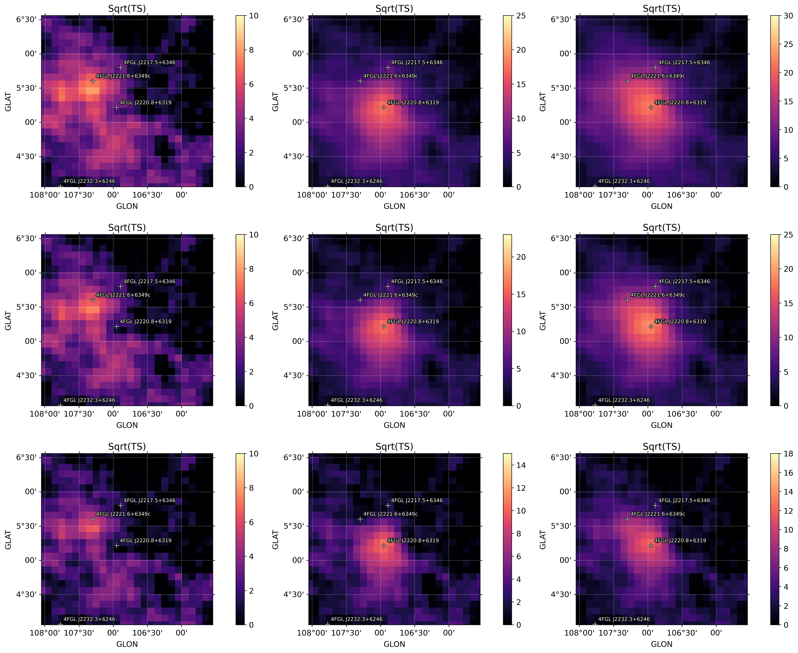
图注：$\sqrt{\mathrm{TS}}$ maps of the initial ROI ($2\degr \times 2\degr$) after the setup procedure. Columns (a), (b), and (c) correspond to the exclusion of 4FGL J2221.6+6349c only, 4FGL J2220.8+6319 only, and both 4FGL J2221.6+6349c and 4FGL J2220.8+6319, respectively. From top to bottom, each column shows the energy bands of 0.1--500\,GeV, 0.4--500\,GeV, and 1--500\,GeV. The test point sources are modeled as power-law spectra with a spectral index of 2.0.
对应解读：对应“建议重点查看的图表”第1、3、4项，以及“关键图表逐图导读”图1和空间拟合/残差诊断段落。
入选理由：该图给出不同能段下的sqrt(TS)空间图，并通过排除4FGL J2221.6+6349c、4FGL J2220.8+6319及二者同时排除来显示S140方向的显著过量，是判断新增GeV源是否真实、是否受邻近4FGL源影响、以及在>1 GeV较好PSF条件下形态是否仍显著的核心证据。它最直接支撑日报中关于TS图、残差、点源/扩展源退化和低能PSF陷阱的讨论。
来源与置信度：\(arxiv_source\)；high；\(arxiv_source\) / main__2_.tex:figure[1]
Fig02
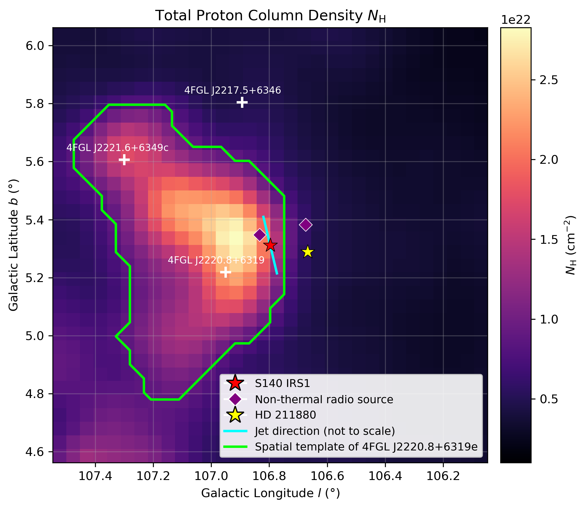
图注：Map of the total proton column density within the central $1.5^\circ \times 1.5^\circ$ region centered on the ROI. For ease of comparison, the initial positions of the three point sources are also indicated with crosses. The star closer to the central cross marks the location of the MYSO S140~IRS1, and a solid line at this star position indicates the jet direction (not representing the actual size). The two diamonds on either side of the solid line correspond to two non-thermal radio point sources. The star to the right of the solid line marks the position of HD~211880. The irregular polygon outlines the boundary of the total proton template (see Sec.~\(\ref{Comparison}\) and Sec.~\ref{density}), which corresponds to the boundary of the spatial distribution model for 4FGL J2220.8+6319e.
对应解读：对应“建议重点查看的图表”第2项，以及“关键图表逐图导读”图2和空间关联解释段落。
入选理由：该图展示中心区域总质子柱密度，并标出S140 IRS1、喷流方向、非热射电点源、HD 211880以及用于4FGL J2220.8+6319e的空间模板边界。它是检验GeV扩展源是否与分子云/气体分布和S140 IRS1位置重合的关键图，比单纯源位置图更能支撑‘伽马射线与承载S140 IRS1的分子云相关’这一物理解释。
来源与置信度：\(arxiv_source\)；high；\(arxiv_source\) / main__2_.tex:figure[2]
Fig03
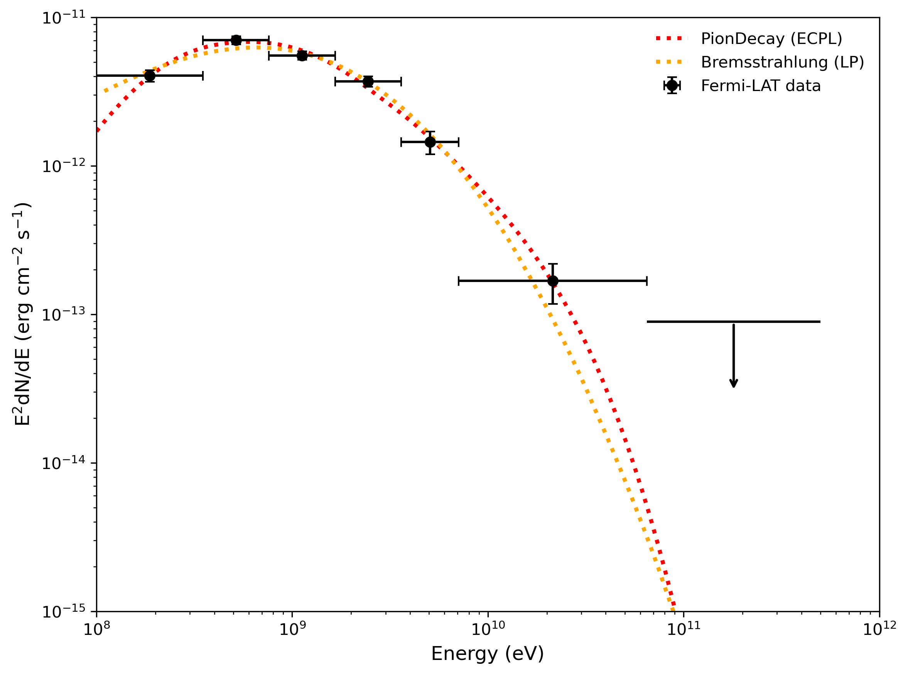
图注：The spectral energy distribution (SED) resulting from the Pion Decay and relativistic Bremsstrahlung of 4FGL J2220.8+6319e.
对应解读：对应“建议重点查看的图表”第5、7项，以及“关键图表逐图导读”图4、图5和物理辐射模型拟合段落。
入选理由：该图是4FGL J2220.8+6319e的SED物理模型图，包含π0衰变和相对论轫致辐射成分，可直接用于判断强子与轻子过程是否能重现LAT谱能量分布。虽然候选中没有单独的幂律/对数抛物线谱形比较表，但此图仍是理解GeV数据点、模型线和强子/轻子退化的主要依据。
来源与置信度：\(arxiv_source\)；high；\(arxiv_source\) / main__2_.tex:figure[3]
Fig04
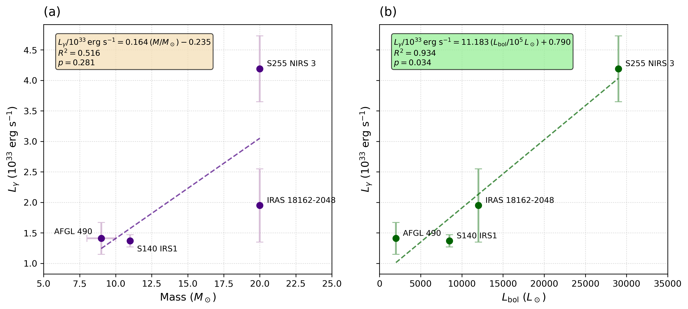
图注：Physical properties of four protostellar jet systems (possibly) associated with $\gamma$-ray emission. The corresponding parameters are given in Tab.~\(\ref{tab:gamma_bol_ratio}.\)
对应解读：对应“建议重点查看的图表”第8项，以及“关键图表逐图导读”图6和能量学/喷流可行性讨论。
入选理由：该图比较多个可能与伽马射线相关的原恒星喷流系统的物理性质，可用于支撑日报中关于S140 IRS1喷流作为粒子加速场所是否合理的能量学讨论。它不如TS图、气体模板图和SED模型图直接支撑探测与形态结论，但对解释喷流方案为何可行、以及与其他类似系统的相对位置有辅助价值。
来源与置信度：\(arxiv_source\)；high；\(arxiv_source\) / main__2_.tex:figure[4]
强相关工作
这篇工作应放在“恒星形成区和分子云的 GeV 非热辐射”脉络下阅读。同类对象包括 Cygnus Cocoon、Westerlund 星团区域、Carina 和 Orion 相关的 Fermi-LAT 研究；这些工作共同讨论年轻大质量恒星反馈、集体风、湍流和分子云靶物质能否产生可观测 GeV 辐射。建议检索关键词包括 “Fermi LAT star forming region gamma rays”、“Cygnus Cocoon cosmic ray acceleration”、“massive young stellar object jet gamma ray”、“molecular cloud cosmic ray illumination”。
理论上，它与超新星遗迹照亮分子云的经典强子图像有关，但源类不同：这里潜在加速器不是成熟超新星遗迹，而是 S140 IRS1 这样的年轻恒星体喷流或局域反馈。相反观点或张力主要来自两方面：一是银河弥散背景和未解析源可能伪造扩展 GeV 残差；二是强子和轻子模型在 GeV 数据下高度退化，不能仅凭谱拟合判定宇宙线成分。建议检索 “Fermi LAT extended source diffuse background systematics”、“hadronic leptonic degeneracy gamma ray molecular clouds”、“young stellar object jets particle acceleration”。
关于同一源 S140 和 S140 IRS1，还应查阅红外、毫米波 CO、射电喷流和外流文献，以确认分子云质量、距离、速度结构和喷流机械功率。本文给出的同一事件或同一源背景不是瞬变事件，而是同一恒星形成区和同一大质量年轻恒星体的多波段历史研究；可靠检索入口应使用 arXiv、NASA ADS 和 SIMBAD，以关键词 “S140 IRS1 outflow”、“S140 HII region molecular cloud”、“S140 IRS1 jet”。
同一事件 / 同类源线索：
相似工作：
基础理论 / 方法工作：
相反观点 / 张力线索：
2. A unified modeling of X-ray and gamma-ray spectro-polarimetric data: the case of Cygnus X-1
- 来源：arXiv / astro-ph.HE
- 链接：https://arxiv.org/abs/2608.06328v1
- 作者：Tristan Bouchet, Thomas Siegert, Victoria Grinberg, Jérôme Rodriguez, Floriane Cangemi, Philippe Laurent, Joern Wilms
- 评分：novelty 8/10，importance 8/10，relevance 9/10，final 9.35/10
- 推荐理由：Cyg X-1 的 X 射线到软伽马射线宽能段谱-偏振统一建模，给出硬尾同步辐射截止和偏振错位解释；对高能辐射机制和多仪器偏振分析方法都有较高价值。
中文题目：一种统一拟合 X 射线与伽马射线谱偏振数据的方法：以天鹅座 \(\mathrm{X\mbox{-}1}\) 为例
做了什么：这篇文章提出了一个面向多仪器、宽能段谱偏振数据的统一建模框架，并用 \(\mathrm{Cygnus\ X\mbox{-}1}\) 做测试对象，同时拟合 \(2\,\mathrm{keV}\) 到 \(2\,\mathrm{MeV}\) 的能谱和偏振观测。核心不是再给一个单独能段的经验拟合，而是把不同仪器、不同能量分箱、不同统计显著性的谱和偏振量放进同一个前向模型，显式处理不同辐射组分在能量上的偏振混合。作者由此更稳健地刻画了软伽马硬尾，并给出光学薄同步辐射截止能量 \(E_{\rm cut}=(3.9^{+0.6}_{-0.5})\times10^{2}\,\mathrm{keV}\)。这对理解黑洞 X 射线双星中非热电子加速、喷流或日冕几何，以及不同能段偏振角错位问题都有直接价值。
为什么重要：\(\mathrm{Cygnus\ X\mbox{-}1}\) 是黑洞 X 射线双星的标准源，但它在热康普顿化 X 射线、硬 X 射线硬尾和软伽马偏振之间长期存在不容易统一解释的张力。过去常见做法是分别拟合能谱、偏振度或偏振角，再事后比较；这会把能量分箱、仪器响应和多组分偏振混合造成的系统误差隐藏起来。本文的重要性在于把谱和偏振作为同一物理模型的投影来拟合，使得关于硬尾来源、同步辐射截止、磁场方向和相对论性增强的讨论不再只依赖某一个仪器或某一个能段的孤立结果。
理论 / 观测 / 仪器方法价值：方法价值在于它给出了可复用的宽能段谱偏振前向建模流程：模型先预测每个辐射组分的强度和斯托克斯量，再按仪器响应、能量分箱和观测误差生成可比较量。理论价值在于它把非热电子同步辐射的截止能量与加速和冷却时间尺度联系起来，并讨论在 Bohm 扩散极限附近电子能否被加速到所需能量。观测价值在于它为同时利用 \(\mathrm{IXPE}\)、硬 X 射线和 \(\mathrm{INTEGRAL}\) 类软伽马偏振结果提供了统一语言。仪器和分析价值在于它能处理显著性不均匀、分箱不一致和模型组分偏振角不相同的问题。
为什么应该关注：如果你关心黑洞吸积、喷流发射、日冕几何或高能偏振观测，这篇文章值得看，因为它处理的是未来高能谱偏振学会反复遇到的实际问题：不同仪器给出看似矛盾的偏振结果时，究竟是物理上真的有不同发射区，还是分析方法没有正确混合谱组分？对 \(\mathrm{Cygnus\ X\mbox{-}1}\) 而言，\(\sim400\,\mathrm{keV}\) 的同步辐射截止不仅是一个拟合参数，还约束了磁场、电子加速效率和辐射区速度结构。
展开详细解读：文章讲解、背景、理论、重点章节、图表与相关工作
文章详细讲解
科学问题：\(\mathrm{Cygnus\ X\mbox{-}1}\) 的硬态宽带辐射通常被分成热盘、热康普顿化日冕、反射以及高能硬尾等成分。能谱上，这些成分在 \(\mathrm{keV}\) 到 \(\mathrm{MeV}\) 区间相互重叠；偏振上，不同成分又可能有不同偏振度和偏振角。因此，把某一能段测得的偏振度直接归因于某一个物理成分很危险。本文要解决的问题是：如何在同一个统计框架中联合拟合能谱和偏振，并由此判断软伽马硬尾是否可由光学薄同步辐射解释，以及偏振角错位是否需要新的几何解释。
作者怎么做：文章构建了一个通用谱偏振前向模型。每个辐射成分不仅有能谱强度 \(I(E)\)，还带有能量相关的斯托克斯参数 \(Q(E)\) 和 \(U(E)\)。总模型不是简单相加偏振度，而是先把各成分的 \(I\)、\(Q\)、\(U\) 按能量相加，再通过每台仪器的能量响应和分箱方式得到可观测的通量、偏振度和偏振角。这样可同时处理 \(2\,\mathrm{keV}\) 到 \(2\,\mathrm{MeV}\) 的多仪器数据，并避免把窄能段偏振结果过度解释为单一物理源。
关键结果：应用到 \(\mathrm{Cygnus\ X\mbox{-}1}\) 后，模型改善了软伽马硬尾的刻画，并把光学薄同步辐射截止能量约束到 \(E_{\rm cut}=(3.9^{+0.6}_{-0.5})\times10^{2}\,\mathrm{keV}\)。这个数值很有信息量：如果硬尾来自非热电子同步辐射，那么截止位置反映了最高能电子、磁场强度、加速效率和同步冷却之间的平衡。作者还把这一结果放在 Bohm 扩散和同步冷却的图像下讨论，说明它对非热电子加速机制有约束力。
另一个关键点是偏振角错位。既有 X 射线和软伽马偏振观测对 \(\mathrm{Cygnus\ X\mbox{-}1}\) 的几何解释并不完全一致。作者提出一种基于磁场螺旋性和多普勒增强的解释：如果辐射区存在有序但非平面投影的螺旋磁场，且不同速度或不同视线方向区域受到不同 Doppler 权重，那么净偏振方向可能相对低能辐射或喷流轴发生偏转。这不是简单地说“磁场方向不同”，而是强调能量选择、辐射区速度结构和偏振矢量相加的共同作用。
局限和下一步：摘要没有暗示所有参数都已经唯一确定。谱偏振拟合仍受限于仪器系统误差、非同时观测造成的源态差异、辐射成分模型的简化，以及偏振角在低偏振度区域的不稳定性。下一步最重要的是把这一框架用于严格同时的多任务观测，比较不同吸积态下的参数迁移，并用更物理的喷流辐射传输或混合日冕模型替代部分经验成分。
关键结果是怎么做出来的
本文最重要的结果是用统一谱偏振拟合锁定软伽马硬尾及其同步辐射截止。样本不是一批源，而是围绕同一标准源 \(\mathrm{Cygnus\ X\mbox{-}1}\) 的宽能段数据集；能量覆盖从软 X 射线 \(2\,\mathrm{keV}\) 到软伽马 \(2\,\mathrm{MeV}\)。关键在于作者没有把不同仪器给出的偏振点当成互不相关的事后约束，而是把它们作为同一模型经不同响应矩阵和不同分箱后的观测量。这使得某一能段偏振测量的权重由其统计误差和系统误差自然决定。
数据选择上，文章面向黑洞双星硬态或接近硬态的高能发射解释。\(\mathrm{Cygnus\ X\mbox{-}1}\) 的低能端能谱约束热盘、康普顿化连续谱和反射，高能端则对硬尾和非热粒子更敏感。统一拟合的好处是：如果低能康普顿化成分延伸到硬 X 射线，它会稀释或旋转总偏振；若忽略这种混合，高能偏振度可能被系统性高估或低估。
统计上，证据链应从联合似然或等价的联合拟合统计量读起。谱数据一般贡献通道计数或通量残差项，偏振数据则贡献 \(Q\)、\(U\) 或由它们导出的偏振度与偏振角约束。由于偏振度是正定量，在低显著性时直接拟合偏振度会有偏差；更稳健的做法是拟合斯托克斯平面中的近似高斯量或使用仪器给出的偏振似然。本文强调能处理不同统计显著性，说明其结论不应只看某几个高偏振点，而要看全局模型是否同时解释能谱和偏振。
支撑结论的图表应包括：宽带能谱分解图，显示热康普顿成分、反射和硬尾的相对贡献；偏振度随能量变化图，显示模型混合后能否贯穿 X 射线到软伽马；偏振角随能量变化图，检验所谓错位是否发生在硬尾主导的能段；以及参数置信区间图，尤其是 \(E_{\rm cut}\) 与同步辐射归一化、磁场或电子谱参数之间的退化。\(E_{\rm cut}=(3.9^{+0.6}_{-0.5})\times10^{2}\,\mathrm{keV}\) 的误差应理解为在所采用模型族和数据组合内的约束，而非完全模型无关的测量。
系统误差方面，最需要警惕的是非同时性、交叉定标、背景主导能段的偏振伪信号、以及把复杂辐射区压缩成少数组分带来的模型误差。稳健性检验应看作者是否改变能量范围、去掉某个仪器、调整分箱、改变硬尾函数形式，或允许不同成分偏振角自由变化后仍得到相近的截止能量和偏振解释。若这些检验成立，本文的核心贡献就不仅是给出一个 \(\sim400\,\mathrm{keV}\) 数字，而是展示了宽带谱偏振联合建模确实能减少“单仪器解释”的歧义。
展开背景、理论、公式、模型、章节和图表导读
背景知识
\(\mathrm{Cygnus\ X\mbox{-}1}\) 是最早被确认含有恒星级黑洞的 X 射线双星之一，由一颗大质量伴星和一个吸积黑洞组成。它亮、近、长期可观测，并在硬态和软态之间变化，因此一直是检验吸积盘、热日冕、喷流耦合和高能辐射机制的基准源。正因为它太亮、数据太多，不同仪器和不同年代给出的细节差异常常暴露出模型不完备，而不是简单地“测得更准”。
在经典图像中，硬态 \(\mathrm{Cygnus\ X\mbox{-}1}\) 的几 \(\mathrm{keV}\) 到百 \(\mathrm{keV}\) 辐射主要来自热电子日冕对盘光子的逆康普顿散射；能谱通常表现为幂律加高能折断，并叠加铁线和康普顿反射隆起。但在更高能量，特别是数百 \(\mathrm{keV}\) 到 \(\mathrm{MeV}\) 区间，观测显示可能存在额外硬尾。这一硬尾可能来自非热康普顿化，也可能与喷流中的同步辐射有关。两种解释对电子分布、磁场和源区几何的要求完全不同。
偏振观测为这个问题提供了独立约束。热康普顿化的偏振取决于散射几何和盘倾角；同步辐射在有序磁场中可产生较高偏振度；反射成分也会改变偏振方向。早期软伽马偏振报告和近年 X 射线偏振任务给出的信息组合在一起后，出现了能量相关偏振度和偏振角不容易由单一区域解释的情况。所谓“错位”问题，本质上是不同能段净偏振矢量方向可能并不相同。
为什么现在值得重新看？一方面，\(\mathrm{IXPE}\) 等任务让 X 射线偏振从罕见测量变成可与能谱联合建模的数据类型；另一方面，硬 X 射线和软伽马仪器积累的长时间观测仍是研究硬尾的关键。单独看某个能段容易得到看似明确但互相矛盾的结论；现在需要的是能跨仪器处理 \(I\)、\(Q\)、\(U\) 的统一框架。
该领域常见误区包括：把总偏振度等同于某个单一辐射成分的本征偏振度；忽略无偏振或低偏振成分对高偏振成分的稀释；把偏振角差异直接解释为两个完全不同的源区，而不考虑矢量相加和相对论性增亮；以及把经验能谱硬尾的截止能量过度解释为唯一的粒子最高能量。本文正是试图用联合前向建模减少这些误区。
基础理论 / 方法脉络
基础物理图像可以从多组分辐射相加开始。观测到的光子通量不是单个机制的直接输出，而是盘黑体、热或混合康普顿化、反射、同步辐射等成分在同一能量通道内的叠加。能谱只记录总强度 \(I(E)\)，而偏振还需要两个线偏振斯托克斯量 \(Q(E)\) 和 \(U(E)\)。如果不同成分偏振角不同，总偏振不是偏振度的线性平均，而是 \(Q\) 和 \(U\) 的矢量相加。
对同步辐射而言，相对论电子在磁场中回旋并辐射，单个电子的特征频率随电子洛伦兹因子 \(\gamma\) 的平方增长。若电子分布是幂律并带有高能截断，光子谱也会出现对应的弯折或截止。光学薄同步辐射在有序磁场中可以有很高的线偏振度，因此软伽马硬尾若高度偏振，会自然指向同步辐射或至少指向有序非热过程。
对热康普顿化而言，低能盘光子在热电子云中多次散射后形成硬 X 射线连续谱。其谱形主要受电子温度、光学深度和几何控制；偏振则受散射次数、日冕形状、盘倾角和反射贡献影响。一个 slab 状日冕、球形日冕和喷流基底给出的偏振方向可能不同，因此谱偏振联合拟合比单独能谱更能区分几何。
本文的方法假设每个辐射成分可以被赋予能量相关的强度和偏振性质，再通过仪器响应投影到观测空间。关键量包括总通量 \(I\)、分量通量 \(I_k\)、分量偏振度 \(\Pi_k\)、分量偏振角 \(\psi_k\)、总偏振度 \(\Pi\)、总偏振角 \(\psi\)，以及硬尾截止能量 \(E_{\rm cut}\)。其中 \(E_{\rm cut}\) 与粒子加速和冷却有关，但其数值也会受谱分解方式影响。
常见退化包括：硬尾归一化与截止能量之间的退化；同步辐射磁场强度与最高电子能量之间的退化；高偏振硬尾与低偏振康普顿成分之间的稀释退化；以及不同仪器交叉定标带来的谱斜率偏差。偏振角在偏振度较低时尤其容易出现非高斯误差，因此在斯托克斯空间拟合通常比直接拟合 \(\Pi\) 和 \(\psi\) 更稳健。
公式与推导
第一步是把谱偏振写成斯托克斯矢量。对第 \(k\) 个辐射成分，强度、线偏振度和偏振角分别为 \(I_k(E)\)、\(\Pi_k(E)\) 和 \(\psi_k(E)\)，则
这里的 \(2\psi_k\) 反映线偏振方向相差 \(180^\circ\) 等价，而不是 \(360^\circ\) 才等价。
第二步是多组分相加。总斯托克斯量为
这条式子说明偏振混合必须在 \(Q\) 和 \(U\) 层面完成；只有当所有 \(\psi_k\) 相同时，总偏振度才近似是按通量加权的标量平均。
第三步由总斯托克斯量得到可观测偏振度和偏振角：
实际计算中应使用双参数反正切以确定象限；在 \(\Pi(E)\) 接近零时，\(\psi(E)\) 的统计分布会变得非常非高斯。
第四步是仪器前向折叠。第 \(j\) 个能量通道中的模型计数可写为
其中 \(t_{\rm exp}\) 是曝光时间，\(R_j(E)\) 是能量响应，\(A_{\rm eff}(E)\) 是有效面积，\(b_j\) 是背景。不同仪器的 \(R_j(E)\)、\(A_{\rm eff}(E)\) 和分箱不同，因此必须在模型空间统一、观测空间分别比较。
第五步是偏振调制。对理想线偏振探测器，方位角 \(\phi\) 的计数分布可近似写成
其中 \(\mu_{100}(E)\) 是 \(100\%\) 偏振光的调制因子。该式连接了物理偏振量与探测器实际测到的调制曲线。
第六步是硬尾同步辐射的经验谱形。若光子谱在相关能段近似为幂律加指数截止，可写成
其中 \(K_{\rm syn}\) 是归一化，\(E_0\) 是参考能量，\(\Gamma_{\rm syn}\) 是光子指数，\(E_{\rm cut}\) 是本文约束到约 \(3.9\times10^2\,\mathrm{keV}\) 的截止能量。
第七步把截止能量与电子能量联系起来。同步辐射特征光子能量满足近似标度
其中 \(B\) 是磁场强度，\(\gamma\) 是电子洛伦兹因子，\(\delta\) 是多普勒因子。对银河系源 \(\mathrm{Cygnus\ X\mbox{-}1}\)，红移 \(z\) 可忽略，但 \(\delta\) 仍可因喷流或流动辐射区而重要。
第八步比较加速与冷却。Bohm 扩散极限下加速时间常写作
其中 \(\eta\geq1\) 描述相对 Bohm 极限的加速效率；同步冷却时间为
令 \(t_{\rm acc}=t_{\rm syn}\) 可估计最高 \(\gamma\)，从而判断观测到的 \(E_{\rm cut}\) 是否要求极端加速效率。
第九步是联合拟合的统计诊断。若谱通道采用泊松似然、偏振斯托克斯量近似高斯，则总对数似然可概念性写为
其中 \(n_j\) 是观测计数，\(\mu_j\) 是模型计数，\(\Delta\mathbf{s}\) 是观测与模型斯托克斯向量差，\(\mathbf{C}\) 是协方差矩阵。这一式子解释了为什么联合拟合能自然合并不同仪器和不同显著性的约束。
模型拟合 / 应用方法
本文的拟合对象包括宽带能谱和偏振信息。能谱部分要拟合各辐射成分的形状、归一化和交叉定标常数；偏振部分要拟合或指定各成分的偏振度和偏振角，并通过斯托克斯相加得到总偏振。最关键的参数之一是同步辐射硬尾的 \(E_{\rm cut}\)，其约束来自高能谱形弯折和偏振能量依赖的共同作用。
似然构建应理解为多数据集联合。对于高计数 X 射线谱，可用近似 \(\chi^2\) 或更合适的计数统计；对于背景显著的硬 X 射线和软伽马数据，泊松统计、背景模型和系统误差更重要；对于偏振数据，直接拟合 \(Q\) 和 \(U\) 通常比拟合 \(\Pi\) 和 \(\psi\) 更好，因为后者在低信噪比时有 Rice 分布偏差。文章所说“不同统计显著性”的稳健合并，关键就在这里。
参数退化主要有几类。第一，\(E_{\rm cut}\)、硬尾光子指数和硬尾归一化可相互补偿；第二，康普顿化高能折断和额外同步硬尾在部分能段可能重叠；第三，高偏振硬尾如果通量占比小，会被低偏振主成分稀释，使本征偏振度和通量占比退化；第四，偏振角错位可由多个低偏振成分的矢量叠加造成，也可由单个高偏振成分真实旋转造成。
残差诊断很重要。读者应分别看能谱残差和偏振残差：能谱残差如果只在 \(\gtrsim100\,\mathrm{keV}\) 出现系统弯曲，说明硬尾模型可能不足；偏振残差如果在 \(Q\) 和 \(U\) 上呈现同向系统偏离，说明偏振角或组分混合有问题；如果只有 \(\Pi\) 偏高而 \(\psi\) 不稳定，则可能只是低显著性正定偏差。模型比较应关注加入同步硬尾或允许能量相关偏振角后，信息准则、似然改变量或后验预测残差是否显著改善。
模型也可能失败。若源在不同观测期间吸积态变化明显，非同时数据的联合拟合会把时间变化误当成能量结构。若软伽马背景或仪器调制因子的系统误差被低估，硬尾偏振约束会过强。若真实辐射区是连续分层喷流或复杂磁流体结构，用少数离散组分表示会导致参数具有有效意义而非直接物理意义。实际应用中，该框架最好与同时观测、分态筛选和后验预测检验结合使用。
重点章节 / 结果段落怎么读
数据/样本部分应先看作者如何定义 \(\mathrm{Cygnus\ X\mbox{-}1}\) 的观测状态、能量范围和仪器组合。特别要注意不同数据是否同时、是否处于相近硬度状态、各仪器交叉定标如何处理，以及偏振点是原始斯托克斯量还是已压缩成 \(\Pi\) 和 \(\psi\)。这些选择决定了后续物理解释的可信度。
方法部分是全文的核心。读者应重点看谱偏振模型如何从分量 \(I_k(E)\)、\(Q_k(E)\)、\(U_k(E)\) 生成总观测量，如何处理能量分箱不一致，以及如何把不同统计显著性的测量合并。若文中给出软件实现或通用接口，这部分比具体源结果还重要，因为它可迁移到其他 X 射线双星、活动星系核或瞬变源。
主结果部分应围绕硬尾和截止能量阅读。重点看宽带能谱分解、硬尾是否必须、\(E_{\rm cut}\) 的置信区间如何得出，以及替代模型是否能给出同样好的拟合。不要只记住 \(3.9\times10^2\,\mathrm{keV}\) 这个数，还要看它与硬尾斜率、归一化和偏振参数的相关性。
讨论部分应重点看两条物理解释链。一条是非热电子在 Bohm 扩散和同步冷却下是否能产生所需截止；另一条是磁场螺旋性和多普勒增强如何解释偏振错位。前者约束微观加速，后者约束宏观几何和速度场。
附录或稳健性检验如果存在，读者应优先检查：去掉某个仪器后结论是否保持；改变硬尾参数化后 \(E_{\rm cut}\) 是否移动；改变偏振系统误差后偏振角错位是否仍显著；以及交叉定标常数是否落在合理范围。
建议重点查看的图表
-
宽带能谱与模型分解图：看 \(2\,\mathrm{keV}\) 到 \(2\,\mathrm{MeV}\) 范围内各成分如何接力，尤其是硬尾在哪个能段超过热康普顿成分。
-
能谱残差图：检查加入同步硬尾前后，数百 \(\mathrm{keV}\) 附近是否仍有系统性残差；残差若集中在某台仪器的能段，要警惕交叉定标或背景问题。
-
偏振度随能量变化图：看模型是否能同时解释低能 X 射线偏振和软伽马高偏振；重点关注误差条大、显著性低的能点是否被过度解释。
-
偏振角随能量变化图：这是检验错位解释的关键。应看偏振角变化是否与硬尾通量占比上升同步，而不是只看单个能点的角度差。
-
参数置信区间或后验角图：重点看 \(E_{\rm cut}\) 与硬尾归一化、光子指数、本征偏振度、偏振角之间的相关性。
-
模型比较表：看不同模型的统计量、自由参数数目和信息准则，而不只看最佳拟合曲线是否好看。
-
稳健性检验图或表：关注删除某个数据集、改变能量范围或加入系统误差后，\(E_{\rm cut}\) 和偏振错位结论是否稳定。
关键图表逐图导读
图 1：建议把它作为宽带数据总览图来读。横轴通常应为能量 \(E\)，纵轴为 \(E F_E\)、计数率或展开后的能量通量。数据点来自不同仪器，模型线分成盘、康普顿化、反射和硬尾等成分。读图重点是硬尾在数百 \(\mathrm{keV}\) 附近如何接管总通量；陷阱是展开谱会依赖参考模型，不能把视觉连续性误认为模型唯一性。
图 2：若为能谱残差或模型比较图，横轴仍为能量，纵轴为标准化残差、数据/模型比或 \(\Delta\chi\)。应看没有硬尾或没有截止时残差是否在高能端呈系统偏离。陷阱是高能通道背景占比高，少数大误差点不应被当成强证据；真正重要的是残差是否跨多个相邻通道和多个仪器一致。
图 3：偏振度能谱图应以能量为横轴、\(\Pi\) 为纵轴，数据点带置信区间，模型线可能显示总偏振及各成分本征偏振。主要结论是多组分混合能否解释从 X 射线到软伽马的偏振度变化。陷阱是总偏振度不等于硬尾本征偏振度；如果硬尾通量占比低，即使本征偏振高，总 \(\Pi\) 也会被稀释。
图 4：偏振角图应以能量为横轴、\(\psi\) 为纵轴，重点看低能与高能偏振角是否存在系统偏移。若模型线随能量平滑旋转，说明偏振错位可能来自成分混合；若只有高能点突变，则可能需要独立辐射区或更复杂磁场。陷阱是当 \(\Pi\) 接近零时，\(\psi\) 本身几乎没有物理约束。
图 5：参数置信区间图或后验 corner 图应关注 \(E_{\rm cut}\) 的一维分布和二维相关。若 \(E_{\rm cut}\) 与 \(\Gamma_{\rm syn}\) 或归一化强相关，说明截止位置部分由谱形假设决定；若在替代模型中仍集中在 \(\sim400\,\mathrm{keV}\)，结论更稳健。
图 6：如果文中有 Bohm 扩散和同步冷却解释图，横轴可能是磁场 \(B\)、加速效率 \(\eta\) 或电子能量，纵轴可能是截止能量或时间尺度。应看观测允许区是否落在物理合理的 \(\eta\geq1\) 区域。陷阱是这种图通常依赖辐射区 Doppler 因子、磁场均匀性和单区假设。
论文原图 / 可嵌入图片
Fig06
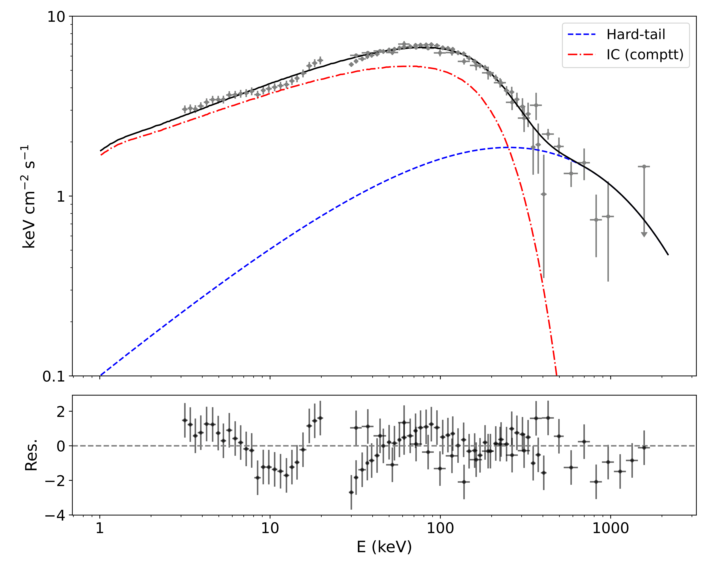
图注：Spectral fit of \(\cygx\) INTEGRAL data (grey) with each component shown in blue (synchrotron) and red (IC), and total model in black. Associated residuals are shown in the lower panel.
对应解读：对应“宽带能谱与模型分解图”和“能谱残差图”，也直接支撑模型拟合段落中关于同步硬尾截止能量与热康普顿成分分离的讨论。
入选理由：该图同时给出 Cyg X-1 的 INTEGRAL 能谱拟合、同步辐射硬尾与 IC 成分分解以及下方面板残差，是判断数百 keV 附近硬尾是否接管通量、是否存在系统性高能残差的核心证据，比单纯偏振或方法示意图更直接支撑日报的主要物理解读。
来源与置信度：\(arxiv_source\)；high；\(arxiv_source\) / main.tex:figure[6]
Fig08
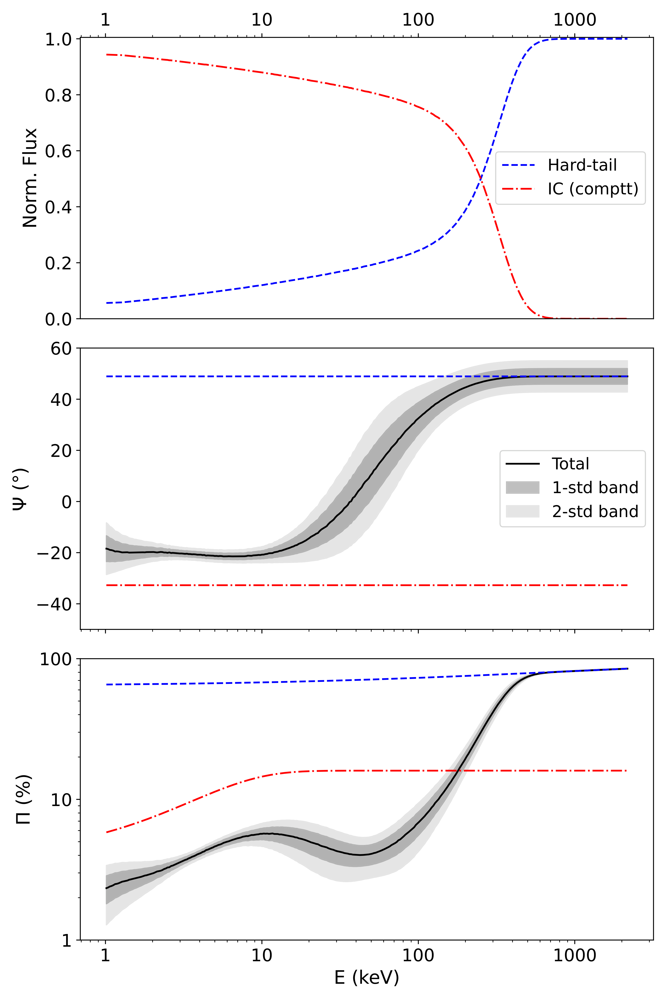
图注：Polarization angle and fraction of the total model (black). Individual component are shown in blue (Synchrotron) and red (IC).
对应解读：对应“偏振度随能量变化图”和“偏振角随能量变化图”，支撑关键图表逐图导读中关于总模型、同步成分和 IC 成分偏振混合的分析。
入选理由：该图同时展示总模型及同步辐射、IC 分量的偏振角和偏振度，是检验低能 X 射线与软伽马偏振错位、以及硬尾通量占比上升时偏振是否同步变化的最关键图。它直接体现斯托克斯矢量相加后总偏振不等于单个成分本征偏振的结论。
来源与置信度：\(arxiv_source\)；high；\(arxiv_source\) / main.tex:figure[8]
Fig07
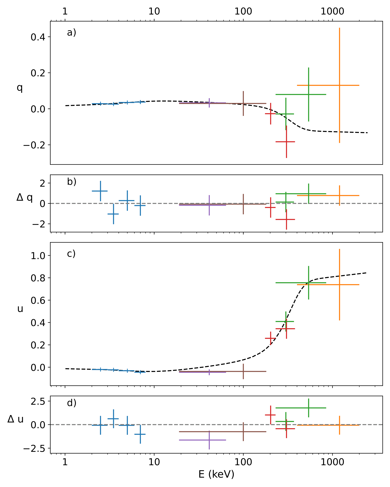
图注：Best fit model (black dashed) of the polarization-dependent Stokes parameters of \(\cygx\) (panels a and c), with associated residuals (panels b and d).
对应解读：对应模型拟合段落中“直接拟合 Q 和 U 通常比拟合偏振度和偏振角更好”以及“偏振残差诊断”的讨论。
入选理由：该图给出偏振相关 Stokes 参数的最佳拟合及残差，是评估统一谱偏振框架是否真正拟合偏振观测的关键诊断。相比只显示偏振度或偏振角的数据汇总，它更贴近文章方法核心，也能检查 Q、U 残差是否存在系统偏离。
来源与置信度：\(arxiv_source\)；high；\(arxiv_source\) / main.tex:figure[7]
Fig05
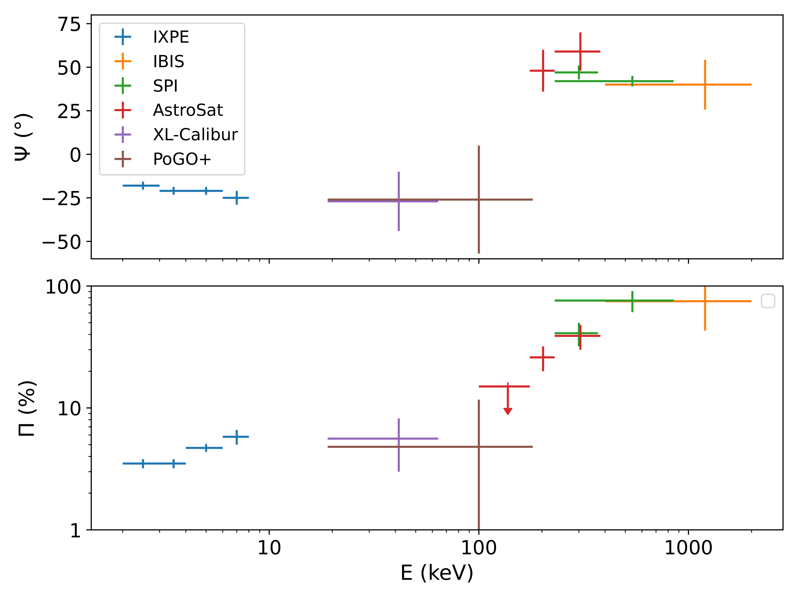
图注：Polarization parameters of \(\cygx\) measured by different instruments in the HS.
对应解读：对应“偏振度随能量变化图”“偏振角随能量变化图”以及日报中关于不同仪器硬态偏振测量差异和错位问题的背景说明。
入选理由：该图汇总不同仪器对 Cyg X-1 硬态偏振参数的测量，是理解为什么需要统一多仪器谱偏振拟合的观测动机。它能帮助读者看到软伽马高偏振、不同能段偏振角差异及误差条大小，但本身不是最终模型分解，因此排序低于 Fig08 和 Fig07。
来源与置信度：\(arxiv_source\)；high；\(arxiv_source\) / main.tex:figure[5]
Fig04
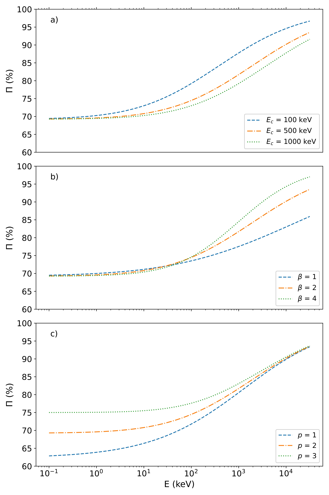
图注：Polarization fraction of synchrotron emission from a stretched cut-off power-law electron distribution. a) For different values of $E_{cut}$. b) For different values of $\beta$. c) For different values of $p$. Default values for all plots are $E_{cut}=500$ keV, $p$=2, $\beta$=2.
对应解读：对应“参数置信区间或后验角图”中关于 \(E_cut\) 与同步辐射偏振性质相关性的替代支撑，也对应模型拟合段落中硬尾截止能量对偏振能量依赖的影响。
入选理由：虽然它不是后验 corner 图，但直接展示同步辐射电子分布参数，尤其 \(E_cut\)、beta 和 p 如何改变偏振分数。它有助于解释为什么约束 \(E_cut\) 不只是能谱问题，也会影响偏振能量依赖，是理解 约400 keV 截止物理含义的重要辅助图。
来源与置信度：\(arxiv_source\)；high；\(arxiv_source\) / main.tex:figure[4]
Fig10
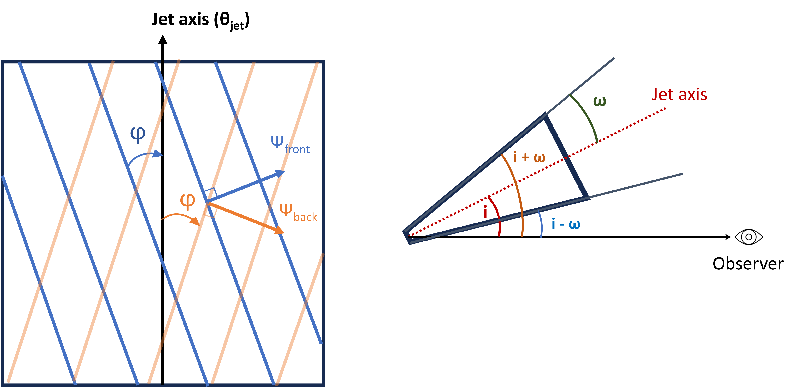
图注：Geometric sketch of the helicity boosting scenario. Left: a zoom on a vertical slice of the jet seen from the side, with the front magnetic field shown with blue lines, whereas the back magnetic field is shown in orange. Right: Inclination and viewing angle of the jet with respect to an observer.
对应解读：对应关键图表逐图导读中关于偏振角错位解释，以及详细解读里“磁场螺旋性和 Doppler 增强”的物理图像。
入选理由：该图是螺旋磁场与 Doppler boosting 场景的几何示意，能直观说明作者提出的偏振角错位解释。它不提供拟合统计量或残差，科学诊断价值低于谱偏振数据图，但对理解文章提出的新几何解释很有帮助。
来源与置信度：\(arxiv_source\)；high；\(arxiv_source\) / main.tex:figure[10]
强相关工作
同一源背景中，\(\mathrm{Cygnus\ X\mbox{-}1}\) 的软伽马偏振和 X 射线偏振已有重要观测。早期 \(\mathrm{INTEGRAL}\) 相关结果报告了高能硬尾的强偏振，推动了“喷流同步辐射”解释；近年 \(\mathrm{IXPE}\) 对 \(\mathrm{Cygnus\ X\mbox{-}1}\) 的 X 射线偏振测量则对内盘和日冕几何给出约束。本文的定位不是否定这些观测，而是提供统一比较它们的方法，尤其适合检索关键词：“\(\mathrm{Cygnus\ X\mbox{-}1}\) gamma-ray polarization”、“\(\mathrm{Cygnus\ X\mbox{-}1}\) \(\mathrm{IXPE}\) polarization”、“black hole binary spectro-polarimetry”。
在理论上，相关工作包括热康普顿化偏振、喷流同步辐射、混合热非热日冕模型、以及磁化喷流中的螺旋磁场偏振转移。可能存在的张力在于：软伽马高偏振倾向于有序磁场同步辐射，而部分 X 射线偏振结果更容易由盘-日冕几何解释；若二者偏振角不一致，就需要多区或分层模型。建议检索关键词：“hybrid Comptonization black hole binaries”、“Bohm diffusion synchrotron cooling cutoff”、“helical magnetic field Doppler boosting polarization”。
同一事件 / 同类源线索：
- https://arxiv.org/abs/2608.06328
- https://ui.adsabs.harvard.edu/abs/2011Sci...332..438L/abstract
- https://ui.adsabs.harvard.edu/abs/2022Sci...378..650K/abstract
相似工作：
- https://www.science.org/doi/10.1126/science.1200848
- https://www.science.org/doi/10.1126/science.add5399
基础理论 / 方法工作：
- https://ui.adsabs.harvard.edu/abs/1973A%26A....24..337S/abstract
- https://ui.adsabs.harvard.edu/abs/1979ApJ...232..259S/abstract
相反观点 / 张力线索：
（未提供）
3. Search for an all-sky and a Galactic Ridge diffuse neutrino emission with the first 2 years of KM3NeT/ARCA data
- 来源：arXiv / astro-ph.HE
- 链接：https://arxiv.org/abs/2608.06163v1
- 作者：The KM3NeT Collaboration
- 评分：novelty 7/10，importance 8/10，relevance 9/10，final 9.05/10
- 推荐理由：KM3NeT/ARCA 前两年数据的全天和 Galactic Ridge 弥散天体中微子搜索，虽无显著探测但给出通量拟合和上限，是高能中微子天文学的重要阶段性结果。
中文题目：用 KM3NeT/ARCA 前两年数据搜索全天区和银道脊弥散中微子发射
做了什么：这篇 KM3NeT 合作组论文用 ARCA 探测器早期 6、8、19、21 个探测单元配置累计 640 天数据，搜索两类弥散高能中微子信号：全天区各向同性天体物理中微子通量，以及来自银道面内银道脊区域的扩展发射。全天区分析在单味、单幂律假设下得到通量归一化 \(\phi_0^{1f}=3.0^{+2.1}_{-2.0}\times10^{-18}\ {\rm GeV^{-1}\ cm^{-2}\ s^{-1}\ sr^{-1}}\) 和谱指数 \(\gamma=3.00^{+0.30}_{-0.35}\)，但统计显著性不足；银道脊分析在当前灵敏度下尚不能有效约束通量参数。论文的主要价值不是宣布发现，而是把 ARCA 早期数据的弥散流分析链、背景建模、有效面积和上限框架跑通，为完整 KM3NeT 阵列未来与 IceCube 互补的南天区中微子天文学奠定基线。
为什么重要：高能天体物理中微子弥散背景已经由 IceCube 建立，但其源族组成、能谱是否单一、银河系贡献有多大仍未解决。KM3NeT/ARCA 位于北半球海底，对南天区尤其银心方向有良好视场；即使早期配置灵敏度有限，也能检验分析方法、背景控制和系统误差预算是否足以支撑未来发现级测量。
理论 / 观测 / 仪器方法价值：对观测和方法的价值在于：论文给出了 ARCA 从小规模阵列到弥散流搜索的完整似然框架，包含全天区各向同性模板和银道脊空间模板的处理、能量与方向信息的联合使用、上限与可信区间的导出。对理论的价值在于，它把银河中微子模型、IceCube 弥散谱和未来地中海中微子望远镜可检验的参数空间放到同一比较图景中。
为什么应该关注：如果你关心高能中微子来源、银河宇宙线传播、银心方向 TeV--PeV 辐射，或者下一代中微子望远镜如何从“工程调试”过渡到“天体物理约束”，这篇文章值得读。它告诉你当前 ARCA 早期数据还看不到什么、为什么看不到、哪些统计量已经接近可用，以及未来探测单元增加后最先会在哪些参数空间产生竞争力。
展开详细解读：文章讲解、背景、理论、重点章节、图表与相关工作
文章详细讲解
科学问题：论文要回答的是两个相邻但并不相同的问题。第一，KM3NeT/ARCA 的早期数据中是否已经能看到类似 IceCube 所测的全天区弥散天体物理中微子通量；第二，是否能在银道面、尤其银道脊方向看到由银河宇宙线与气体相互作用产生的扩展中微子发射。前者更接近各向同性的宇宙源族积分背景，后者则检验银河系内强子过程和宇宙线传播模型。由于 ARCA 位于北半球，长期目标是对南天和银心区域给出与 IceCube 不同系统误差、不同视场权重的独立测量。
作者怎么做：合作组使用 ARCA 最早期的 6、8、19、21 个 active detection units 配置，总 livetime 为 640 天。由于阵列规模在数据期间持续变化，分析不能简单套用一个固定有效面积，而必须按配置和运行时间分别处理探测器响应。全天区搜索采用单味天体物理通量的单幂律参数化，用能量相关的事件可观测量和方向信息区分大气中微子、大气 muon 以及可能的天体物理成分。银道脊搜索则加入一个空间受限的银河模板，关注靠近银道面的扩展区域，而不是点源搜索。
关键结果：全天区单幂律拟合给出 \(\phi_0^{1f}=3.0^{+2.1}_{-2.0}\times10^{-18}\ {\rm GeV^{-1}\ cm^{-2}\ s^{-1}\ sr^{-1}}\)，\(\gamma=3.00^{+0.30}_{-0.35}\)，这里的归一化通常理解为某个参考能量处的单味通量。这个拟合值与 IceCube 已知弥散流量级并不荒谬，但误差很大，且论文明确指出没有达到统计显著发现。银道脊拟合更弱：当前数据量和阵列规模不足以对通量参数形成有效约束，因此主要给出上限，并与现有实验和模型比较。
局限和下一步：最大限制来自早期 ARCA 的体积和 livetime，特别是高能尾部事件数有限；其次是海水光学性质、光传感器响应、重建误差、大气 muon 泄漏和大气中微子通量模型的系统误差。银道脊分析还受到空间模板选择和银河弥散模型差异的影响。下一步不是简单延长曝光，而是随着更多探测单元上线，重新标定能量响应、改进分类器和联合拟合全天区与银河模板；届时 ARCA 对银心方向的可见性会使它在银河中微子问题上真正有竞争力。
关键结果是怎么做出来的
数据和样本选择的核心是早期 ARCA 的非均匀配置。论文把 6、8、19、21 个探测单元阶段合并为 640 天 livetime，但每一阶段的几何接受度、触发效率、重建质量和能量响应不同。读者应重点看作者如何定义最终事件样本：哪些事件被判定为上行或近水平候选，如何抑制下行大气 muon，是否按重建质量、方向误差或能量 proxy 设切，以及各配置的 Monte Carlo 是否分别归一化到相应 livetime。
全天区结果的证据链不是“看到一堆事件”这么简单，而是比较多成分概率模型。信号模板通常是各向同性天体物理中微子，能谱设为 \(\phi(E)\propto E^{-\gamma}\)；背景模板包含常规大气中微子、可能的 prompt 大气中微子和误重建大气 muon。拟合量是单味通量归一化 \(\phi_0^{1f}\) 与谱指数 \(\gamma\)，报告的 \(68\%\) credible interval 表明论文采用了贝叶斯或等价的后验区间表达，而不是单纯给最大似然点。结果偏软，\(\gamma\simeq3\)，但不应过度解读为物理谱软，因为早期数据中能量动态范围和背景退化都很强。
显著性方面，论文强调未达到统计显著结果，因此关键是看 test statistic 或后验与无天体物理成分模型之间的差异是否足够。对全天区搜索，拟合出的正通量可来自少量高能或高信号权重事件，也可由背景模型波动吸收；因此应检查似然轮廓、\(\phi_0^{1f}\)-\(\gamma\) 等高线、以及在 \(\phi_0^{1f}=0\) 附近后验是否仍有相当权重。对银道脊，若似然面在归一化方向很平坦，说明数据尚未能区分银河模板和背景。
支持结论的图表应包括：事件能量 proxy 分布与背景、信号叠加模型的比较；天空或银道坐标下的候选事件分布；全天区通量参数的二维置信区域；银道脊通量上限与 IceCube、ANTARES、理论模型的比较。特别要看残差是否集中在某些 zenith 或能量区间，因为这种集中可能暗示大气 muon 泄漏或探测器响应误差，而不是天体信号。
系统误差和稳健性检验是这篇论文能否被信任的关键。需要关注作者是否改变大气中微子归一化、谱形、海水吸收和散射长度、DOM 光学效率、角分辨率和能量尺度，并观察通量上限和最佳拟合点如何移动。对于银道脊，还要看空间区域或模板定义变化后上限是否稳定。早期数据没有显著信号并不意外；更重要的是这些检验是否显示分析链没有产生假阳性趋势。
展开背景、理论、公式、模型、章节和图表导读
背景知识
研究对象是 TeV--PeV 能区的天体物理中微子。它们通常来自强子加速环境：宇宙线质子或核与气体发生 \(pp\) 相互作用，或与辐射场发生 \(p\gamma\) 相互作用，产生带电和中性介子；中性介子衰变给出 \(\gamma\) 射线，带电介子和 muon 衰变给出中微子。中微子不受磁场偏转、吸收也弱，因此可直接追踪强子过程，但代价是探测截面小、事件率低、背景复杂。
历史背景上，IceCube 已经建立了天体物理中微子弥散通量，并通过 HESE、through-going muon、cascade 等多种样本给出能谱测量。不过不同通道给出的谱指数、归一化、南北天差异和可能的低能 excess 并非完全一致。银河平面中微子发射长期是一个关键问题：如果银河宇宙线在气体盘中相互作用，应有沿银道面的弥散中微子；但其强度取决于宇宙线密度梯度、扩散系数、源分布和气体模型。
KM3NeT/ARCA 的观测背景与 IceCube 很互补。IceCube 在南极，对北天上行 muon 中微子有极好背景抑制，而对南天高能事件需面对大量下行大气 muon。ARCA 在地中海，能以地球作为屏蔽观察南天，包括银心和内银河区域；这使它未来特别适合检验银河弥散中微子和南天源族。本文使用的是早期配置，科学上更像一次从仪器建设到天体物理分析的压力测试。
为什么现在值得重新看：一方面，IceCube 已报告银河平面中微子证据，并且 LHAASO、HAWC、H.E.S.S. 等 \(\gamma\) 射线观测正在揭示银河 PeVatron 候选体和弥散 TeV--PeV 辐射；另一方面，KM3NeT 的有效体积正在迅速增长，早期分析决定了未来数据如何无缝累计。常见误区是把“拟合到正通量”当成“发现”，或把“上限不够强”当成“模型被排除”。对低事件率中微子分析，显著性、试验因子、系统误差和模板退化比最佳拟合点本身更重要。
基础理论 / 方法脉络
物理图像从事件产生开始。高能中微子穿过地球或海水后，偶尔通过弱相互作用与核子发生 charged-current 或 neutral-current 散射。对 muon 中微子 charged-current 事件，产生的高能 muon 可在海水中传播很长距离并发出 Cherenkov 光；对电子或 tau 中微子，以及 neutral-current 事件，更多表现为级联光斑。ARCA 的多光学模块记录光子到达时间和电荷，由此重建入射方向、能量 proxy 和事件拓扑。
全天区弥散流的基本假设是：天体物理中微子在大尺度上近似各向同性，且每味通量可用单幂律描述。这个假设不是说真实宇宙一定如此，而是用两个参数捕捉当前统计量下最可测的部分。谱指数 \(\gamma\) 决定高能事件相对低能事件的比例；通量归一化 \(\phi_0^{1f}\) 决定总体事件数。由于大气中微子谱更陡、天体物理谱相对更硬，能量 proxy 是分离信号与背景的核心。
银道脊分析的物理假设不同：信号在天空中不是均匀分布，而是沿银道面集中，特别是在内银河区域增强。模板可能来自 \(\gamma\) 射线观测、气体柱密度和宇宙线分布模型，或简化的空间窗口。这里的关键退化在于：空间模板越窄，角分辨率越重要；模板越宽，就越容易与各向同性天体物理背景或大气背景混淆。早期 ARCA 的统计量不足时，这种退化会直接表现为无法约束银道脊通量。
观测分析逻辑是把真实通量通过探测器响应卷积成可观测分布。响应包括有效面积、能量迁移矩阵、方向点扩散函数、触发与选择效率，以及随探测器配置变化的 livetime。实际拟合不只看总事件数，而是看事件在重建能量、天顶角、赤经赤纬或银道坐标、拓扑分类中的联合分布。主要系统误差来自大气通量模型、海水光学性质、DOM 灵敏度、光传播模拟、重建偏差和大气 muon 的尾部泄漏。
公式与推导
第一步是写出单味弥散中微子通量的常用单幂律形式：
这里 \(E_\nu\) 是中微子能量，\(E_0\) 是参考能量，\(\phi^{1f}_0\) 是单味归一化，\(\gamma\) 是谱指数。该式假设在拟合能区内没有显著谱断裂、截止或多源族叠加结构。
第二步是把通量转换成探测器期望事件数。对第 \(c\) 个探测器配置，期望信号数可写为：
其中 \(T_c\) 是该配置 livetime，\(d\Omega\) 是立体角元，\(A_{{\rm eff},c}\) 是包含相互作用概率、几何接受度和选择效率的有效面积。早期 ARCA 必须对不同 \(c\) 分别求和。
第三步，把多个配置合并：
这里 \(\mu_b\) 包括常规大气中微子、可能的 prompt 大气中微子和误重建大气 muon。这个求和看似简单，但实际要求每个配置有独立响应矩阵和质量选择效率。
第四步，银道脊信号需要空间模板：
\(S_{\rm GR}(\Omega)\) 描述银道脊在天空上的相对形态，\(\phi_{\rm GR,0}\) 是模板总强度归一化。若 \(S_{\rm GR}\) 与背景角分布差别不够大，空间信息对拟合的帮助会减弱。
第五步，观测量不是 \(E_\nu\) 和真实方向，而是重建变量 \(x\)，例如能量 proxy、天顶角和拓扑。概率密度可写为响应卷积：
其中 \(k\) 表示某个成分，\(R(x|E_\nu,\Omega)\) 是能量和方向迁移响应。这个式子说明为什么能量分辨率和角分辨率会直接影响通量上限。
第六步，非分箱扩展似然的一般形式为：
\(N\) 是候选事件数，\(\boldsymbol{\theta}\) 包含信号通量参数，\(\eta_j\) 是 nuisance parameters，\(\pi_j\) 是系统误差先验或约束项。分箱分析可写成等价的 Poisson 乘积。
第七步，若采用分箱计数，似然为：
其中 \(m\) 是能量、角度或拓扑 bin，\(n_m\) 是观测计数，\(\lambda_m\) 是模型预期计数。残差 \(n_m-\lambda_m\) 的结构比总 \(\chi^2\) 更能暴露背景建模问题。
第八步，发现显著性或模型比较常用似然比统计量：
帽号表示最大似然或后验峰值。由于 \(\phi_0\ge 0\) 位于参数边界，\(TS\) 的零假设分布不一定是简单的 \(\chi^2\)，通常需伪实验或专门校准。
第九步，上限可由后验积分或 profile likelihood 给出。贝叶斯单边 \(90\%\) 上限满足：
若数据对银道脊参数几乎没有约束，后验会主要由先验、物理边界和背景涨落决定，因此上限比最佳拟合点更有解释价值。
第十步，可用近似尺度理解未来灵敏度：背景主导时通量灵敏度近似满足
而信号稀少且背景很低时接近 \(\phi_{\rm sens}\propto 1/(T\langle A_{\rm eff}\rangle)\)。这解释了为什么 ARCA 增加探测单元后，尤其在高能和银心方向，约束能力会非线性改善。
模型拟合 / 应用方法
本文这类分析的拟合对象不是单一光变曲线或能谱点，而是多维事件分布。全天区拟合的主要物理参数是 \(\phi_0^{1f}\) 和 \(\gamma\)，背景参数可能包括大气中微子归一化、谱形修正、prompt 成分和大气 muon 归一化。银道脊拟合则增加空间模板归一化，谱指数可固定或与归一化联合拟合，具体取决于当前数据是否足以同时约束二者。
似然构建的关键是信号与背景概率密度函数。高能事件更偏向天体物理信号，但能量 proxy 分辨率有限；靠近银道面的事件更支持银河模板，但角分辨率和模板宽度会稀释这种信息。若使用贝叶斯表达，可信区间受先验选择影响，特别是在通量接近零、数据不强约束时；若使用频率学 profile likelihood，则需要正确处理非负通量边界和 nuisance profiling。
残差诊断应分几层看。第一看重建能量分布：高能尾部是否有系统 excess，还是只在单个 bin 有涨落。第二看天顶角或 declination：大气 muon 泄漏常在接近地平线或下行区域表现为结构性残差。第三看银道坐标：若所谓银道脊信号同时出现在非银道面区域，就更可能是背景归一化或有效面积问题。第四看不同探测器配置分别拟合是否一致，因为早期 ARCA 的配置变化本身就是潜在系统误差源。
主要退化关系包括 \(\phi_0^{1f}\) 与 \(\gamma\) 的反相关、天体物理软谱与大气背景谱形的混淆、银道脊宽模板与各向同性背景的混淆，以及有效面积能量尺度与通量归一化的退化。若能量尺度整体偏高，拟合可能倾向更软或更低归一化；若大气背景被低估，正的天体物理通量拟合点可能只是补偿项。
实际应用上，这篇论文提供的是未来数据累积的基准模型。随着 ARCA 探测单元增加，分析可扩展到分拓扑联合拟合、与 IceCube 或 ANTARES 历史样本联合约束、对不同银河模板做 Bayesian evidence 或 likelihood ratio 比较。模型失败的情形也很清楚：若真实天体物理谱有断裂、多成分或强各向异性，单幂律全天区模型会把复杂性压缩进一个偏软的 \(\gamma\)；若银河发射由少数未解析源主导，平滑银道脊模板也可能失效。
重点章节 / 结果段落怎么读
数据/探测器配置部分应首先读。重点不是 ARCA 的一般介绍，而是 6、8、19、21 个探测单元阶段如何定义、各自 livetime 多少、数据质量切如何做、Monte Carlo 是否按配置生成。这个部分决定后面所有有效面积和事件率能否相信。
事件选择和背景建模部分是第二个重点。读者应查清楚作者如何分离中微子候选与下行大气 muon，使用了哪些重建质量变量、能量 proxy 和方向变量；同时要看大气中微子和大气 muon 模拟如何归一化，是否有数据控制区验证。
全天区弥散流拟合部分应关注单幂律假设、参考能量、单味通量定义和 \(\phi_0^{1f}\)-\(\gamma\) 置信区间。不要只抄最佳拟合值，要看无信号假设相对于最佳拟合的似然差，以及与 IceCube 测量区间的重叠是否在统计上有意义。
银道脊搜索部分应读模板定义、空间窗口和上限计算。当前结果没有有效约束通量参数，因此应重点看上限曲线相对于理论模型和 IceCube 银河平面结果的位置，而不是寻找所谓最佳拟合 excess。
讨论和系统误差部分决定这篇早期结果的长期价值。读者应看海水光学、DOM 效率、能量尺度、大气通量、muon contamination 等不确定性如何传播到上限和拟合参数；还要看作者对未来完整 ARCA 灵敏度的外推是否基于同一分析链。
建议重点查看的图表
-
探测器配置与 livetime 表：检查 6、8、19、21 个探测单元阶段分别贡献多少曝光，是否某一阶段主导最终灵敏度。
-
最终事件样本的重建能量 proxy 分布：看数据点、总背景、天体物理最佳拟合模型在高能尾部的差异；警惕单个 bin 涨落驱动正通量。
-
天顶角或赤纬分布：检查大气 muon 泄漏是否集中在近地平线或下行区域，这会影响全天区弥散流拟合。
-
全天区 \(\phi_0^{1f}\)-\(\gamma\) 置信/可信等高线：看参数退化方向、\(\phi_0^{1f}=0\) 附近是否仍允许、与 IceCube 区域是否重叠。
-
银道坐标下候选事件图或模板权重图：看事件是否沿银道面聚集，还是与曝光或背景分布一致。
-
银道脊通量上限与模型比较图：看上限在哪些能区最接近理论预测，是否已能排除任何乐观模型。
-
系统误差表或 nuisance impact 图：看哪个不确定性对通量上限影响最大，尤其是 DOM 效率、海水光学和大气背景归一化。
关键图表逐图导读
图 1：若论文给出 ARCA 布局或运行配置图，横轴/标注通常对应时间、探测单元数或几何布设，纵向信息是累计 livetime 或有效曝光。读图时要确认最终 640 天并非等效完整阵列曝光；早期配置的有效体积远小于设计规模，因此不要把未发现解释为对理论模型的强排除。
图 2：事件选择后的能量 proxy 分布通常以重建能量估计量或分类器能量分数为横轴，以事件数为纵轴。数据点应与堆叠背景直方图和可能的天体物理信号线比较。关键是高能端：天体物理信号会在高能端相对增强，但如果只有一两个 bin 偏高，统计解释必须依赖似然而非目测。
图 3：天顶角、赤纬或方向分布图用于验证背景。横轴若是 \(\cos\theta_z\) 或 declination，纵轴是事件数或概率密度。读图陷阱是把曝光不均匀导致的方向结构误看成天体各向异性；应同时看模拟背景是否经过同样选择和 livetime 加权。
图 4：全天区通量拟合等高线图通常以 \(\gamma\) 为一轴、\(\phi_0^{1f}\) 为另一轴，并标出 \(68\%\) 或 \(90\%\) 区域。主要结论是当前数据允许一个与 IceCube 量级相近但很不精确的软谱解；陷阱是把等高线中心当成发现。应检查零通量或低通量边界是否被强烈排除。
图 5：银道脊天空图或模板图应以银经、银纬为坐标，叠加候选事件或信号权重。真正的银道脊信号应沿 \(|b|\) 较小区域增强，特别是内银河；如果事件分布跟曝光或背景模板相似，说明空间信息尚不足。
图 6：上限比较图通常以中微子能量或参考通量归一化为横轴/纵轴，显示 KM3NeT/ARCA 上限、IceCube/ANTARES 结果和若干理论模型。读图时要区分 differential sensitivity、integral upper limit 和模型归一化上限；不同谱指数或空间模板下的曲线不能直接逐点比较。
论文原图 / 可嵌入图片
Fig06
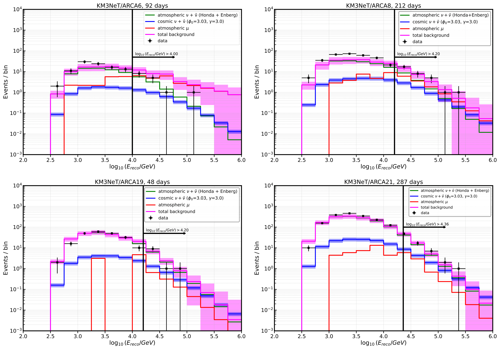
图注：\footnotesize{Distributions of the reconstructed energy using the best-fit estimate for the all-sky cosmic flux parameters for ARCA6$-$21. For ARCA19$-$21 the total background is upscaled by a factor obtained from background normalisation estimation. The expected background of atmospheric neutrinos and muons (purple) and the signal (blue) are shown with their total uncertainty bands as defined in the text. The vertical line in each plot shows the optimal energy threshold cut. The bottom-right panel does not include KM3-230213A~\(\cite{Nature}\) because the analysis is selecting strictly up-going events.}
对应解读：对应“最终事件样本的重建能量 proxy 分布”、关键图表导读图 2，以及模型拟合段落中关于高能尾部、背景归一化和单 bin 涨落的诊断。
入选理由：这是全天区弥散流分析最核心的事件级诊断图，直接展示 ARCA6-21 各配置的重建能量分布、数据点、总背景、天体物理最佳拟合信号、不确定性带和最优能量阈值。它最能检验日报强调的高能尾部是否由少数 bin 驱动，以及背景与信号在能量维度上的可分辨性。
来源与置信度：\(arxiv_source\)；high；\(arxiv_source\) / \(final_paper.tex\):figure[6]
Fig07
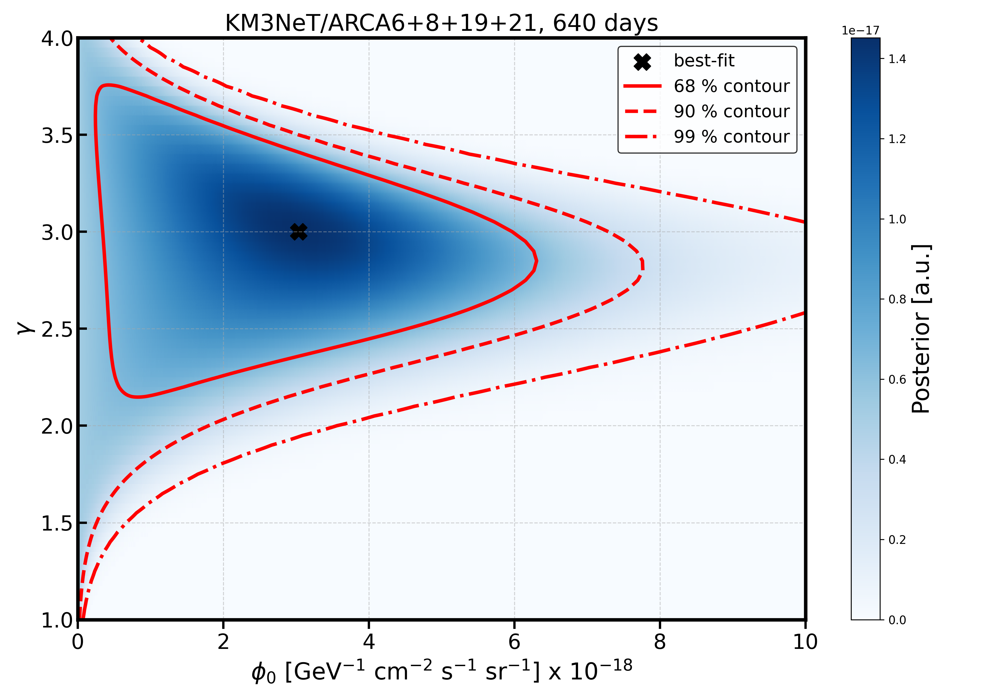
图注：\footnotesize{Marginalised posterior distribution for unblinded data at the final selection stage for the all-sky diffuse flux analysis after the cut on reconstructed energy. The $68\%$, $90\%$ and $99\%$ credible regions for the cosmic parameters together with the best point estimators are shown.}
对应解读：对应“全天区 \(\phi_0^{1f}\)-\(\gamma\) 置信/可信等高线”、关键图表导读图 4，以及模型拟合段落中的参数退化和非显著正通量解释。
入选理由：该图给出全天区分析最终选择后的 \(68\\%\)、\(90\\%\)、\(99\\%\) 后验可信区域和最佳估计点，直接支撑论文最重要的结果 \(\phi_0^{1f}\) 与 \(\gamma\)。相比单纯上限图，它更能展示软谱解的不确定性、参数退化方向以及不能把最佳拟合点解读为发现的原因。
来源与置信度：\(arxiv_source\)；high；\(arxiv_source\) / \(final_paper.tex\):figure[7]
Fig12
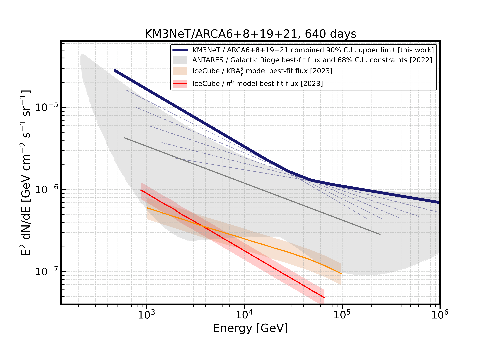
图注：\(\footnotesize\) Envelope of 90$\%$ C.L. upper limit for $\gamma \in [2.2, 2.7]$ for the Galactic Ridge diffuse flux shown as a function of the true neutrino energy (blue line). For comparison, ANTARES and IceCube best-fit fluxes are reported. IceCube limits have been rescaled considering the signal fraction contained in the Galactic Ridge.
对应解读：对应“银道脊通量上限与模型比较图”、关键图表导读图 6，以及详细解读中关于当前数据只能给出 Galactic Ridge 上限的结论。
入选理由：这是银道脊分析的主要结果图，展示 KM3NeT/ARCA 对 \(\gamma\in[2.2,2.7]\) 的 90% C.L. 上限包络，并与 ANTARES、IceCube 最佳拟合或限制比较。它直接回答当前灵敏度是否已接近或排除银河弥散模型，是银道脊部分最值得嵌入的图。
来源与置信度：\(arxiv_source\)；high；\(arxiv_source\) / \(final_paper.tex\):figure[12]
Fig11
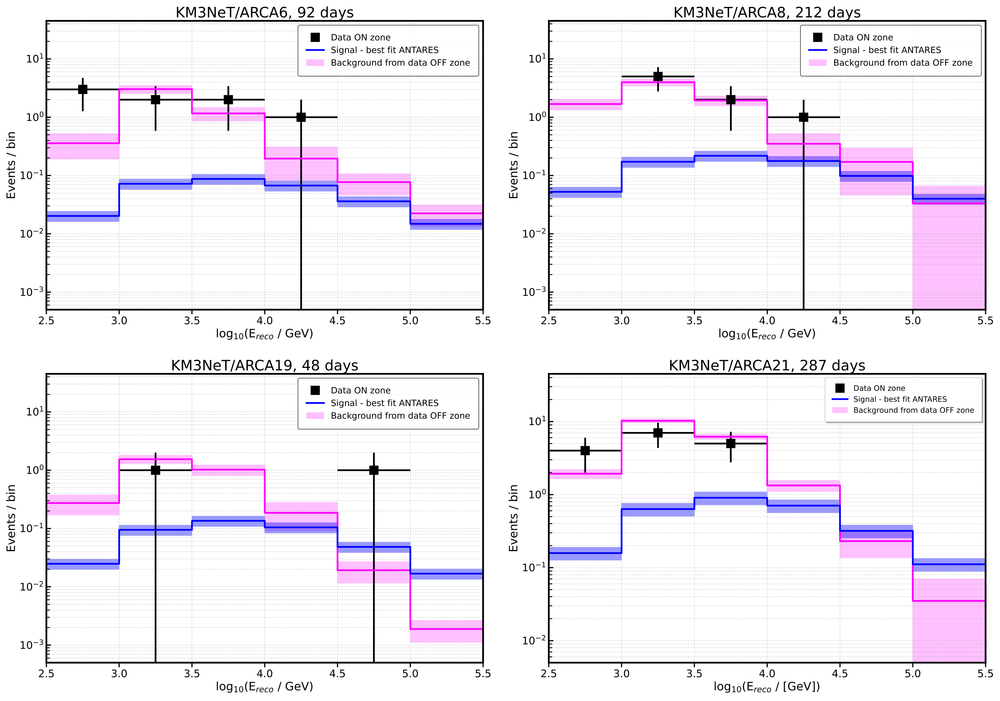
图注：\footnotesize{Energy distributions for the ARCA6-21 detector configurations. Data points in the Galactic Ridge ON region (black squares) are compared with background estimates derived from OFF regions with the magenta band representing the relative statistical uncertainty. The expected number of events based on the ANTARES best-fit result \cite{ANTARES_gp} is also displayed as a blue line with the associated systematic uncertainty (blue band).}
对应解读：对应“银道坐标下候选事件图或模板权重图”的事件检验延伸，以及模型拟合段落中关于 ON/OFF 背景估计和银道脊能量分布残差的讨论。
入选理由：该图显示 Galactic Ridge ON 区域数据与 OFF 区域背景估计的能量分布比较，并叠加 ANTARES 最佳拟合预期及系统误差带。它比单纯区域示意图更直接检验银道脊是否有能量相关 excess，是理解为什么当前数据不能约束通量参数的关键诊断图。
来源与置信度：\(arxiv_source\)；high；\(arxiv_source\) / \(final_paper.tex\):figure[11]
Fig10
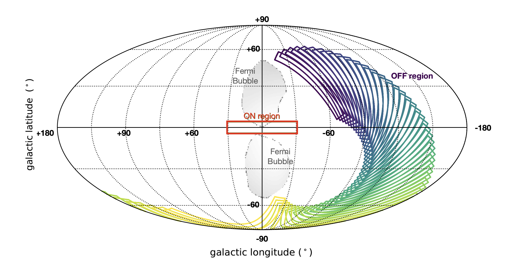
图注：\(\footnotesize\) Map in Galactic coordinates of the ON (red rectangle) and OFF (blue to yellow rectangles) regions, corresponding to time-shifted replicas of the same shape.
对应解读：对应“银道坐标下候选事件图或模板权重图”、关键图表导读图 5，以及银道脊 ON/OFF 空间模板定义。
入选理由：该图在银道坐标中给出 ON 区域和时间平移 OFF 区域，说明 Galactic Ridge 搜索的空间选择和背景估计几何。虽然不是结果图，但它是理解 Fig11 和 Fig12 中 ON/OFF 方法、银道脊区域定义以及空间信息是否真正来自银道面的必要上下文。
来源与置信度：\(arxiv_source\)；high；\(arxiv_source\) / \(final_paper.tex\):figure[10]
Fig04
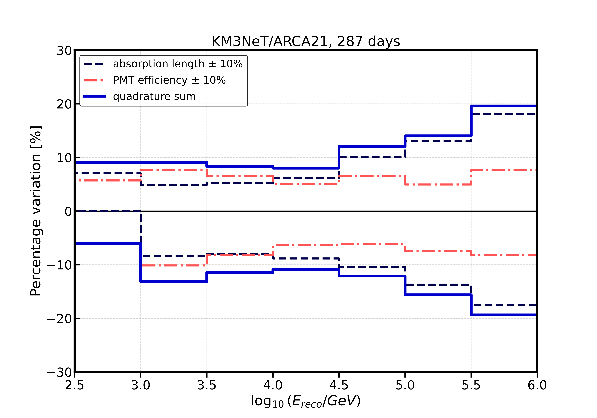
图注：\(\footnotesize\) Percentage variation relative to the nominal simulation as a function of reconstructed neutrino energy for an $E^{-2}$ astrophysical neutrino flux. It was obtained varying PMT efficiency and light absorption length from modified Monte Carlo simulations. The quadrature sum is taken as the uncertainty on the signal acceptance.
对应解读：对应“系统误差表或 nuisance impact 图”，以及模型拟合段落中关于 PMT 效率、海水光吸收长度和有效面积/信号接受度退化的讨论。
入选理由：该图量化 PMT 效率和光吸收长度变化对 \(E^{-2}\) 天体物理中微子信号接受度的能量依赖影响，并给出合成系统不确定性。它直接支撑日报中关于海水光学、传感器响应和能量相关有效面积系统误差会影响通量拟合与上限的判断。
来源与置信度：\(arxiv_source\)；high；\(arxiv_source\) / \(final_paper.tex\):figure[4]
强相关工作
这篇工作属于同类源/同类现象研究：高能弥散天体物理中微子背景、银河平面或银道脊中微子发射、以及地中海中微子望远镜早期数据分析。应把它与 IceCube 的弥散流发现、IceCube 银河平面中微子结果、ANTARES 对银河脊和全天天体物理通量的限制、以及 KM3NeT 设计灵敏度论文一起读。检索关键词可用 “KM3NeT ARCA diffuse neutrino flux”, “Galactic Ridge neutrino emission”, “IceCube Galactic plane neutrinos”, “ANTARES Galactic Ridge diffuse neutrino”。
需要注意的张力包括：IceCube 不同样本对弥散谱指数的偏好并不完全一致；银河平面中微子证据依赖空间模板和 \(\gamma\) 射线先验；\(\gamma\) 射线观测中的 leptonic/hadronic degeneracy 会影响从 \(\gamma\) 射线外推中微子通量。本文没有强到解决这些张力，但提供了一个独立半球、独立介质、独立系统误差的起点。后续若 ARCA 完整阵列仍看不到银道脊，而 IceCube 模板信号持续增强，就会成为值得严肃研究的跨实验系统误差或天空模型问题。
同一事件 / 同类源线索：
相似工作：
基础理论 / 方法工作：
相反观点 / 张力线索：
4. A broadband outburst of the compact steep-spectrum quasar 3C 138 in 2024-2026
- 来源：arXiv / astro-ph.HE
- 链接：https://arxiv.org/abs/2608.05852v1
- 作者：T. V. Mufakharov, Yu. V. Sotnikova, V. V. Vlasyuk, S. Yu. Sazonov, M. L. Khabibullina, A. G. Mikhailov, A. B. Pushkarev, T. An
- 评分：novelty 7/10，importance 7/10，relevance 10/10，final 9.05/10
- 推荐理由：3C 138 的 2024--2026 宽波段爆发研究包含 Fermi-LAT 伽马射线、X 射线、光学和射电监测及 SED 建模；AGN/喷流高能辐射方向高度相关。
中文题目：紧凑陡谱类星体 3C 138 在 2024–2026 年的宽波段爆发
做了什么：这篇文章报道了紧凑陡谱类星体 3C 138 在长期相对平静后，于 2024–2026 年进入一次宽波段活跃期。作者联合 RATAN-600、RT-32 的 \(1\)–\(22\,\mathrm{GHz}\) 射电监测，地面 \(R\) 波段光学观测，Swift/XRT 与 SRG/ART-XC 的 X 射线数据，以及 Fermi-LAT 的 \(\gamma\) 射线光变曲线，追踪了从射电到高能的时变行为。主要结论是：射电增亮自 2022 年后加速，并且高频更强；\(11\)–\(22\,\mathrm{GHz}\) 谱指数从陡谱演化到平谱或反转谱；X 射线流量在 2025–2026 年增加超过三倍，光子指数从 \(\Gamma_{\rm X}\simeq 1.6\) 硬化到 \(\Gamma_{\rm X}\simeq 0.9\) 后又软化；\(\gamma\) 射线、X 射线和光学峰值集中在约 \(13\) 天内，而射电则更慢、且有频率依赖的增亮。作者用两态 SED 建模表明，在给定紧凑辐射区几何下，一区同步自康普顿模型可以解释主要能谱，但外康普顿贡献仍受几何假设限制。
为什么重要：3C 138 通常被归入紧凑陡谱源，而这类源常被理解为年轻或被环境限制的射电活动体，整体上不像典型平谱耀变体那样剧烈可变。本文捕捉到 3C 138 从长期平静进入核心主导活跃期的过程，说明至少一部分紧凑陡谱类星体也能出现与喷流内新致密同步辐射成分类似的多波段爆发。这对理解紧凑射电源、喷流指向效应、核心与扩展成分分离，以及高能辐射区位置都有直接意义。
理论 / 观测 / 仪器方法价值：观测价值在于它提供了一组时间覆盖较密的宽频射电光变和谱演化，并与光学、X 射线、\(\gamma\) 射线峰值进行时序比较。方法价值在于作者把频率依赖的射电增亮、短时标高能/光学子爆发和两态 SED 拟合放在同一证据链中，而不是只用单波段亮度变化定义爆发。理论价值在于它检验了紧凑陡谱类星体中，一次新喷流成分从自吸收到透明、同时触发高能康普顿辐射的图像。
为什么应该关注：如果你关心紧凑射电源是否都只是“年轻射电星系”，这篇文章给出一个提醒：核心活动和取向效应可能在某些对象中非常重要。如果你做多波段时域天文学，它展示了射电延迟、谱硬化、高能峰值近同步这些诊断量如何共同约束爆发位置和辐射机制。如果你做 SED 建模，它也提醒一区模型可以拟合稀疏两态数据，但外光子场、源区尺寸、多区结构和能量均分的结论并不唯一。
展开详细解读：文章讲解、背景、理论、重点章节、图表与相关工作
文章详细讲解
科学问题：3C 138 是一个经典的紧凑陡谱类星体，过去数十年整体上较安静，射电谱以陡谱成分为主。问题在于，2024–2026 年它突然显示出从射电到 \(\gamma\) 射线的宽波段增强，这到底是一个普通的耀变体式核心爆发，还是紧凑陡谱源内部长期演化的一次新活动阶段？这个区分很重要，因为紧凑陡谱源通常被用于研究年轻射电喷流、强环境相互作用和小尺度射电结构；若核心在短时间内压倒扩展成分，传统分类和物理解释都需要重新审视。
作者怎么做：论文整合了多台设备和多个能段。射电部分使用 RATAN-600 与 RT-32 在 \(1\)–\(22\,\mathrm{GHz}\) 的多频监测，重点不是只看总流量，而是看不同频率增亮幅度、谱指数和谱形随时间变化。光学部分使用 \(R\) 波段观测解析后期子爆发；X 射线部分结合 Swift/XRT 与 SRG/ART-XC 得到流量和光子指数演化；\(\gamma\) 射线部分使用 Fermi-LAT 光变曲线并分解出多个 flare。作者还构建了平静态与活跃态的稀疏 SED，并尝试用一区同步辐射加同步自康普顿模型解释。
关键结果：射电增亮并非所有频率同时、同幅度上升，而是在 2022 年后逐渐加速，高频响应最强。这与一个新致密同步辐射成分从高频先变透明、再向低频传播的图像一致。\(11\)–\(22\,\mathrm{GHz}\) 谱指数从陡谱变为平谱甚至反转谱，是核心或新喷流结占比上升的直接迹象。高能端则更像短时标事件：X 射线流量增加超过三倍，\(\Gamma_{\rm X}\) 从约 \(1.6\) 硬化到约 \(0.9\)，之后软化；\(\gamma\) 射线、X 射线、光学峰值落在约 \(13\) 天窗口内，暗示这些能段来自同一活动 episode 或相近的辐射区。
局限和下一步：最大的限制是 SED 只有稀疏的两态覆盖，不能唯一地区分一区 SSC、SSC 加 EC、多区模型或时间依赖喷流模型。高能峰值的近同步并不等价于严格零延迟，受观测 cadence、Fermi-LAT 低光子统计和光学采样影响。射电演化也可能混合了核心、喷流结和扩展陡谱成分。下一步最关键的是 VLBI 多频成像和偏振监测：如果能直接看到核心区亮度温度、成分抛射、谱峰移动和偏振角旋转，就能检验本文提出的“长寿命核心主导活动加后期高能/光学 flare”图像。
关键结果是怎么做出来的
数据和样本选择方面，这篇文章是单源多波段时域研究，目标是 3C 138，而不是统计样本。作者使用 2024–2026 年活跃期数据，并结合早期射电监测来定义长期基线。射电数据覆盖 \(1\)–\(22\,\mathrm{GHz}\)，因此能比较低频扩展陡谱成分与高频核心成分的相对变化；光学使用 \(R\) 波段时间序列；X 射线来自 Swift/XRT 与 SRG/ART-XC；\(\gamma\) 射线来自 Fermi-LAT。这个数据组合的关键优势是能把慢变、受自吸收影响的射电过程和更接近瞬时粒子加速/康普顿辐射的高能过程分开。
最重要的射电证据是频率依赖的增亮和谱硬化。作者报告射电增亮在 2022 年后加速，且最高频最明显；\(11\)–\(22\,\mathrm{GHz}\) 谱指数由陡谱转为平谱或反转谱。读者应关注多频光变图和谱指数随时间图：如果高频先变亮、低频滞后或幅度较小，这通常说明新成分最初在低频自吸收，而不是整个扩展源同步增强。谱指数变化是比单一频率流量更强的证据，因为它直接显示辐射成分的相对权重发生了变化。
高能和光学证据链集中在 flare 分解与峰值对齐。作者将 Fermi-LAT 光变分解为五个 \(\gamma\) 射线 flare，并识别后期一系列光学子 flare。X 射线在 2025–2026 年上升超过三倍，同时谱变硬，\(\Gamma_{\rm X}\) 从约 \(1.6\) 到约 \(0.9\)，峰后再软化。\(\gamma\) 射线、X 射线和光学最大值在约 \(13\) 天内出现，这是本文判断存在共同活动 episode 的核心时序证据。这里的统计强度不应只看“峰值时间接近”，还要看时间 bin、误差条、背景扣除和 flare 分解的不确定性。
SED 建模方面，作者构建了平静态和活跃态两组宽波段 SED，并采用紧凑辐射区几何的一同步自康普顿解进行解释。拟合的主要结果不是给出唯一参数，而是说明在合理的一区 SSC 条件下可以重现实测 SED；加入或改变外部光子场时，EC 的贡献取决于几何假设和外场能量密度。活跃态下能量分配偏向相对论电子，说明爆发不是简单的整体归一化上升，而是粒子能谱、磁场或多普勒因子等物理量发生了变化。
系统误差和稳健性主要来自四类：第一，单盘射电总流量混合核心和扩展结构，需 VLBI 验证核心主导程度；第二，Fermi-LAT 对单源短时标 flare 的显著性受时间 bin 选择和背景模型影响；第三，X 射线光子指数极硬时，需要检查吸收、交叉定标和统计误差；第四，SED 稀疏会导致 \(B\)、\(\delta\)、\(R\)、电子密度和外光子场之间强退化。本文的稳健结论是“活动期真实存在且多波段相关”，较不稳健的是“唯一的辐射几何和 EC 占比”。
展开背景、理论、公式、模型、章节和图表导读
背景知识
3C 138 是一个著名的强射电类星体，常被列入紧凑陡谱源类别。紧凑陡谱源的典型特征是线性尺度小、整体射电谱较陡，谱峰通常不在高频平谱核心主导的位置。这类源长期以来有两种主要解释：一种认为它们是年轻射电源，喷流和瓣尚未扩展到大尺度；另一种认为它们受到宿主星系内稠密介质限制，喷流传播受阻。实际对象常混合这两种因素，并叠加取向和核心活动。
历史上，紧凑陡谱类星体与典型耀变体之间的边界并不干净。耀变体的强可变性、平谱、强偏振和高能辐射主要来自相对论喷流近视线方向的多普勒增强；紧凑陡谱源则常被视为较少受核心瞬变支配。然而，类星体型 CSS 往往仍有可观核心，若喷流取向适中或新成分足够亮，就可能在某些时期表现出耀变体式行为。3C 138 的这次爆发正好落在这个交界问题上。
观测背景上，宽波段监测比单能段发现更有诊断力。射电低频受同步自吸收和扩展陡谱结构影响，响应慢；高频射电更接近致密核心；光学可能包含喷流同步辐射和吸积盘贡献；X 射线可来自 SSC、EC、盘冕或喷流低能端；\(\gamma\) 射线通常要求高能粒子和足够强的靶光子场。因此，多能段峰值的相对时间、谱指数变化和 SED 形状共同决定解释。
现在值得重新看 3C 138，是因为它在数十年相对安静后突然进入活动期，并且现代监测能力能同时覆盖射电、光学、X 射线和 GeV \(\gamma\) 射线。过去对 CSS 源的判断常基于静态谱形和低分辨率结构，而时域数据能揭示核心是否短暂压倒扩展成分。对于喷流物理来说，这相当于在一个“本来不该太像耀变体”的对象中看到耀变体式发动机重新点火。
常见误区有几个。第一，陡谱分类不等于核心永远不变，也不等于没有多普勒增强。第二，\(\gamma\) 射线峰与光学峰接近不自动证明同一区域发射；还需考虑采样、误差和辐射冷却时间。第三，一区 SED 拟合成功不代表物理唯一，因为多组 \(B\)、\(\delta\)、\(R\) 和电子能谱都可能产生近似相同的双峰 SED。第四，总流量射电谱硬化不一定全由核心导致，也可能受多个自吸收成分叠加影响，必须用 VLBI 结构检验。
基础理论 / 方法脉络
基本物理图像是相对论喷流中的非热电子在磁场中产生同步辐射，并通过逆康普顿散射把低能光子提升到 X 射线或 \(\gamma\) 射线能段。对于一个致密新喷流成分，早期低频同步辐射常被自吸收，高频先变亮；随着成分膨胀、磁场下降和光深降低，谱峰向低频移动。因此，频率依赖的射电 flare 是判断喷流成分演化的关键。
本文涉及的谱指数诊断来自 \(S_\nu\propto \nu^\alpha\)。扩展射电瓣或老电子群通常有 \(\alpha<0\) 的陡谱；致密、自吸收或多个平谱核心成分叠加时，\(\alpha\) 可接近 \(0\) 或大于 \(0\)。3C 138 在 \(11\)–\(22\,\mathrm{GHz}\) 从陡谱变为平谱/反转谱，说明高频射电不再由老的光薄同步辐射主导，而是新近注入的致密成分占比上升。
X 射线光子指数 \(\Gamma_{\rm X}\) 描述光子谱 \(N(E)\propto E^{-\Gamma_{\rm X}}\)。\(\Gamma_{\rm X}\) 变小表示谱变硬。本文中 \(\Gamma_{\rm X}\simeq 0.9\) 是非常硬的状态，通常意味着高能端出现强的喷流逆康普顿成分，或者简单幂律拟合在有限能段内捕捉到复杂谱形的一部分。峰后软化则符合粒子注入停止后冷却、或者较硬成分相对贡献下降的图像。
SED 建模的基础是一区模型：假设一个半径 \(R\)、磁场 \(B\)、多普勒因子 \(\delta\) 的均匀运动辐射区，内部有非热电子分布 \(N_{\rm e}(\gamma)\)。电子产生同步辐射；这些同步光子再被同一电子群散射形成 SSC 分量。如果存在宽线区、尘埃环或盘辐射等外部光子，则会有 EC 分量。本文强调，在采用的紧凑区几何下 SSC 可以表示两态 SED，但 EC 相对贡献依赖几何，因此不能过度解读。
主要退化关系包括：增大 \(\delta\) 可以同时提升表观亮度并缩短内禀时标；改变 \(B\) 会移动同步峰并改变 SSC 相对强度；改变 \(R\) 会改变同步光子能量密度和自吸收频率；电子谱低能端会影响射电到红外，高能端影响 X 射线和 \(\gamma\) 射线。观测选择效应也明显：射电 cadence 较密但角分辨率不足，\(\gamma\) 射线有低计数和背景模型限制，光学可能受宿主、吸积盘和银河消光影响。
公式与推导
第一步，从观测谱指数开始。两频点射电谱指数可写为
其中 \(S_{\nu_1}\) 和 \(S_{\nu_2}\) 是频率 \(\nu_1\)、\(\nu_2\) 处的流量密度。若 \(\alpha_{12}<0\)，通常表示光薄同步辐射；若 \(\alpha_{12}\simeq 0\) 或 \(\alpha_{12}>0\)，则提示平谱核心、自吸收成分或多个谱峰叠加。本文的 \(11\)–\(22\,\mathrm{GHz}\) 谱硬化正是用这类量诊断。
第二步，同步辐射的特征频率由电子洛伦兹因子 \(\gamma\) 和磁场 \(B\) 决定：
其中 \(e\) 是电子电荷，\(m_{\rm e}\) 是电子质量，\(c\) 是光速，\(z\) 是红移，\(\delta\) 是多普勒因子。这个式子说明，高频射电和光学同步辐射可以来自更高 \(\gamma\)、更强 \(B\) 或更大 \(\delta\) 的区域。
第三步，同步自吸收导致低频光深较大。若吸收系数为 \(\kappa_\nu\)，源区尺度为 \(R\)，光深为
当 \(\tau_\nu\gg 1\) 时低频被压低，谱可呈反转；当 \(\tau_\nu\ll 1\) 时进入光薄陡谱。新喷流成分膨胀时，满足 \(\tau_{\nu_{\rm m}}\simeq 1\) 的谱峰频率 \(\nu_{\rm m}\) 会逐渐降低，因此高频 flare 通常早于低频 flare。
第四步，变源时标给出辐射区尺寸上限：
其中 \(t_{\rm var}\) 是观测到的变化时标。若光学、X 射线和 \(\gamma\) 射线峰值在约 \(13\) 天内集中出现，则可用这个式子估计高能辐射区的最大尺度，但要注意 \(13\) 天是多波段峰值窗口，不一定等于单个 flare 的真实倍增时标。
第五步，逆康普顿散射在 Thomson 极限下的特征频率近似为
其中 \(\nu_{\rm seed}\) 是种子光子频率。若种子光子来自同步辐射，就是 SSC；若来自宽线区、尘埃环或吸积盘，就是 EC。这个关系连接了电子能量、种子光子场和 X 射线/\(\gamma\) 射线峰的位置。
第六步，SSC 与同步辐射亮度比近似反映光子能量密度与磁场能量密度之比：
这里撇号表示喷流共动系。若 \(U'_{\rm syn}\) 增大或 \(B\) 减小，SSC 相对增强。本文发现活跃态能量分配偏向相对论电子，可理解为电子能量密度相对磁能更重要。
第七步，外康普顿贡献可写成类似比例：
其中 \(U_{\rm ext}\) 是活动星系核静止系外部光子能量密度，\(\Gamma_{\rm bulk}\) 是喷流体洛伦兹因子。由于 \(U_{\rm ext}\) 强烈依赖辐射区相对宽线区或尘埃环的位置，本文说 EC 贡献“几何依赖”是物理上合理的。
第八步，X 射线幂律拟合通常写为
其中 \(N(E)\) 是单位能量光子数谱，\(K\) 是归一化，\(E_0\) 是参考能量。本文 \(\Gamma_{\rm X}\) 从约 \(1.6\) 到约 \(0.9\) 的硬化意味着高能电子或康普顿分量在观测能段中的贡献增强。
第九步，多波段光变或 SED 拟合的似然可抽象为
其中 \(F_i\) 是观测流量，\(\sigma_i\) 是误差，\(\boldsymbol{\theta}\) 包括 \(B\)、\(R\)、\(\delta\)、电子谱参数和外场参数。这个式子提醒读者：稀疏 SED 的低 \(\chi^2\) 不等于参数唯一，必须结合时间信息和物理先验判断。
模型拟合 / 应用方法
本文的拟合分两类：一类是光变和 flare 分解，另一类是 SED 物理建模。光变分析中，射电部分更强调多频趋势、谱指数和频率依赖增亮；\(\gamma\) 射线部分将光变分解成五个 flare；光学部分识别多个子 flare；X 射线部分拟合流量和光子指数。读者应注意，不同能段的时间 bin、误差模型和采样密度不同，不能把峰值日期的接近性理解成无误差的精确同时性。
SED 拟合使用平静态和活跃态两组数据，采用一区同步辐射加 SSC 的框架，并讨论 EC 的可能贡献。主要拟合量包括同步分量归一化和峰位、康普顿分量强度、电子能谱参数、磁场 \(B\)、源区尺度 \(R\)、多普勒因子 \(\delta\) 以及能量密度比。由于两态 SED 稀疏，参数估计更接近“可行解展示”而非严格后验约束。
关键退化包括 \(B\) 与 \(\delta\) 的退化：较大的 \(\delta\) 可以把较低内禀亮度提升到观测值，也能移动峰频；较小 \(B\) 会提高 SSC 相对同步辐射的强度，但也改变冷却时间；\(R\) 与电子密度共同决定同步光子能量密度，因此影响 SSC。EC 相关参数退化更强，因为外部光子场能量密度取决于辐射区位置、宽线区或尘埃环半径，以及喷流体洛伦兹因子。
残差诊断上，读者应分别看射电、光学、X 射线和 \(\gamma\) 射线是否由同一模型同时解释。若模型能拟合 SED 总体双峰，但无法解释射电频率依赖延迟，说明需要时间依赖或多区模型。若 X 射线硬谱被 SSC 拟合但 \(\gamma\) 射线点偏高，则 EC 或另一辐射区可能必要。若低频射电残差系统性偏离，则说明扩展陡谱成分没有被充分分离。
模型可能失败的地方也很清楚：一区均匀球假设难以同时描述慢变射电核心、快速光学子 flare 和 GeV flare；总流量 SED 混合了不同空间尺度；外部光子场几何不确定；X 射线吸收或交叉定标误差会改变 \(\Gamma_{\rm X}\)。实际应用中，本文的建模更适合作为后续 VLBI、偏振和更密高能监测的物理先验，而不是最终参数表。
重点章节 / 结果段落怎么读
数据/样本部分应先看作者如何定义 3C 138 的平静态和活跃态，以及各能段数据的时间覆盖。重点检查 RATAN-600 与 RT-32 的 \(1\)–\(22\,\mathrm{GHz}\) 采样、光学 \(R\) 波段的 cadence、Swift/XRT 与 SRG/ART-XC 的观测时间，以及 Fermi-LAT 光变 binning。因为本文核心结论依赖跨能段时间关系，时间覆盖比单个流量点更重要。
射电结果部分是全文的骨架。读者应关注多频光变、谱指数演化和谱形变化，尤其是 \(11\)–\(22\,\mathrm{GHz}\) 从陡谱到平谱/反转谱的过程。这一节告诉你爆发是否由新致密成分驱动，以及为什么射电峰不必与光学或 \(\gamma\) 射线峰严格同步。
高能和光学结果部分应重点读 flare 分解。这里的关键是五个 \(\gamma\) 射线 flare、后期光学子 flare、X 射线流量增加超过三倍和 \(\Gamma_{\rm X}\) 硬化。读者要看作者如何给出峰值时间、误差和相互间隔，特别是约 \(13\) 天窗口的证据强度。
SED 建模部分应带着“可行性而非唯一性”的心态读。作者展示在采用的紧凑区几何下，一区 SSC 可以表示两态 SED，并讨论 EC 依赖几何。应重点看参数变化是否物理合理，例如活跃态能量分配向相对论电子偏移，以及模型是否需要远离能量均分。
讨论和结论部分把所有证据合成一个图像：一个更长寿命、核心主导的活动阶段正在形成，后期叠加高能和光学 flare，而射电演化主要受新同步辐射成分的光深和频率依赖传播控制。读者应注意哪些结论是观测直接支持的，哪些是模型解释层面的推断。
建议重点查看的图表
-
多频射电光变图：检查 \(1\)–\(22\,\mathrm{GHz}\) 各频率从 2022 年后是否同向增亮，高频是否幅度更大、上升更早或更快；这是新致密成分图像的核心证据。
-
射电谱和谱指数演化图：重点看 \(11\)–\(22\,\mathrm{GHz}\) 的 \(\alpha\) 是否从负值变到接近 \(0\) 或正值，以及误差条是否允许平谱/反转谱结论。
-
光学 \(R\) 波段光变图：检查后期子 flare 的数量、峰值时间和幅度，判断它们是否与高能 flare 在时间上有对应关系。
-
X 射线流量与 \(\Gamma_{\rm X}\) 随时间图：重点看流量增加超过三倍是否伴随显著硬化，以及峰后软化是否超出误差。
-
Fermi-LAT \(\gamma\) 射线光变和 flare 分解图：检查五个 flare 的时间位置、显著性、bin 选择和背景不确定性，避免把低统计涨落过度解释为真实子结构。
-
多波段峰值对齐图或时间线：重点看 \(\gamma\) 射线、X 射线和光学最大值落在约 \(13\) 天内的证据，以及该窗口相对于观测 cadence 是否足够窄。
-
平静态与活跃态 SED 图：检查同步峰、X 射线和 \(\gamma\) 射线点如何被 SSC 或 SSC 加 EC 模型解释，特别看射电低频是否被扩展成分污染。
-
模型参数或能量分配表：关注 \(U_{\rm e}\)、\(U_B\)、\(B\)、\(R\)、\(\delta\) 和 EC 外场假设，判断活跃态偏向相对论电子的结论是否稳健。
关键图表逐图导读
图 1：如果论文给出长期多频射电光变，横轴通常是观测日期或修正儒略日，纵轴是各频率流量密度 \(S_\nu\)。不同颜色或符号代表 \(1\)–\(22\,\mathrm{GHz}\) 频率。读图时不要只看最高点，而要比较不同频率的上升起点、斜率和幅度。高频强烈上升而低频较慢，是光深控制的新同步成分的典型迹象。陷阱是总流量包含扩展源，低频变化可能被稀释。
图 2：射电谱或谱指数演化图通常以频率 \(\nu\) 为横轴、流量密度 \(S_\nu\) 或谱指数 \(\alpha\) 为纵轴，展示不同时期的谱形。关键是 \(11\)–\(22\,\mathrm{GHz}\) 是否由下降谱变成平坦或上升谱。模型线若只是幂律拟合，应注意它不能唯一分解多个同步成分；若有谱峰拟合，应看峰频是否随时间向低频移动。
图 3：光学和高能光变对比图通常横轴为时间，纵轴分别为 \(R\) 波段流量或星等、X 射线流量、\(\gamma\) 射线流量。主要结论是光学、X 射线、\(\gamma\) 射线峰值集中在约 \(13\) 天内。读图陷阱是不同面板的纵轴尺度和 bin 宽不同，视觉上的“对齐”需要结合误差条和采样窗口判断。
图 4：X 射线谱参数图的横轴为时间，纵轴可能是 \(0.3\)–\(10\,\mathrm{keV}\) 流量和 \(\Gamma_{\rm X}\)。应检查流量上升与谱硬化是否相关，\(\Gamma_{\rm X}\simeq 0.9\) 是否有足够小的不确定度。若硬化只由少数低信噪比谱点决定，就需要谨慎；若多个观测连续支持，则喷流康普顿成分增强的解释更强。
图 5：Fermi-LAT flare 分解图一般以时间为横轴、GeV 流量或似然检验量为纵轴，模型线可能是多个 flare 模板叠加。读者应看每个 flare 的峰值时间、宽度、误差和检测显著性。五个 flare 的存在若依赖特定 binning，应检查作者是否做了不同 bin 宽或背景模型下的稳健性测试。
图 6：SED 图通常横轴为频率或光子能量，纵轴为 \(\nu F_\nu\)。数据点分为平静态和活跃态，模型线包括同步、SSC 和可能的 EC。读图重点是活跃态相对于平静态在哪些能段增加最大，以及 SSC 是否能同时穿过 X 射线和 \(\gamma\) 射线点。陷阱是非同时数据会人为拓宽 SED，低频射电也可能不是同一辐射区。
图 7：若有能量分配或参数比较表/图，应把 \(U_{\rm e}/U_B\)、\(B\)、\(\delta\)、\(R\) 和电子谱斜率一起看。活跃态偏向相对论电子不应只从一个参数判断，而要看模型是否系统性要求更高电子能量密度或更低磁能密度。若多个参数都可补偿同一 SED 变化，则结论应表述为趋势而非精确测量。
论文原图 / 可嵌入图片
Fig02
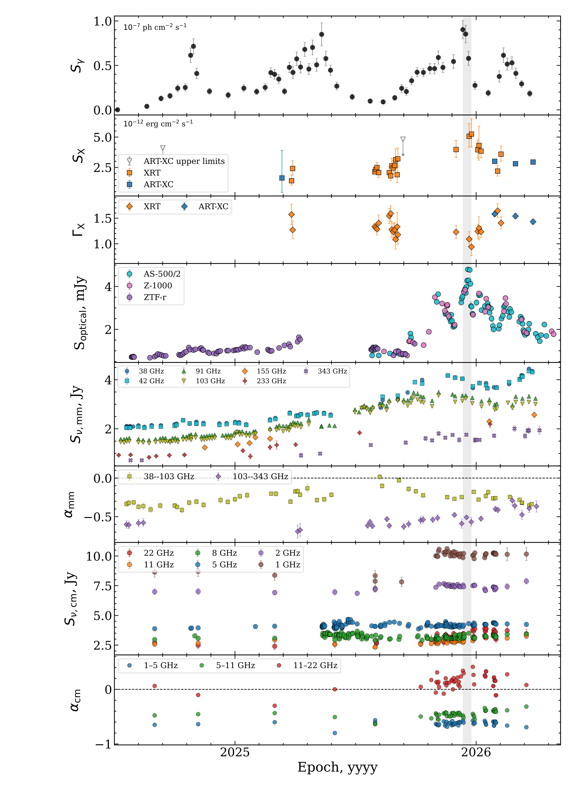
图注：$\gamma$-ray, X-ray, optical, and multifrequency radio light curves of \(\sou\) in 2024--2026. The second panel shows the X-ray flux in the 5--10 keV band, while the third panel displays the X-ray photon index $\Gamma_{\rm X}$ derived from power-law spectrum fitting. The additional radio/mm spectral-index panels show the centimetre-band indices at 1--5, 5--11, and 11--22 GHz, alongside the ALMA indices at 38--103 and 103--343 GHz, computed from quasi-simultaneous measurements within a 14-day window. The shaded region marks the $\simeq 13$-day interval spanning the epochs of the flux density maximum in the $\gamma$-ray, X-ray, and optical bands.
对应解读：建议重点查看的图表 2、4、6；关键图表逐图导读 图2、图3、图4；模型拟合段落中的多波段峰值对齐与谱指数演化。
入选理由：这张图同时给出2024–2026年γ射线、X射线、光学和多频射电光变，并包含X射线光子指数Γ_X以及1–5、5–11、11–22 GHz等谱指数面板，还用阴影标出约13天的高能/光学峰值窗口。它一图覆盖日报最核心的时间对齐、X射线硬化和高频射电谱变平/反转证据，科学信息密度最高。
来源与置信度：\(arxiv_source\)；high；\(arxiv_source\) / mufakharov.tex:figure[2]
Fig10
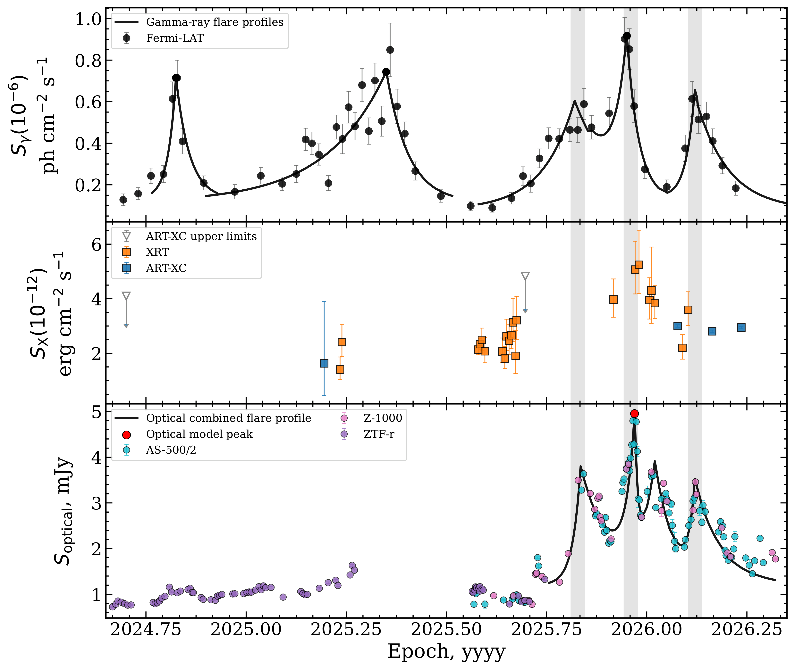
图注：$\gamma$-ray (top), X-ray (middle), and optical $R$-band (bottom) light curves of \(\sou\) during the 2024--2026 active phase. The solid black curves show the exponential profiles used to characterise the variability. In the $\gamma$-ray panel, G1 and G2 are shown separately, while the late complex flare is shown as the combined G3--G5 profile. In the optical panel, the solid curve represents the combined R1--R4 model profile. The grey shaded bands mark three $\simeq13$-day intervals corresponding to the temporally matched $\gamma$-ray/optical pairs G3/R1, G4/R2, and G5/R4. The X-ray measurements are shown for comparison and indicate enhanced X-ray activity during the same broadband flaring episode.
对应解读：建议重点查看的图表 3、5、6；关键图表逐图导读 图3、图5；模型拟合段落中的γ射线五个flare分解和光学子flare拟合。
入选理由：该图直接展示γ射线、X射线和R波段在活跃期的光变，并叠加指数flare模型曲线，标出G1–G5和R1–R4等子结构及约13天配对窗口。它最适合检验日报中关于五个γ射线flare、多个光学子flare以及高能/光学峰值近同时性的解读。
来源与置信度：\(arxiv_source\)；high；\(arxiv_source\) / mufakharov.tex:figure[10]
Fig11
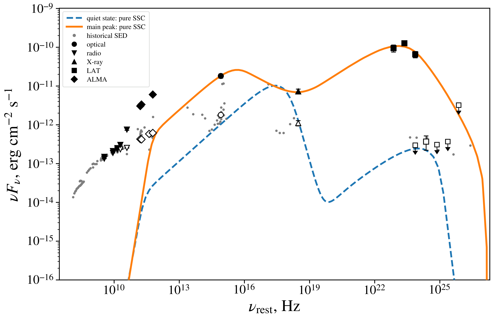
图注：Representative two-state SEDs of \(\sou\) for the critical-angle geometry associated with the published apparent pattern speed $\beta_{\rm app}=3.3$: $\Gamma=\delta=3.45$ and $\theta=16.86^{\circ}$. The critical-angle case is shown as the kinematically distinguished minimum-$\Gamma$ solution for the adopted apparent speed; it is not statistically preferred over the initially adopted reference geometry or the other geometry-sensitivity cases. The dashed and solid curves show the total one-zone synchrotron plus SSC emission for the historical quiet state and the main peak, respectively. Filled symbols denote the main-peak measurements and open symbols denote the quiet-state measurements. Downward arrows show the reliable quiet-state LAT upper limits. Centimetre-band radio and ALMA measurements, together with the grey historical SED points, are shown as context and were not included in the compact-zone residual score. Frequencies are shown in the source rest frame.
对应解读：建议重点查看的图表 7、8；关键图表逐图导读 图6、图7；模型拟合段落中的平静态/活跃态SED和一区同步+SSC建模。
入选理由：这是平静态与主峰态SED及一-zone synchrotron+SSC模型的核心图，明确区分主峰与静态数据点、LAT上限和未纳入紧致区残差评分的射电/ALMA背景点。它最能支撑日报对SSC可行解、低频射电污染、两态SED稀疏性和几何退化的讨论。
来源与置信度：\(arxiv_source\)；high；\(arxiv_source\) / mufakharov.tex:figure[11]
Fig09
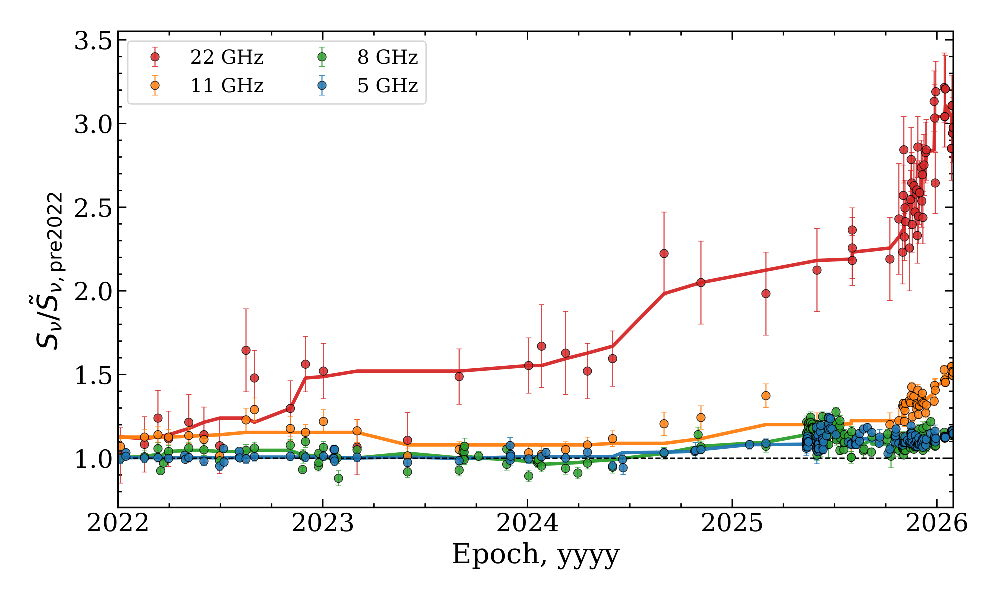
图注：Multifrequency radio light curves of \(\sou\) normalized to the pre-2022 flux level. A clear frequency-dependent brightening is observed after 2022, with the strongest increase at 22 GHz.
对应解读：建议重点查看的图表 1；关键图表逐图导读 图1；详细解读中关于2022年后多频射电增亮和高频增强更强的段落。
入选理由：该图把多频射电光变归一化到2022年前水平，直接突出频率依赖增亮，尤其22 GHz增强最强。相比原始总流量光变，它更清楚地展示高频先强烈响应、低频变化被稀释的关键诊断，是支持新致密同步辐射成分的最直接射电证据之一。
来源与置信度：\(arxiv_source\)；high；\(arxiv_source\) / mufakharov.tex:figure[9]
Fig05
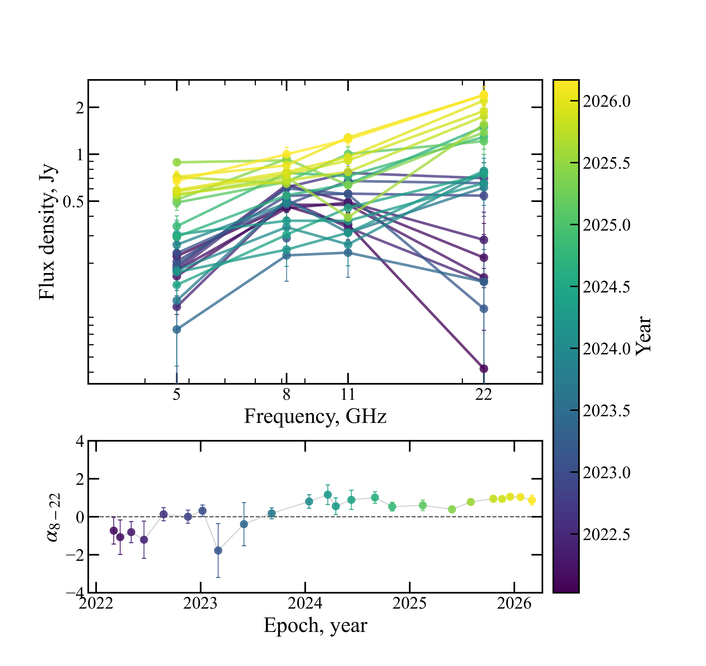
图注：Quasi-simultaneous radio spectra of the excess component in \(\sou\) (top) and the corresponding evolution of its 8--22 GHz spectral index (bottom).
对应解读：建议重点查看的图表 2；关键图表逐图导读 图2；详细解读中关于11–22 GHz谱指数从陡谱转向平谱/反转谱的段落。
入选理由：该图专门展示 excess component 的准同时射电谱及8–22 GHz谱指数演化，聚焦于新增强成分而非总射电谱。它比普通多频光变更适合判断高频谱是否真正变平或反转，从而支撑核心/新喷流结占比上升的结论。
来源与置信度：\(arxiv_source\)；high；\(arxiv_source\) / mufakharov.tex:figure[5]
Fig08
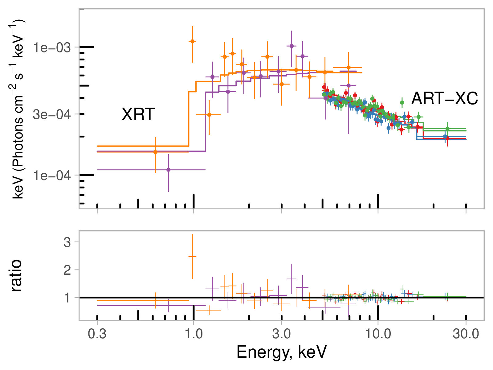
图注：The upper panel shows the unfolded ($F_E$) X-ray spectra of \(\sou\) measured with Swift/XRT at the peak of the outburst on 21 and 24 December 2025 (orange and purple, respectively) and afterwards with SRG/ART-XC on 28--29 January, 1--2 March, and 27--28 March 2026 (red, blue, and green, respectively), all fitted by power laws modified by Galactic absorption. The spectra have been rebinned in the plot for better clarity. The bottom panel shows the data-to-model ratio. Uncertainties are shown at the 1$\sigma$ confidence level.
对应解读：建议重点查看的图表 4；关键图表逐图导读 图4；模型拟合段落中关于X射线谱硬化、峰后软化和数据/模型残差的讨论。
入选理由：该图给出爆发峰值及峰后多次X射线谱的展开谱和power-law吸收模型的数据/模型比值，误差为1σ。它能补充Fig02中的Γ_X时间演化，帮助读者检查硬谱是否由实际谱形支持，以及峰后谱变化是否存在系统残差或定标问题。
来源与置信度：\(arxiv_source\)；high；\(arxiv_source\) / mufakharov.tex:figure[8]
强相关工作
这篇工作应放在三条文献线索中阅读。第一是 3C 138 本源的射电结构、VLBI 成像、偏振和长期监测文献；这些是判断总流量爆发是否真正来自核心的必要背景。检索关键词可用 “3C 138 compact steep spectrum quasar VLBI”, “3C 138 radio variability”, “3C 138 polarization”, “3C 138 CSS quasar”。同一源文献尤其重要，因为 3C 138 也常被用作射电校准源，历史流量和结构信息较多。
第二是紧凑陡谱源和 GHz 峰谱源的综述与统计研究。相关关键词包括 “compact steep spectrum sources review”, “GHz peaked spectrum sources young radio sources”, “CSS quasar gamma-ray emission”。这些工作讨论 CSS/GPS 源到底是年轻源、受限源还是取向效应源，也能帮助判断 3C 138 的爆发是否代表一类对象中的核心活动被低估。
第三是耀变体多波段 flare 和 SSC/EC 建模文献。本文的物理解释与典型耀变体模型相近：同步辐射解释射电到光学，SSC 或 EC 解释 X 射线和 \(\gamma\) 射线。相反观点或张力在于，CSS 分类往往强调扩展陡谱和年轻源图像，而本文显示核心主导活动可以暂时改变观测表象。检索关键词可用 “one-zone SSC EC blazar SED modeling”, “radio opacity delay gamma-ray flare”, “multiwavelength flare compact radio quasar”。
同一事件 / 同类源线索：
- https://arxiv.org/abs/2608.05852
- https://arxiv.org/pdf/2608.05852
- https://ned.ipac.caltech.edu/byname?objname=3C%20138
相似工作：
- https://fermi.gsfc.nasa.gov/ssc/data/access/lat/14yr_catalog/
- https://www.physics.purdue.edu/MOJAVE/
基础理论 / 方法工作：
- https://arxiv.org/abs/astro-ph/9804103
- https://arxiv.org/abs/astro-ph/0102132
- https://arxiv.org/abs/astro-ph/0610901
相反观点 / 张力线索：
（未提供）
5. The impact of nuclear equations of state on the dynamics and multi-messenger emission of magnetorotational stellar explosions
- 来源：arXiv / astro-ph.HE
- 链接：https://arxiv.org/abs/2608.06017v1
- 作者：Andrea Celati, Matteo Bugli, Luca Del Zanna, Marco Cusinato, Martin Obergaulinger
- 评分：novelty 7/10，importance 8/10，relevance 8/10，final 8.70/10
- 推荐理由：研究核物态方程对磁旋转核心坍缩爆发、长 GRB/超新星相关喷流以及中微子和引力波信号的影响；多信使高能暂现源背景下值得阅读。
中文题目：核物质状态方程如何改变磁旋转恒星爆炸的动力学和多信使辐射
做了什么：这篇论文用包含相对论磁流体、两矩中微子输运和广义相对论修正的轴对称核心坍缩模拟，系统比较了不同核物质状态方程对磁旋转型超新星的影响。作者固定同一个 \(20\,M_\odot\) 太阳金属丰度前身星、偶极磁场和壳层式旋转剖面，只改变状态方程，考察坍缩、反弹、喷流发射、原中子星性质、抛射物、中微子和引力波信号的差异。核心结论是：磁旋转爆炸对状态方程的敏感性不只来自冷核物质“硬”或“软”，有限温度行为、成分、电子俘获和热压支持同样会显著改变爆炸时序和多信使特征。
为什么重要：磁旋转爆炸常被用来解释超高能超新星、长伽马暴中心引擎和强磁场中子星形成，但其理论预言往往同时受初始磁场、旋转、数值维度、微物理和状态方程影响。这篇文章把状态方程作为主变量，在同一前身星和同一初始磁旋转条件下比较，直接回答了一个关键问题：如果未来银河系或近邻星系出现快速旋转核心坍缩事件，中微子和引力波信号中有多少信息可以归因于致密物质微物理，而不是爆炸机制本身。
理论 / 观测 / 仪器方法价值：对理论而言，论文强调磁旋转模型不能只用冷中子星半径或最大质量来概括状态方程影响，热成分和组成依赖会通过反弹结构、原中子星收缩、磁场缠绕和喷流准直改变结果。对观测而言，它给出中微子光变、引力波波形和爆炸动力学之间的关联，提示多信使联合才能打破状态方程与初始旋转磁场之间的退化。对方法而言，使用带中微子输运的相对论磁流体模拟，比只看流体爆炸能量或冷星序列更接近可观测诊断。
为什么应该关注：如果你关心核心坍缩超新星、长伽马暴中心引擎、磁星诞生或致密物质状态方程，这篇文章值得读，因为它把“状态方程影响爆炸”这句话具体化为可追踪的动力学链条：坍缩速度、反弹密度、原中子星半径、磁能放大、喷流启动时间、抛射物质量、中微子光度和引力波频谱如何一起变化。它也提醒读者，不要把状态方程约束简单等同于冷中子星质量半径曲线；在热、非β平衡、强磁旋转环境中，可观测量响应更复杂。
展开详细解读：文章讲解、背景、理论、重点章节、图表与相关工作
文章详细讲解
科学问题：磁旋转核心坍缩超新星是少数能够自然产生强双极喷流和高爆炸能量的机制之一，因此常被联系到超亮或高能超新星、长伽马暴以及新生磁星。但这类模型有一个长期难题：爆炸结果同时依赖前身星角动量、磁场拓扑、磁场强度、中微子冷却、维度效应和核物质状态方程。本文关心的是，在其他初始条件尽量固定时，不同状态方程会怎样改变从铁芯坍缩到喷流发射再到多信使信号的整个链条。
作者怎么做：作者使用 Aenus-Alcar 代码开展轴对称模拟。该代码结合了相对论磁流体、两矩中微子输运、中微子-物质相互作用以及广义相对论修正。所有模型使用同一个太阳金属丰度、零龄主序质量为 \(20\,M_\odot\) 的前身星，并采用相同的偶极磁场和壳层式旋转剖面。这样设计的优点是把状态方程差异从前身星差异和初始磁旋转差异中尽量分离出来。比较对象不只是冷核物质刚度，还包括有限温度压强、核组成、电子分数演化以及这些因素对原中子星结构的影响。
关键结果：不同状态方程导致坍缩和反弹阶段的核心结构不同，进而改变原中子星半径、质量增长、收缩速率和差分旋转分布。由于磁场放大依赖旋转剪切和流体压缩，状态方程差异会传递到磁压积累、喷流启动时间、喷流准直程度、爆炸能量和抛射质量。多信使方面，中微子光度和平均能量会响应原中子星温度、半径和吸积流结构；引力波信号则受核心反弹、非球对称流动、磁喷流和原中子星振荡共同调制。论文的核心信息是，磁旋转爆炸中的状态方程效应不能用单一“硬状态方程产生大半径、软状态方程产生小半径”的图像完全概括。
局限和下一步：本文采用轴对称模拟，这对磁旋转喷流问题很有用，但也会抑制或扭曲三维非轴对称不稳定性，例如螺旋模、磁旋转不稳定性的湍流饱和、喷流扭结不稳定性以及非轴对称引力波成分。因此论文给出的状态方程趋势应被看作受控比较，而不是最终可观测模板库。下一步自然是三维广义相对论或有效相对论模拟、更宽的前身星和旋转磁场参数扫描，以及把中微子探测器和引力波探测器响应函数直接叠加到模型信号上，评估实际可区分性。
关键结果是怎么做出来的
本文最重要的证据链建立在“同一初始模型、只改变状态方程”的实验设计上。样本不是观测事件集合，而是一组数值实验：同一个 \(20\,M_\odot\) 前身星、同一初始偶极磁场、同一壳层式旋转规律，在 Aenus-Alcar 中用不同核状态方程演化。这样的样本选择牺牲了参数空间覆盖，但提高了因果解释力：当反弹时间、原中子星半径、喷流启动时刻或中微子光度发生变化时，读者可以优先追踪到状态方程的冷压强、热压强和组成差异。
事件数或样本量应在论文的模型表中检查：关键不是模型数量本身，而是每个状态方程是否覆盖了足够不同的冷刚度、有限温度处理和核组成。读者需要看表中列出的状态方程名称、最大冷中子星质量、典型半径、核饱和性质、适用温度和电子分数范围。如果某两个状态方程的冷星质量半径关系相近但爆炸行为不同，那正是论文论点的强支撑：有限温度和成分信息在磁旋转坍缩中不可忽略。
显著性在这类模拟论文中通常不是通过观测意义上的 \(p\) 值给出，而是通过跨模型差异是否大于数值误差、网格分辨率影响和诊断量定义不确定性来判断。应重点看喷流启动时间、诊断爆炸能量、抛射质量、原中子星重子质量和半径、中微子光度峰值、平均能量、引力波峰值振幅和频谱峰值的模型间差异。如果这些差异在多个诊断量中呈现一致物理链条，而不是单一时刻的偶然偏差，结论就更稳健。
统计或模型比较在本文中主要表现为受控数值比较，而非贝叶斯后验采样。模型之间的“似然”没有直接用于参数反演，但作者实际上在做一种前向模型敏感性分析：给定初始条件和状态方程，计算可观测信号，再比较哪些特征最能区分状态方程。支撑结论的图表通常包括中心密度和冲击半径随时间演化、原中子星半径和质量、磁能与动能增长、爆炸能量和抛射质量、中微子光度及平均能量、引力波应变和谱图。
主要系统误差来自轴对称近似、有限分辨率、磁旋转不稳定性是否被解析、中微子输运闭合关系、广义相对论修正近似、前身星单一性以及初始磁场可能偏强。稳健性检验应包括网格分辨率比较、能量守恒误差、不同原中子星边界或半径定义、不同诊断爆炸能量阈值、以及中微子信号对输运近似的敏感性。若论文显示状态方程排序在这些检验下保持，结论会更可信；若某些量只在单一模型或单一时间窗口显著，则应谨慎解读。
展开背景、理论、公式、模型、章节和图表导读
背景知识
研究对象是快速旋转、强磁场条件下的大质量恒星核心坍缩。普通核心坍缩超新星通常强调中微子加热机制：铁芯坍缩到核密度附近反弹，形成停滞冲击波，随后中微子加热、对流和驻激波不稳定性帮助冲击复兴。磁旋转爆炸则不同，旋转能和磁能可以直接为双极喷流供能，尤其在核心角动量和磁通量足够大时，爆炸形态更接近喷流驱动。
历史上，磁旋转机制从早期二维磁流体模型开始就被认为可产生强非球对称爆炸。后来随着数值相对论、中微子输运和微物理状态方程的发展，人们逐渐认识到单纯的理想磁流体图像不够：原中子星的热演化、中微子冷却、电子分数分布和核物质压缩性都会反过来影响磁场放大和喷流发射。本文处在这个交叉点上：它不是只问“能不能爆炸”，而是问“状态方程差异如何映射到多信使信号”。
观测背景也在改变。银河系核心坍缩事件很少，但一旦发生，Super-Kamiokande、IceCube、JUNO、DUNE 等可记录大量中微子事件；LIGO、Virgo、KAGRA 及未来探测器可能捕捉非轴对称核心坍缩的引力波。即使单次事件难以精确反演全部参数，中微子和引力波的时间结构仍可能区分普通中微子驱动爆炸与快速旋转磁驱动爆炸，并对原中子星紧致度和热状态方程提供约束。
为什么现在值得重新看？一方面，GW170817、NICER 质量半径测量和双中子星并合后验已经明显改善了冷核物质状态方程约束；另一方面，核心坍缩环境并不是冷、β平衡的中子星，而是高温、富轻子、快速演化、强非球对称的流体系统。因此，把并合或静态中子星得到的状态方程直觉直接搬到超新星里会有风险。本文正是强调这种风险：冷刚度只是状态方程的一部分。
该领域常见误区包括：第一，把“硬状态方程”简单等同于“更强爆炸”，但磁旋转爆炸还受旋转能抽取、喷流通道形成和中微子冷却影响；第二，把轴对称喷流形态当作三维真实形态，忽略非轴对称不稳定性；第三，把多信使信号中的状态方程效应和初始角动量效应混为一谈；第四，只关注引力波峰值振幅而忽略中微子光变、频谱漂移和波形时间结构的联合信息。
基础理论 / 方法脉络
基本物理图像从铁芯失稳开始。大质量恒星演化末期形成由铁族核组成的核心，电子简并压提供主要支撑。当电子俘获降低电子分数、光致蜕变消耗热能时，核心有效绝热指数低于稳定所需值，坍缩开始。密度接近核饱和密度后，核力短程斥力使状态方程变硬，内核反弹并产生冲击波。状态方程决定在给定密度、温度和成分下的压强、内能、声速和核组成，因此直接影响反弹强度和原中子星结构。
在磁旋转情形中，角动量和磁通量是额外能量库。差分旋转可以通过缠绕把径向或极向磁场转化为环向磁场，磁旋转不稳定性还可能在三维湍流中快速放大磁场。当磁压在旋转轴附近足够强，或者磁离心效应有效时，物质可沿极向被推出，形成双极喷流。状态方程通过改变原中子星半径和差分旋转剖面，间接改变可抽取的旋转能和磁场放大效率。
本文使用的模拟需要同时处理流体、磁场、引力和中微子。相对论磁流体描述高密度、高速度、强磁场流体的守恒演化；两矩中微子输运演化中微子能量密度和通量，并用闭合关系近似高阶矩；中微子-物质相互作用包括发射、吸收和散射，决定冷却、加热和电子分数演化。状态方程表则在每个网格点给出 \(P(\rho,T,Y_e)\)、\(\epsilon(\rho,T,Y_e)\) 和相关热力学导数，其中 \(\rho\) 是质量密度，\(T\) 是温度，\(Y_e\) 是电子分数。
关键可观测量包括爆炸能量、抛射质量、中微子光度、平均中微子能量、引力波应变和频谱。爆炸能量常依赖对未束缚物质的定义，抛射质量依赖速度和总能量判据；中微子光度受中微子球半径、温度和吸积率影响；引力波主要来自快速变化的质量四极矩，包括反弹、原中子星振荡和非球对称喷流。对读者来说，重要的是把这些量看成同一动力学链条的不同投影，而不是彼此独立的观测窗口。
常见退化包括状态方程与初始旋转率的退化：更软的状态方程可产生更紧致的原中子星和更高振荡频率，而更快旋转也会改变反弹和引力波特征。状态方程与初始磁场的退化也很强：较强磁场可提前喷流启动，掩盖状态方程对收缩时间的影响。中微子信号还受到距离、探测器能阈、振荡效应和方向性影响；引力波信号则受源取向、银河噪声和模板不完备影响。
公式与推导
第一步是状态方程本身。核心坍缩模拟需要在每个流体单元由密度、温度和电子分数确定热力学量，可写成
这里 \(P\) 是压强，\(\rho\) 是质量密度，\(T\) 是温度，\(Y_e\) 是电子分数，\(\epsilon\) 是比内能，\(s\) 是比熵。本文的核心比较就是不同表格式状态方程在这些函数上的差异如何传递到动力学和信号。
第二步是坍缩稳定性的近似判据。对近似自引力气体，局部有效绝热指数可定义为
当 \(\Gamma_{\rm eff}\lesssim 4/3\) 时，压力对引力的响应不足以维持稳定；\(\Delta\Gamma_{Y_e}\) 表示电子俘获降低 \(Y_e\) 带来的软化，\(\Delta\Gamma_{\rm GR}\) 表示相对论引力增强稳定性要求的修正。不同状态方程改变第一项，也改变电子俘获和组成演化的反馈。
第三步是旋转能库。若角速度为 \(\Omega(r)\)，转动动能可写为
其中 \(\varpi\) 是到旋转轴的柱半径，\(dV\) 是体积元。常用无量纲参数是
其中 \(W\) 是引力束缚能。状态方程通过决定原中子星紧致度和收缩史改变 \(|W|\)、\(\Omega\) 和差分旋转，从而影响磁旋转爆炸。
第四步是磁场放大。理想磁流体感应方程为
其中 \(\mathbf{B}\) 是磁场，\(\mathbf{v}\) 是流体速度。对差分旋转，环向磁场的缠绕增长可近似为
其中 \(B_\phi\) 是环向场，\(B_p\) 是极向场。状态方程若使原中子星更紧致，通常会改变 \(\partial\Omega/\partial\varpi\) 和磁压积累速率。
第五步是磁喷流启动的量级条件。磁压与物质压力和动压竞争，可用
来诊断，其中 \(P_{\rm mag}\) 是磁压，\(\sigma\) 是磁化参数，\(c\) 是光速。当轴向区域 \(P_{\rm mag}\) 接近或超过局部热压、湍动压或吸积流动压时，喷流更容易突破。本文比较的喷流启动时间本质上就是这些量随状态方程变化后的结果。
第六步是中微子辐射。某一味中微子的光度和平均能量可写为
其中 \(F_\nu\) 是能量通量，\(E\) 是中微子能量。更紧致、更热的原中子星一般会提高 \(\langle E_\nu\rangle\)，但吸积几何、喷流开孔和冷却历史会使趋势不完全单调。
第七步是爆炸诊断量。常用诊断爆炸能量可表示为
其中 \(e_{\rm tot}\) 包含动能、内能、磁能和引力势能等贡献，积分区域取总比能 \(e_{\rm tot}>0\) 的未束缚物质。这个量依赖判据和模拟终止时间，因此比较不同状态方程时要看趋势而不能只看某一时刻绝对值。
第八步是引力波四极矩近似。远区应变的量级可由
估计，其中 \(G\) 是引力常数，\(D\) 是源距离，\(Q_{ij}^{\rm TT}\) 是横向无迹质量四极矩。快速旋转反弹、非球对称喷流和原中子星振荡都会改变 \(d^2Q_{ij}^{\rm TT}/dt^2\)，状态方程则通过紧致度和振荡频率调制波形。
第九步是观测可区分性的统计诊断。若把模型波形 \(h_m(t;\theta)\) 与探测器噪声谱密度 \(S_n(f)\) 比较，匹配内积为
信噪比为
这里 \(\tilde a(f)\) 是傅里叶变换，星号表示复共轭。即使本文主要是前向模拟，这组公式说明了未来如何把不同状态方程的引力波预言转化为可探测差异。
模型拟合 / 应用方法
这篇文章本身主要不是对观测数据做拟合，而是做前向数值实验；但它隐含了未来多信使反演的模型拟合框架。可拟合量包括反弹后引力波峰值频率、时频谱中原中子星模的漂移、中微子光度上升和衰减时间、不同味中微子的平均能量、爆炸开始时间、喷流相关的方向性信号，以及可能从电磁观测推断的抛射质量和爆炸能量。
若用于真实事件，似然可分成中微子、引力波和电磁三部分。中微子事件可用泊松点过程似然，输入模型给出的时间和能量相关事件率；引力波可用高斯噪声下的频域似然，比较观测应变和模板波形；电磁后验则可通过辐射转移模型连接到抛射物质量、速度、镍质量和几何。状态方程参数、初始角动量、磁场强度、源距离和观测方向都应进入联合后验。
参数退化会非常强。较软状态方程导致更紧致的原中子星和更高特征频率，但增加初始旋转或改变磁场也可能改变反弹波形和喷流启动时间。中微子平均能量可由更高温度提高，也可由中微子球位置和吸积率改变。爆炸能量受磁能抽取效率、喷流持续时间和包层束缚能共同决定，因此不能单独用来判定状态方程。
残差诊断很关键。对于引力波，应看时频图中模型脊线是否系统偏高或偏低，而不只看峰值振幅；对于中微子，应看不同时间段和不同能道的残差，因为早期中子化爆发、吸积相和冷却相对应不同物理区域；对于动力学模拟，应看冲击半径、喷流头位置和原中子星半径的时间残差是否同向变化。若某状态方程只改善一个观测通道却恶化另一个通道，联合拟合会暴露这种矛盾。
模型可能失败的地方包括二维轴对称导致的喷流过稳定、磁旋转不稳定性未解析导致的磁场放大不足或过度依赖初始场、两矩中微子输运闭合误差、状态方程表在低密度高温区域的拼接不确定性、以及前身星角动量剖面的恒星演化不确定性。因此本文结果最适合用作状态方程敏感性地图，而不是直接作为唯一模板库。
重点章节 / 结果段落怎么读
数据和初始模型部分应首先阅读。重点看前身星质量、金属丰度、铁芯结构、初始旋转律、初始磁场强度和拓扑，以及这些设定是否接近长伽马暴或磁星形成所需的极端条件。这里决定了论文结论适用于“磁旋转强爆炸”而非普通核心坍缩超新星。
状态方程和微物理部分是本文的核心入口。读者应比较各状态方程的冷中子星最大质量、典型半径、核饱和性质、热处理、轻核和重核组成，以及表格覆盖的 \(\rho\)、\(T\)、\(Y_e\) 范围。特别要注意作者是否区分冷刚度与热效应，因为这正是论文结论的关键。
数值方法部分要关注 Aenus-Alcar 的相对论磁流体方程、中微子两矩输运、闭合关系、引力势或广义相对论修正、网格设置和轴对称边界条件。专业读者应检查磁场散度控制、能量守恒、分辨率和中微子相互作用集合，因为这些会影响喷流启动和多信使信号。
动力学结果部分应按时间线读：坍缩、反弹、冲击停滞或复兴、磁场放大、喷流形成、爆炸发展。不要只看最终爆炸能量；应把中心密度、原中子星半径、磁能、冲击半径和抛射质量连起来读，判断状态方程差异是否有一致因果链。
多信使信号部分要把中微子和引力波并列阅读。中微子图反映温度、吸积和冷却；引力波图反映非球对称加速度、反弹和原中子星振荡。讨论和稳健性段落则应检查作者是否明确说明二维限制、前身星单一性、状态方程样本有限和未来三维模拟需求。
建议重点查看的图表
-
模型和状态方程性质表：看每个状态方程的冷中子星最大质量、半径、热处理和组成差异，判断模型间比较是否覆盖了真正不同的微物理。
-
中心密度、核心温度或原中子星半径随时间图：看反弹时刻、反弹后收缩速率和状态方程排序，确认动力学差异从早期就出现还是只在喷流后放大。
-
冲击半径、喷流头位置或爆炸能量随时间图：看喷流启动是否提前或延迟，爆炸能量增长是否连续，是否存在某个状态方程导致明显更强或更弱爆炸。
-
磁能、转动能和磁场分量演化图：看环向磁场增长、磁能饱和和旋转能抽取效率，判断状态方程通过原中子星结构影响磁场放大的证据。
-
抛射质量、电子分数和熵分布图：看喷流抛射物是否富中子、是否有高熵通道，以及状态方程对核合成条件的潜在影响。
-
中微子光度和平均能量图：分味道检查 \(\nu_e\)、\(\bar\nu_e\) 和重味中微子的差异，注意吸积相与冷却相的变化是否与原中子星紧致度一致。
-
引力波应变和时频谱图：看反弹峰、后续振荡频率、喷流造成的低频记忆样成分，以及不同状态方程之间的可分辨性是否超过取向和噪声不确定性。
-
分辨率或稳健性检验表：看爆炸时间、能量和信号峰值是否随网格变化显著漂移，尤其是磁旋转不稳定性相关量。
关键图表逐图导读
图 1：通常应是初始条件或状态方程比较图，横轴可能是密度 \(\rho\) 或中子星质量，纵轴可能是压强 \(P\)、声速、半径或质量。数据线代表不同状态方程。读图重点是不要只看冷星半径大小，还要看高温、不同 \(Y_e\) 条件下的压强差异；读图陷阱是把静态冷中子星曲线直接等同于坍缩中的热原中子星行为。
图 2：坍缩和反弹动力学图，横轴通常是反弹后时间，纵轴可能是中心密度、最大密度、原中子星半径或冲击半径。不同颜色对应不同状态方程。主要结论应来自曲线的相对排序和时序差异：哪个模型更早反弹、哪个模型反弹后收缩更快、哪个模型更快形成有利于喷流的紧致结构。陷阱是只看某一时刻的半径，而忽略反弹后长期收缩斜率。
图 3：磁场和能量演化图，横轴为时间，纵轴可能是磁能、转动能、环向磁场能或诊断爆炸能量。模型线若在喷流启动前已分离，说明状态方程通过原中子星结构改变磁场放大；若只在喷流后分离，则可能更多反映非线性喷流反馈。读者应注意能量是否包含引力势能修正，以及爆炸能量是否尚未收敛。
图 4：二维流体快照，坐标轴通常是柱坐标半径和轴向距离，颜色显示熵、密度、速度、电子分数或磁化参数，箭头显示速度或磁场方向。关键是看喷流准直、冲击形状、轴向低密度通道和高熵物质分布。陷阱是二维轴对称会人为增强轴向相干结构，不能把喷流稳定性直接外推到三维。
图 5：中微子光度和平均能量图，横轴为反弹后时间，纵轴为 \(L_\nu\) 或 \(\langle E_\nu\rangle\)，不同面板对应不同中微子味。主要结论是状态方程如何通过原中子星温度和半径改变中微子信号，以及喷流或吸积变化是否在光变中留下拐点。陷阱是忽略中微子振荡、探测器响应和距离缩放；模拟光度不是直接事件数。
图 6：引力波波形和谱图，横轴为时间或频率，纵轴为应变、特征应变或谱能量密度。反弹峰反映快速旋转内核，后续高频脊线反映原中子星振荡，低频缓慢漂移可能与喷流非球对称物质运动有关。读者应看不同状态方程的频率漂移是否系统不同，并警惕源取向、二维近似和探测器噪声会改变实际可见性。
图 7：汇总表或散点图，横轴可能是状态方程相关量如半径或紧致度，纵轴是喷流启动时间、爆炸能量、中微子平均能量或引力波峰频。最有价值的是寻找非单调关系：如果冷半径相近的状态方程产生不同信号，说明热和组成效应确实重要。陷阱是样本数有限时不要过度拟合线性相关。
论文原图 / 可嵌入图片
Fig11
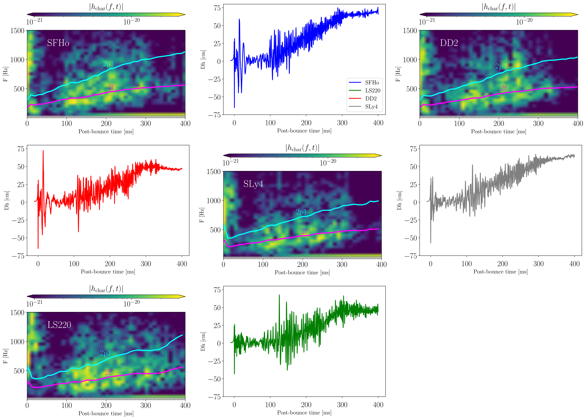
图注：GW signals for the four CCSN models. Each column corresponds to a different model: SFHo (top-left), DD2 (bottom-left) and SLy4(top-right), LS220 (bottom-right). In each column, the top panel shows the spectrogram of the gravitational-wave signal, highlighting the frequency evolution over time, while the bottom panel shows the corresponding time-series of the GW amplitude. This arrangement allows direct comparison of both the temporal and spectral features of the GW emission across different equations of state. The pink line indicates the universal relation for the $2f$ mode, while the light-blue line shows the $2p_1$ mode.
对应解读：对应“建议重点查看的图表”第7项和“关键图表逐图导读”图6：引力波波形和时频谱图。
入选理由：这张图同时给出四个状态方程模型的引力波时序振幅和时频谱，并标出2f与2p1模的经验关系线，最直接支撑日报中关于反弹后振荡频率、频率漂移、不同状态方程可分辨性以及多信使反演中GW残差诊断的讨论。相比只显示反弹后短时波形的Fig10或只给探测器灵敏度对比的Fig12，它包含更多物理诊断量。
来源与置信度：\(arxiv_source\)；high；\(arxiv_source\) / aa58662-25.tex:figure[11]
Fig02
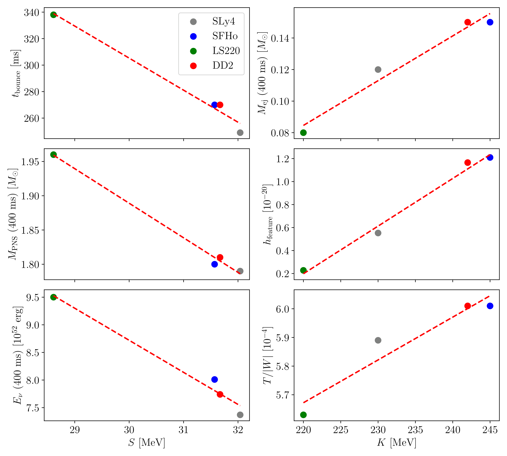
图注：Correlations between selected dynamical and observational quantities and the nuclear EoS parameters. The top-left panel shows the correlation between the bounce time $t_{\mathrm{bounce}}$ and the symmetry energy parameter $S$, with a linear fit (red dashed line) characterized by slope $a=-24.201\,\mathrm{ms/MeV}$ and correlation coefficient $R=-0.991$. The middle-left panel shows the correlation between the PNS mass at $t=400\,\mathrm{ms}$ post-bounce and $S$, with slope $a=-0.050\,\mathrm{M_\odot/MeV}$ and correlation coefficient $R=-0.996$. The bottom-left panel shows the correlation between the total emitted neutrino energy at $t=400\,\mathrm{ms}$ post-bounce and $S$, with slope $a=-0.581\,\mathrm{erg/MeV}$ and correlation coefficient $R=-0.987$. The top-right panel shows the correlation between the ejecta mass at $t=400\,\mathrm{ms}$ post-bounce and the incompressibility parameter $K$, with slope $a=0.003\,\mathrm{M_\odot/MeV}$ and correlation coefficient $R=0.983$. The middle-right panel shows the correlation between the averaged gravitational-wave amplitude associated with the prompt-convection signal and $K$, with slope $a=0.041\,\mathrm{MeV}^{-1}$ and correlation coefficient $R=0.994$. The bottom-right panel shows the correlation between the ratio of rotational kinetic energy to gravitational binding energy, $T/|W|$, evaluated at core bounce, and $K$, with slope $a=0.015\,\mathrm{MeV}^{-1}$ and correlation coefficient $R=0.959$. Red dashed lines indicate the corresponding linear fits.
对应解读：对应“关键图表逐图导读”图7和“模型拟合”段落：状态方程参数与动力学、多信使观测量之间的相关关系。
入选理由：这张图把对称能S、不可压缩系数K与反弹时间、PNS质量、中微子总能量、抛射质量、GW振幅和T/|W|等量直接关联，并给出线性拟合和相关系数，是理解论文核心结论“不能只用冷星刚度解释全部差异”的关键汇总图，也最适合支撑未来多信使参数反演的讨论。
来源与置信度：\(arxiv_source\)；high；\(arxiv_source\) / aa58662-25.tex:figure[2]
Fig05
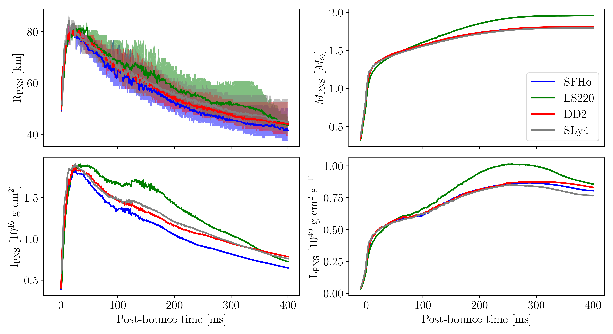
图注：Time evolution of various PNS properties for the four EoS models. Top-left panel: the mean radius (solid lines) and the minimum/maximum range as the shaded area for the four EoS models. Top-right: the total mass contained in the PNS volume. Bottom-left: the total moment of inertia with respect to the polar axis. Bottom-right: the total angular momentum of the PNS.
对应解读：对应“建议重点查看的图表”第2项和“关键图表逐图导读”图2：原中子星半径、质量、转动惯量和角动量随时间演化。
入选理由：日报强调状态方程如何通过原中子星紧致度、收缩速率和角动量储库影响后续喷流与信号。Fig05正好给出PNS半径及其范围、质量、转动惯量和角动量的时间演化，是连接微物理差异、磁场放大和多信使辐射的中心图。
来源与置信度：\(arxiv_source\)；high；\(arxiv_source\) / aa58662-25.tex:figure[5]
Fig03
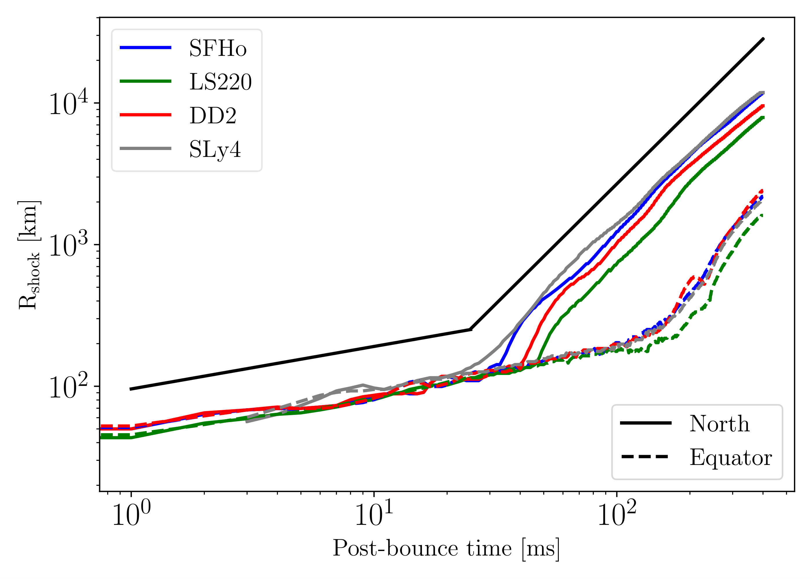
图注：Time evolution of the shock radius at the north pole (solid lines) and at the equator (dashed lines) for the four EoS models. Black solid lines show reference power-law scalings of the shock expansion with slopes of 0.3 and 1.7.
对应解读：对应“建议重点查看的图表”第3项和“关键图表逐图导读”图3：冲击半径或喷流头位置随时间演化。
入选理由：这张图用南北极向与赤道方向的冲击半径演化展示爆炸几何和喷流发展，并给出幂律参考斜率，能直接判断不同状态方程下喷流/冲击扩张的启动时序、各向异性和增长阶段，是解读爆炸动力学差异的基础图。
来源与置信度：\(arxiv_source\)；high；\(arxiv_source\) / aa58662-25.tex:figure[3]
Fig06
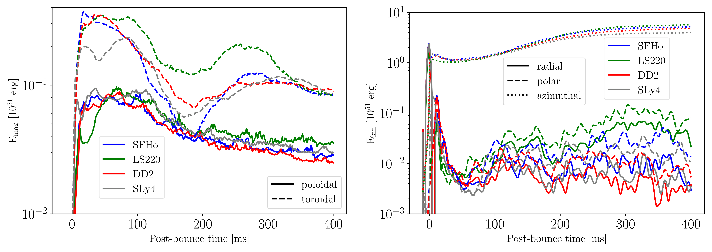
图注：\(\small\) Top: Time evolution of the magnetic energy within the PNS for the four EoS models. Bottom: Time evolution of the kinetic energy within the PNS for the four EoS models. A low-pass Butterworth filter has been applied to the radial and polar components of the kinetic energy to suppress numerical noise and improve the readability of the long-term evolution.
对应解读：对应“建议重点查看的图表”第4项和“关键图表逐图导读”图3：PNS内部磁能与动能演化。
入选理由：日报特别要求检查磁能、转动能和磁场放大是否在喷流启动前就出现状态方程依赖。Fig06给出PNS内磁能与动能随时间演化，能检验状态方程通过PNS结构和旋转剪切影响磁能积累、饱和以及能量抽取效率的链条。
来源与置信度：\(arxiv_source\)；high；\(arxiv_source\) / aa58662-25.tex:figure[6]
Fig08
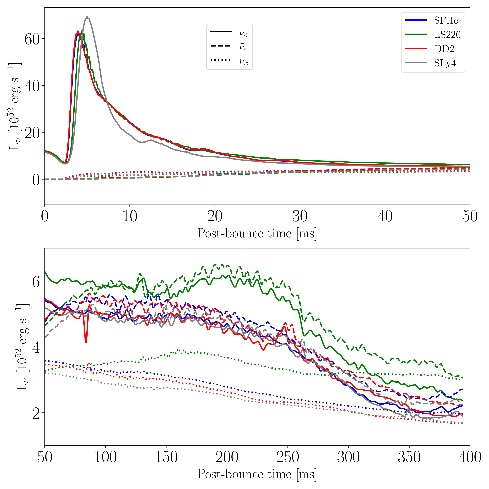
图注：\(\small\) Top: Time evolution of the average neutrino luminosity up to $50\,\mathrm{ms}$ p.b. Bottom: Time evolution of the average neutrino luminosity from $50\,\mathrm{ms}$ p.b. LS220 shows the highest emission of each species. A low-pass Butterworth filter has been applied to the luminosity curves to suppress numerical noise and improve the readability of the long-term evolution. The sharp, short-lived spikes observed in the unfiltered luminosity evolution are attributed to numerical noise in the extraction procedure and are not considered physically meaningful.
对应解读：对应“建议重点查看的图表”第6项和“关键图表逐图导读”图5：不同味中微子光度随时间演化。
入选理由：这张图分早期和后期展示平均中微子光度，并区分不同中微子种类，直接支撑日报关于吸积相、冷却相、PNS紧致度和喷流变化如何改变中微子信号的分析。它还注明滤波和数值尖峰处理，有助于避免把提取噪声误读为物理特征。
来源与置信度：\(arxiv_source\)；high；\(arxiv_source\) / aa58662-25.tex:figure[8]
强相关工作
这篇工作与磁旋转核心坍缩超新星、长伽马暴中心引擎和磁星形成模拟处在同一谱系。相似工作通常研究快速旋转铁芯在强磁场下的双极喷流、磁场缠绕和磁旋转不稳定性；本文的独特侧重点是把核状态方程的冷、热和组成差异作为主要比较变量。建议检索关键词包括 “magnetorotational core-collapse supernova equation of state neutrino transport gravitational waves”、“Aenus-Alcar magnetorotational explosion”、“proto-neutron star equation of state multimessenger”。
它也与致密物质状态方程约束文献相连，但要注意适用环境不同。NICER、双中子星并合和冷中子星最大质量主要约束低温、接近β平衡物质；核心坍缩模拟涉及高温、非β平衡、强中微子辐射和快速动力学。因此可把本文看成冷状态方程约束向热天体物理场景延伸的一步。建议检索 “finite-temperature nuclear equation of state core collapse”、“supernova equation of state review”、“neutrino gravitational wave core collapse review”。
可能存在张力或相反观点的方向包括：二维轴对称磁喷流是否过于乐观、真实前身星能否保留足够角动量、强初始磁场是否物理合理、以及磁旋转不稳定性在全球模拟中是否被充分解析。读者应把本文与三维磁旋转模拟、恒星演化角动量输运研究和核心坍缩引力波综述一起读，而不是孤立地把某个状态方程排序当成最终答案。
同一事件 / 同类源线索：
相似工作：
基础理论 / 方法工作：
- https://arxiv.org/abs/astro-ph/0601261
- https://arxiv.org/abs/1006.4524
- https://arxiv.org/abs/1108.2227
相反观点 / 张力线索：
6. The plunging region of thin accretion discs across the black hole spin range
- 来源：arXiv / astro-ph.HE
- 链接：https://arxiv.org/abs/2608.06278v1
- 作者：Jake Rule, Andrew Mummery, Steven Balbus, James M. Stone, Lizhong Zhang
- 评分：novelty 8/10，importance 8/10，relevance 7/10，final 8.65/10
- 推荐理由：系统比较薄盘 plunging region 的解析模型与 3D GRMHD 模拟，并讨论自旋测量中的应力-自旋退化；虽非伽马方向，但对黑洞 X 射线吸积盘建模重要。
中文题目：薄吸积盘在全黑洞自旋范围内的俯冲区：动力学、热力学与磁应力
做了什么：这篇文章用专门的三维全局广义相对论磁流体力学模拟检验薄吸积盘在最内稳定圆轨道以内的“俯冲区”模型，覆盖从逆行到顺行的黑洞自旋范围。作者发现，俯冲区气体的径向下落总体很接近由引力主导的测地线俯冲，尤其在低自旋时吻合更好；热力学演化也能被解析框架较好描述。文章进一步提出一个磁场模型：把磁场冻结在给定的测地线内流中，用通量冻结解释俯冲区磁场和磁流体应力随半径与自旋的变化。最重要的观测含义是，俯冲区应力不是可以任意调节的自由参数，而是随顺行自旋增大而增强；这有助于打破用内盘 X 射线连续谱测量黑洞自旋时的“低应力高自旋”和“高应力低自旋”退化。
为什么重要：薄盘自旋测量通常依赖一个近似：最内稳定圆轨道附近应力很小，盘内缘位置可以映射到黑洞自旋。但真实磁化盘在最内稳定圆轨道以内并不会突然失去磁应力，俯冲区的辐射和应力会改变内盘光谱。本文的重要性在于，它不是只做一个数值实验，而是把俯冲区的测地线动力学、绝热/耗散热力学和磁通量冻结模型系统地同三维广义相对论磁流体模拟比较，并研究这些量如何随黑洞自旋变化。对于连续谱拟合、铁线反射拟合和事件视界尺度辐射建模，俯冲区是否可忽略直接关系到自旋、辐射效率和内边界条件的可信度。
理论 / 观测 / 仪器方法价值：对理论而言，本文给出一个可用于解释和参数化俯冲区磁场与应力的半解析框架，把复杂的三维广义相对论磁流体结果压缩成较清晰的物理图像。对观测而言，它指出自旋和俯冲区应力之间的退化不是基本不可破的，因为模拟给出的应力-自旋关系大致与光谱拟合中的退化方向正交。对方法而言，文章提供了一个把高成本广义相对论磁流体模拟结果转化为可用于 X 射线谱模型先验或闭合关系的路径，并用 M33 X-7 作为具体例子展示这种关系如何影响黑洞自旋推断。
为什么应该关注：如果你使用薄盘模型、连续谱拟合或反射谱来讨论黑洞自旋，本文直接触及一个核心系统误差：内盘边界条件和最内稳定圆轨道以内辐射是否会伪装成不同自旋。它告诉读者，俯冲区并非“物质自由落体、磁场和辐射都可忽略”的简单区域；但它也不是完全不可建模的湍流黑箱。作者给出的测地线加通量冻结框架，为把数值模拟约束纳入观测模型提供了可操作的方向。
展开详细解读：文章讲解、背景、理论、重点章节、图表与相关工作
文章详细讲解
科学问题：薄吸积盘理论长期把最内稳定圆轨道作为有效内边界，认为物质越过该轨道后迅速俯冲进黑洞，剩余扭矩和辐射很小。这个近似支撑了许多黑洞自旋测量，因为最内稳定圆轨道半径 \(r_{\rm ISCO}\) 与自旋 \(a_\ast\) 一一对应。但磁化等离子体中磁力线可以跨越 \(r_{\rm ISCO}\)，把角动量和能量继续从俯冲区传回外盘；如果这种应力不可忽略，光谱推断出的内缘半径和自旋就可能偏移。本文要回答的是：在真实三维广义相对论磁流体薄盘中，俯冲区是否仍可近似为测地线俯冲？热力学和磁场是否有可预测的解析规律？这些规律如何随黑洞自旋变化？
作者怎么做：论文使用 \(\texttt{ATHENAK}\) 进行三维全局广义相对论磁流体模拟，针对薄盘构建一组跨越黑洞自旋范围的专门模拟。作者将模拟中的径向速度、角动量、能量、密度、温度或内能、磁场分量和应力，与一系列解析模型逐项比较。动力学部分以引力主导的测地线俯冲为基准，即假设物质进入 \(r_{\rm ISCO}\) 后近似保持从内边界继承的守恒能量和角动量。热力学部分检验随压缩、膨胀和可能耗散所导致的内能演化。磁场部分则提出新的通量冻结模型：在给定测地线内流中，磁场随流体形变被拉伸和放大，从而预测俯冲区的磁场结构和 Maxwell 应力。
关键结果：模拟显示俯冲流体的动力学整体非常接近测地线俯冲，低自旋时最吻合，高顺行自旋时偏差较明显但仍保留测地线主导图像。热力学模型也能较好描述俯冲区量的变化，说明薄盘俯冲区并非完全由数值湍流细节决定。磁场方面，通量冻结模型能解释大部分趋势，尤其是内流加速和剪切如何改变磁场分量并增强应力；但模拟与理想通量冻结之间存在一些差异，提示非理想磁流体耗散、数值耗散或湍流重联可能仍有作用。文章最有观测分量的结论是，俯冲区磁流体应力随黑洞自旋向顺行高自旋方向增大。
局限和下一步：本文的结论依赖特定的薄盘厚度、磁化状态、初始磁场拓扑和数值分辨率，不能直接覆盖所有磁通量积累盘、厚盘或强喷流状态。薄盘辐射输运也没有被完全等同于观测谱模型；从俯冲区应力到可观测 X 射线连续谱或反射谱仍需要辐射转移、垂向结构和离子化状态建模。下一步应把这种自旋-应力关系作为先验或闭合关系接入谱拟合模型，检验在不同质量、吸积率、倾角和硬化因子下是否稳定，并扩展到不同磁通量状态和更真实的辐射广义相对论磁流体模拟。
关键结果是怎么做出来的
本文最重要的证据链从样本设计开始：作者不是只模拟一个代表性黑洞，而是构造跨越黑洞自旋范围的一组薄盘三维全局广义相对论磁流体模拟。这样的样本选择使他们能够把 \(a_\ast\) 当成主要控制变量，比较逆行、低自旋和顺行高自旋情况下俯冲区动力学、热力学与磁应力的系统变化。论文关注的“事件数”不是瞬变事件计数，而是多个自旋模拟、多个时间平均径向剖面和多个物理量之间的一致性检验。
统计和模型比较主要体现在模拟剖面与解析预测的逐量对照，而非单一 \(p\)-值发现。动力学部分的核心诊断是模拟得到的四速度、角动量或能量剖面与测地线俯冲解的差异；如果在 \(r 支撑结论的图表应包括：各自旋模拟的径向速度和角动量剖面、热力学量剖面、磁场分量剖面、应力随半径和随自旋的汇总图，以及把观测自旋-应力退化方向同模拟应力-自旋关系叠加的图。特别关键的是最后一类图：它展示低应力高自旋解与高应力低自旋解在光谱上可能相似，但模拟给出的物理关系并不沿着这条退化线走，因此退化可以被物理先验削弱。 系统误差方面，读者应关注模拟是否达到准稳态、时间平均区间是否足够长、俯冲区是否受内边界条件影响、磁场拓扑和磁通量是否代表典型薄盘、以及数值分辨率是否能解析磁转动不稳定湍流。文章提到通量冻结模型与模拟之间存在差异，这本身就是重要稳健性信息：模型不是把所有细节都拟合掉，而是暴露出可能的非理想磁流体耗散。对于观测应用，M33 X-7 的例子说明这种物理约束如何进入具体源的自旋推断，但这也要求同时考虑距离、质量、倾角、吸积率和谱硬化因子的系统误差。 研究对象是黑洞薄吸积盘的最内区，特别是最内稳定圆轨道 \(r_{\rm ISCO}\) 以内到视界之间的俯冲区。在经典 Novikov-Thorne 薄盘模型中，盘在 \(r_{\rm ISCO}\) 外近似由局域耗散支撑，物质在 \(r_{\rm ISCO}\) 处失去稳定圆轨道后快速落入黑洞。这个图像把 \(r_{\rm ISCO}\) 变成黑洞自旋测量的核心标尺：顺行自旋越高，\(r_{\rm ISCO}\) 越靠近视界，辐射效率越高，内盘温度也越高。 历史争议在于“零扭矩边界条件”是否成立。流体力学薄盘中，越过 \(r_{\rm ISCO}\) 后物质下落时间很短，压力作用有限，因此小应力是合理近似。但磁流体力学改变了这一点：磁力线可以连接 \(r_{\rm ISCO}\) 内外的流体，Maxwell 应力可以继续输运角动量并释放能量。早期解析工作和数值模拟已经指出 \(r_{\rm ISCO}\) 并非真正的物理表面，但应力大小、辐射影响和对自旋测量的偏差一直依赖具体模型。 观测背景主要来自恒星质量黑洞 X 射线双星的连续谱拟合和活动星系核或 X 射线双星的反射谱拟合。连续谱方法把热盘光谱的归一化和温度同内缘半径相联系；反射方法则利用相对论展宽的铁线和反射连续谱推断内盘半径。两类方法都对内缘发射、应力、垂向结构和辐射转移敏感。只要俯冲区有额外耗散或发射，简单把谱形变化全部解释为 \(a_\ast\) 的变化就可能产生系统偏差。 现在值得重新看这个问题，是因为三维全局广义相对论磁流体模拟的数值能力、薄盘维持技术和辐射后处理都比过去成熟得多。过去很多模拟偏厚盘或单一自旋，难以直接服务薄盘自旋测量。本文跨越自旋范围、专门考察薄盘俯冲区，并试图建立可用于观测模型的半解析规律，正好填补了“数值模拟很复杂”和“谱拟合需要简单参数化”之间的空隙。 常见误区有三个。第一，\(r_{\rm ISCO}\) 不是一个刚性物质边界，磁场和辐射可以跨过它。第二，俯冲区近似测地线并不等于没有磁场或没有应力；动力学可由引力主导，同时磁场仍能贡献角动量输运和局部耗散。第三，发现应力存在也不自动推翻所有自旋测量，关键是应力大小是否有可预测的自旋依赖，以及它与观测退化方向是否一致。 基础物理图像是广义相对论引力场中的旋转流体。薄盘外区中，气体接近开普勒圆轨道，角动量通过磁转动不稳定驱动的湍流向外输运，物质缓慢向内漂移。到了 \(r_{\rm ISCO}\) 附近，稳定圆轨道消失，径向速度快速增大，内流时间变短。若压力和磁力相对引力较小，俯冲区的轨迹可以近似为 Kerr 时空中的测地线，能量 \(E\) 和角动量 \(L\) 在短时间内近似守恒。 薄盘热力学的关键是内流压缩、绝热膨胀、湍流耗散和辐射冷却之间的竞争。若俯冲时间短于冷却或耗散时间，热量主要随流体平流进入黑洞；若磁应力仍然强，俯冲区可能继续把轨道能转化为内能和辐射。本文的热力学框架检验的是：用相对简单的内流和状态方程假设，能否解释模拟中的密度、压力和内能剖面。 磁场部分的核心概念是理想磁流体中的通量冻结。在电阻率可忽略时，磁力线随等离子体运动，流体单元在径向加速和剪切中被拉伸，磁场分量因此按流体形变改变。俯冲区中 \(u^r\) 的快速增大通常会稀释某些分量，但差分旋转和坐标剪切又能放大环向磁场 \(B^\phi\)。Maxwell 应力大致由 \(-B^rB_\phi/4\pi\) 控制，它决定角动量和能量输运。 本文的模型假设可概括为：先用测地线内流给定速度场，再把磁场冻结到该速度场里演化，最后从磁场分量计算磁压和应力。这个思路故意把动力学和磁场反馈部分分开：如果模拟证明速度场接近测地线，而磁场变化又接近通量冻结，那么俯冲区就能用少数物理量描述。偏离则提示非理想耗散、湍流重联、压力反馈或数值误差。 主要退化来自观测谱拟合。增加俯冲区应力会提高内区耗散和有效温度，使谱看起来更像更小的内缘半径，即更高的顺行自旋。因此在只看热谱形状时，低 \(a_\ast\) 加高应力可能模仿高 \(a_\ast\) 加低应力。本文关心的是模拟给出的应力 \(W_{r\phi}(a_\ast)\) 是否沿着这条退化方向；结果显示它大致正交，从而提供打破退化的物理约束。 第一步是薄盘稳态质量守恒。对轴对称、时间平均的盘，质量吸积率可写成 其中 \(\dot M\) 是向内吸积率，\(r\) 是半径，\(\Sigma\) 是面密度，\(u^r<0\) 是径向四速度分量的坐标表示。进入俯冲区后 \(|u^r|\) 快速增大，因此若 \(\dot M\) 近似恒定，\(\Sigma\) 通常会下降。这是理解密度剖面和磁场压缩/稀释的起点。 第二步是测地线近似。在 Kerr 时空中，若压力力和磁力对轨道运动的修正较小，粒子四速度 \(u^\mu\) 满足 并有由定态和轴对称 Killing 矢量给出的守恒量 这里 \(E\) 是单位质量能量，\(L\) 是单位质量角动量。俯冲模型常把进入 \(r_{\rm ISCO}\) 时的 \(E\) 和 \(L\) 作为内区近似常数，检验模拟中的 \(u^r\)、\(u_\phi\) 是否遵循这一假设。 第三步是最内稳定圆轨道与自旋的联系。Kerr 黑洞的 \(r_{\rm ISCO}\) 可写为 其中 \(r_g=GM/c^2\)，\(a_\ast\) 是无量纲自旋，上下符号对应顺行和逆行。这个公式说明为什么内盘半径可作为自旋标尺，也说明高顺行自旋时俯冲区几何和速度梯度会显著改变。 第四步是角动量守恒含应力项。高度积分后可写成 其中 \(W^r_{\ \phi}\) 是高度积分的总应力，\(L_{\rm in}\) 是内边界等效角动量常数。Novikov-Thorne 零扭矩模型对应内边界附近 \(W^r_{\ \phi}\to0\)。本文关心的正是俯冲区 \(W^r_{\ \phi}\) 是否小、如何随 \(a_\ast\) 变化。 第五步是磁流体应力。理想磁流体中 Maxwell 应力的主导项近似为 其中 \(B^r\) 是径向磁场分量，\(B_\phi\) 是协变环向分量。若径向磁场和环向磁场相关增强，角动量输运增强。模拟中常比较 \(T^r_{\ \phi,\rm mag}\) 或归一化的 \(\alpha\) 型应力随半径和自旋的变化。 第六步是通量冻结。理想磁流体感应方程可写为 其中 \(g\) 是度规行列式，\(B^i\) 是三维磁场，\(v^i\) 是输运速度。给定测地线速度场后，这个方程预测磁场分量如何被内流拉伸和剪切。本文的新模型就是把这一关系用于俯冲区。 第七步是热力学演化。若用理想气体近似，压力和内能满足 而沿流线的内能方程可写成 其中 \(u\) 是内能密度，\(p\) 是压力，\(\gamma\) 是绝热指数，\(Q^+\) 和 \(Q^-\) 分别是耗散加热与冷却。若 \(Q^+-Q^-\) 较小，则主要是绝热项；若模拟偏离绝热预测，则说明俯冲区仍有耗散或冷却。 第八步是观测退化的标度。薄盘局域辐射通量可概括为 其中 \({\cal R}\) 包含相对论修正和内边界应力 \(W_{\rm in}\) 的影响。有效温度满足 因此增大 \(W_{\rm in}\) 或减小 \(r_{\rm ISCO}\) 都会提高内区 \(T_{\rm eff}\)，造成自旋-应力退化。本文的核心观测含义是，模拟预测的 \(W_{\rm in}(a_\ast)\) 可作为物理约束，而不是让 \(W_{\rm in}\) 任意漂移。 本文的“拟合”首先是物理模型对模拟数据的剖面拟合。可拟合量包括径向四速度 \(u^r(r)\)、角动量 \(u_\phi(r)\)、能量 \(u_t(r)\)、密度 \(\rho(r)\)、压力 \(p(r)\)、内能 \(u(r)\)、磁场分量 \(B^i(r)\) 以及 Maxwell 应力 \(T^r_{\ \phi,\rm mag}(r)\)。理想情况下，测地线模型只需要由 \(r_{\rm ISCO}\) 附近继承的 \(E\) 和 \(L\) 给定内流；热力学模型需要状态方程和加热/冷却假设；磁场模型需要边界处磁场分量或磁通量归一化。 统计上，这类工作通常不是用单个全局似然给出最佳参数，而是用时间平均、方位平均和高度积分后的径向剖面对比模型曲线。读者应重点看残差是否在某些半径系统偏离，例如靠近视界时是否受坐标、边界或分辨率影响，靠近 \(r_{\rm ISCO}\) 时是否受外盘湍流波动影响。若偏差随自旋单调增大，说明某个被忽略的物理项与 \(a_\ast\) 相关，而不仅是随机湍流噪声。 参数退化有两层。模拟层面，磁场强度、盘厚 \(H/R\)、吸积率 \(\dot M\)、冷却处方和初始磁拓扑都可能影响应力剖面，和自旋效应部分混合。观测层面，黑洞质量、距离、倾角、谱硬化因子、吸收、反射污染和盘风都会同内边界应力一起改变 X 射线谱。本文的价值在于给出一个模拟驱动的 \(W(a_\ast)\) 趋势，可用于减少观测拟合中把应力完全自由化所带来的非物理退化。 若把本文结果用于连续谱拟合，可以把俯冲区应力参数或额外辐射效率写成 \(a_\ast\) 的函数或先验，而不是独立自由参数。拟合时需要比较两类模型：一类是传统零扭矩 Novikov-Thorne 模型，另一类是包含俯冲区应力和辐射的扩展模型。诊断量应包括谱残差在高能 Wien 尾部的形状、拟合得到的 \(\dot M\) 与 \(a_\ast\) 的协方差、以及不同观测态下内半径是否稳定。 模型可能失败的地方也很明确。如果盘不是薄盘，例如处于厚盘、低辐射效率热流或磁通量积累盘状态，测地线加通量冻结模型未必适用。如果非理想重联或辐射磁流体效应在俯冲区很强，磁场不再被简单冻结，Maxwell 应力可能偏离本文的预测。如果观测源的辐射主要来自冠状区或喷流底部，热盘光谱对俯冲区的敏感性会被稀释，单靠连续谱很难验证该关系。 数据/模拟设置：应先读作者如何用 \(\texttt{ATHENAK}\) 构建三维全局广义相对论磁流体薄盘模拟，包括黑洞自旋取值、盘厚、冷却处方、初始磁场、运行时间和准稳态区域。这个部分决定了结论能否推广到真实薄盘，也决定俯冲区是否受到内边界或初始条件污染。 动力学模型与测试：重点看作者如何定义测地线俯冲解，以及用哪些模拟量比较。这里的关键不是“是否完全无磁力”，而是实际速度和角动量剖面是否足够接近测地线，使后续热力学和磁场模型可以把速度场视作给定背景。 热力学框架：这一节应关注密度、压力、内能或熵的径向变化，以及作者如何区分绝热压缩/膨胀和额外耗散。若热力学模型在不同自旋下都能工作，说明俯冲区热结构可以被较低维的模型捕捉。 磁场通量冻结模型：这是本文的方法核心。读者应看模型如何从给定内流推导 \(B^r\)、\(B^\phi\) 等分量的变化，如何归一化边界磁场，以及哪些分量与模拟吻合或偏离。偏离部分往往比吻合部分更能揭示非理想磁流体过程。 自旋-应力关系与观测应用：最后应仔细读应力随 \(a_\ast\) 的汇总结果，以及 M33 X-7 的示例。关键问题是模拟给出的趋势是否足以打破连续谱拟合中 \(a_\ast\) 与内边界应力的退化，以及这种结论对质量、倾角、距离和谱硬化因子的敏感性有多大。 自旋序列的模拟概览图：检查每个 \(a_\ast\) 的盘是否达到类似薄盘状态，\(H/R\)、磁化程度和准稳态半径是否可比。 俯冲区动力学剖面图：重点看 \(u^r(r)\)、\(u_\phi(r)\) 或 \(E(r)\) 与测地线模型线的重合程度，尤其是 \(r_{\rm ISCO}\) 内外的残差。 热力学量剖面图：检查 \(\rho(r)\)、\(p(r)\)、\(u(r)\) 或熵相关量是否跟解析热力学框架一致，是否在高自旋或近视界处出现系统偏离。 磁场分量剖面图：重点看 \(B^r\)、\(B^\phi\) 和磁压随半径的变化，判断通量冻结模型能解释哪些趋势，哪些地方提示重联或耗散。 Maxwell 应力剖面图：检查 \(T^r_{\ \phi,\rm mag}(r)\) 在 \(r_{\rm ISCO}\) 以内是否显著，以及不同自旋之间的幅度排序是否稳健。 应力-自旋汇总图：这是观测含义的核心图，应看应力指标如何随 \(a_\ast\) 增大，误差条或时间波动是否小于自旋趋势。 M33 X-7 或连续谱退化图：检查 \(a_\ast\)-应力平面中光谱退化等值线与模拟关系曲线的夹角；若二者近似正交，说明退化不是基本不可破。 图 1：通常应是模拟设置或时空平均盘结构图。横轴可能是半径 \(r/r_g\)，纵轴可能是密度、盘厚 \(H/R\)、磁化参数或吸积率。数据点或彩色曲线代表不同 \(a_\ast\)。读图时要确认各模拟在比较区域内都达到准稳态；若某个自旋的准稳态半径不足，后续径向剖面的物理解释就要打折。 图 2：动力学剖面图应重点看横轴 \(r/r_g\)，纵轴为 \(u^r\)、\(u_\phi\)、\(E\) 或相对残差。模型线代表测地线俯冲，模拟线代表时间和方位平均的广义相对论磁流体结果。主要结论应是 \(r 图 3：热力学剖面图可能展示 \(\rho\)、\(p\)、内能或熵随半径变化。解析模型线若能同时跟随多个自旋的趋势，说明俯冲区热演化主要由内流压缩和简单耗散框架控制。应关注 \(r_{\rm ISCO}\) 附近是否有跳变，以及近视界处是否出现模型系统偏低或偏高；这些残差可能反映非绝热加热或冷却处方限制。 图 4：磁场通量冻结模型对比图应显示 \(B^r\)、\(B^\phi\)、磁压或磁通量随 \(r\) 的变化。模型线代表在测地线速度场中冻结的磁场，模拟线代表实际三维磁流体平均。若 \(B^\phi\) 的放大趋势被模型捕捉，说明剪切和内流拉伸是主导机制。读图陷阱是磁场符号和湍流平均可能抵消，因此应同时看均方量或应力量，而不仅看带符号平均场。 图 5：应力剖面图应以 \(r/r_g\) 为横轴，以 \(T^r_{\ \phi,\rm mag}\)、归一化应力或等效 \(\alpha\) 为纵轴。不同颜色对应不同自旋。关键是 \(r_{\rm ISCO}\) 以内应力并不为零，且顺行高自旋时幅度更大。需要检查误差带或时间波动；如果曲线间距小于湍流方差，自旋趋势就不够有力。 图 6：自旋-应力关系和观测退化图是本文最值得反复看的图。横轴可能为 \(a_\ast\)，纵轴为某个俯冲区应力指标；另一个版本可能是 \(a_\ast\)-应力参数平面中的连续谱拟合等值线。模拟关系若与退化等值线近似正交，就说明引入模拟先验后，低自旋高应力和高自旋低应力不再同等可行。读图时要注意应力指标的定义是否与观测模型中的内边界扭矩参数完全一致；若定义不同，需要中间映射。 Fig10 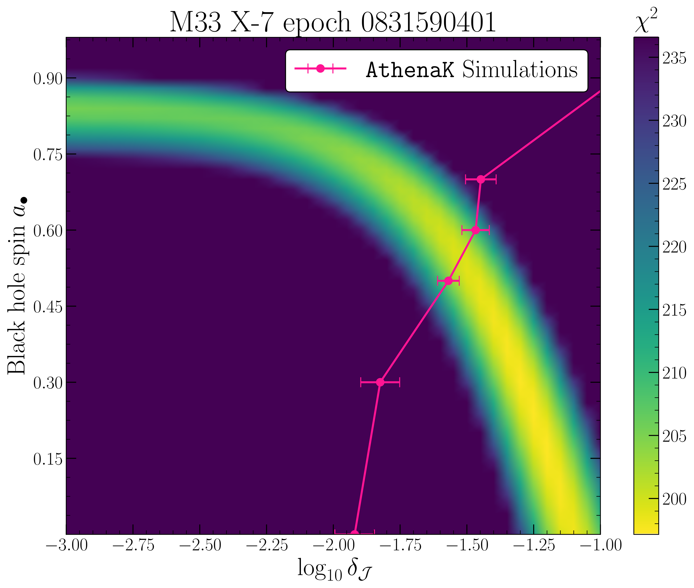展开背景、理论、公式、模型、章节和图表导读
背景知识
基础理论 / 方法脉络
公式与推导
模型拟合 / 应用方法
重点章节 / 结果段落怎么读
建议重点查看的图表
关键图表逐图导读
论文原图 / 可嵌入图片
图注：An adaptation of Figure 7 from \(\protect\cite{mummeryRapidBlackHole2025a}\): the spin-stress degeneracy contour resulting from their analysis of an epoch of the X-ray spectrum of M33 X-7. The $\chi^2$ statistic that they find for each spin-stress pairing is shown by the colour bar, as a function of the black hole spin $a_\bullet$ and the stress quantified by $\delta_\mathcal{J}$. We over-plot the values of $\delta_\mathcal{J}$ that we have found for each of our {\(\tt\) ATHENAK} simulations, along with their associated uncertainties, across the black hole spin range \(\protect\citep\)[where they lie within the parameter domain specified by][]{mummeryRapidBlackHole2025a}. We connect the simulation data points with a line as a visual aid. There is a clear intersection between the spin-stress pairings that best fit the X-ray data (indicated by the lower values of $\chi^2$) and the connecting line. We caution that this does \(\emph{not}\) constitute a spin measurement; rather it is a demonstration that in principle the observational degeneracy between the spin and the stress is not fundamental.
对应解读：对应“应力-自旋汇总图”和“M33 X-7 或连续谱退化图”，也是关键图表逐图导读中图6的观测退化核心内容。
入选理由：这张图直接把模拟得到的自旋-应力关系叠加到 M33 X-7 的 spin-stress 退化等值图上，包含横轴自旋、纵轴应力指标 \(\delta_\mathcal{J}\)、\(\chi^2\) 色标、模拟误差条和连接线，最能支撑日报关于“退化不是基本不可破”的观测含义解读。
来源与置信度：\(arxiv_source\)；high；\(arxiv_source\) / main.tex:figure[10]
Fig08
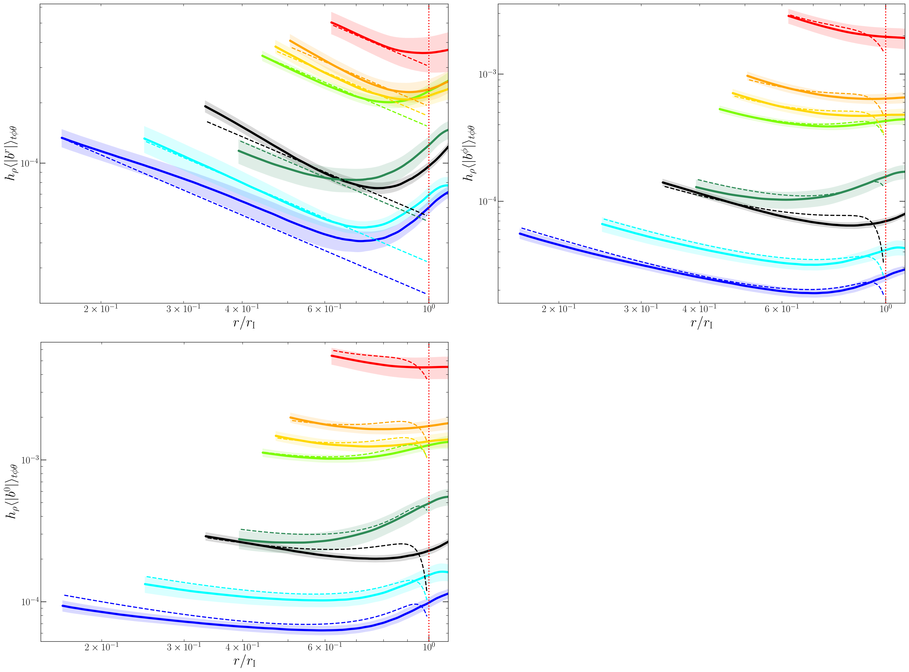
图注：The components of the magnetic four-vector, $b^\mu$, multiplied by the scale height, $h_\rho$ as a function of radius. Clockwise from the top-left: $h_\rho b^r$, $h_\rho b^\phi$ and $h_\rho b^0$. The solid lines indicate the temporally, vertically and azimuthally averaged simulated profiles. The dashed lines are the flux-freezing models (Eqs. \ref{eq:brmodel}-\ref{eq:b0model}). We have simultaneously fitted the free parameters $b^r_I$ and $b^\phi_I$ to the simulated $b^r$ and $b^\phi$ profiles. In each case, we have fixed the offset velocity, $U^r_I$, using the associated simulated radial velocity profile.
对应解读：对应“磁场分量剖面图”和模型拟合段落中通量冻结模型对 \(b^r\)、\(b^\phi\)、\(b^0\) 径向剖面的检验。
入选理由：该图明确给出模拟磁场分量与通量冻结解析模型的虚线对比，并说明同时拟合 \(b^r_I\)、\(b^\phi_I\) 等参数，是判断磁场是否随测地线内流冻结、拉伸和放大的最直接证据。
来源与置信度：\(arxiv_source\)；high；\(arxiv_source\) / main.tex:figure[8]
Fig06
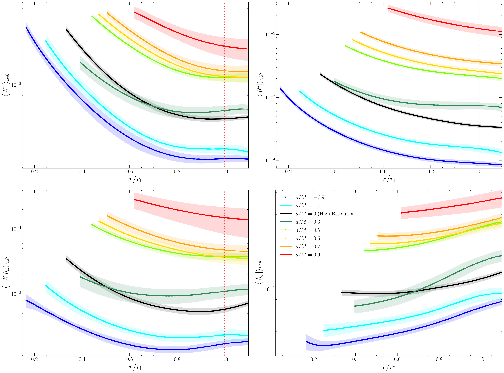
图注：Clockwise starting from the top-left: the magnitude of the $r$ and $\phi$ contravariant components of the magnetic 4-vector ($\vert b^r \vert$ and $\vert b^\phi \vert$). $\vert b_\phi \vert$, the magnitude of the covariant $\phi$ component of the same vector (bottom-right). Finally, the $r -\phi$ component of the magnetic stress-energy tensor: ${T^{r}_{\phi}}_\mathrm{mag} = -b^r b_\phi$ (bottom-left). The solid dotted lines are the vertically, azimuthally and temporally averaged radial profile of each quantity for each simulation. The shaded regions are $\pm 1 \sigma$ standard deviations.
对应解读：对应“磁场分量剖面图”和“Maxwell 应力剖面图”，尤其是 \(|b^r|\)、\(|b^\phi|\)、\(|b_\phi|\) 与 \({T^r_\phi}_{\rm mag}=-b^r b_\phi\) 的逐图导读。
入选理由：这张图同时展示磁场关键分量和 Maxwell 应力的径向剖面，并含有不同自旋曲线及 \(\pm1\sigma\) 时间波动，能直接检验俯冲区内应力不为零以及高顺行自旋下应力增强这一核心结论。
来源与置信度：\(arxiv_source\)；high；\(arxiv_source\) / main.tex:figure[6]
Fig01
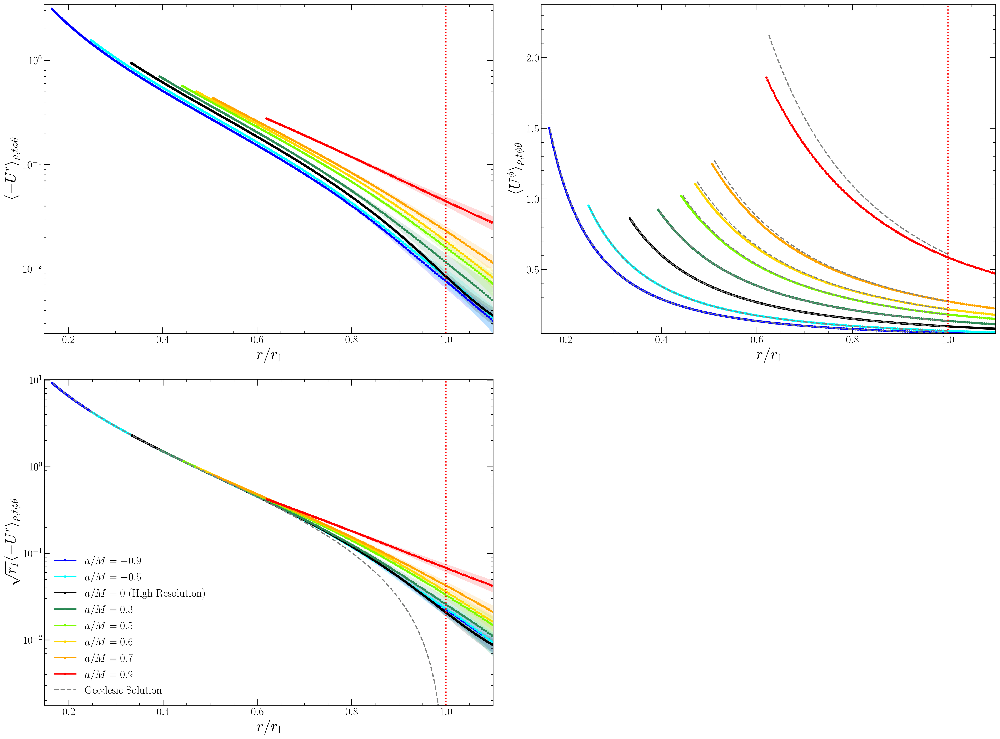
图注：The radial 4-velocity ($U^r$), both unscaled (top-left) and scaled by $\sqrt{r_I}$ (bottom), and the azimuthal 4-velocity ($U^\phi$) (top-right). The solid dotted lines are the density-weighted, temporally, azimuthally and vertically averaged quantities for each simulation. The dashed line in the bottom panel is the (spin independent) radial geodesic solution \(\citep\)[see][]{cunninghamEffectsRedshiftsFocusing1975,mummeryInspiralsInnermostStable2022}, whilst the dashed lines in the top-right panel are the (spin dependent) azimuthal geodesic solutions corresponding to the black hole spin of each simulation.
对应解读：对应“俯冲区动力学剖面图”和关键图表逐图导读中关于 \(U^r\)、\(U^\phi\) 与测地线模型线比较的部分。
入选理由：该图给出径向四速度和方位四速度的模拟平均剖面，并叠加自旋相关或自旋无关的测地线解，是验证“俯冲流近似测地线、低自旋最吻合”这一动力学基础的首要图。
来源与置信度：\(arxiv_source\)；high；\(arxiv_source\) / main.tex:figure[1]
Fig05
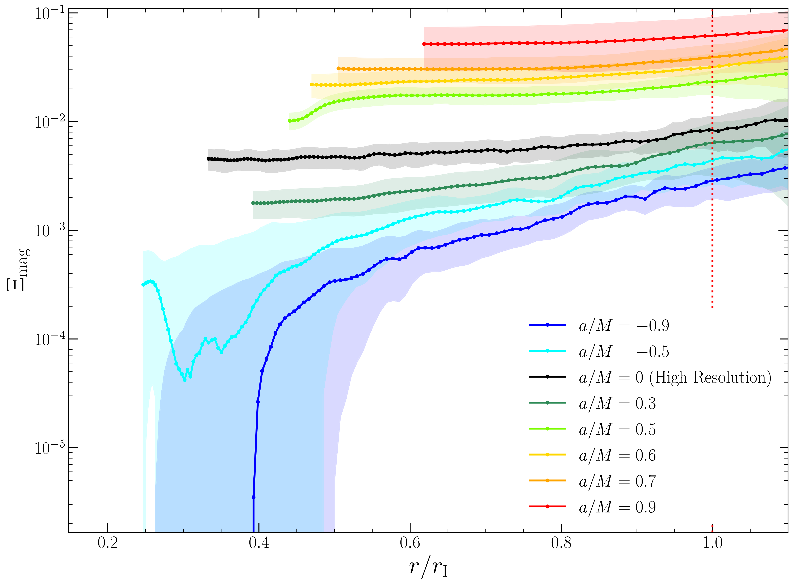
图注：Time averaged radial profiles of the shell integrated radial flux of angular momentum ($\dot{J}_\mathrm{mag}$) of magnetic origin normalised by the mass accretion rate ($\dot{M}$) for each simulation. The shaded region indicates a $\pm1\sigma$ standard deviation.
对应解读：对应“Maxwell 应力剖面图”以及模型拟合段落中磁性角动量通量 \(\dot J_{\rm mag}/\dot M\) 随半径和自旋变化的诊断。
入选理由：该图以径向剖面形式展示磁性角动量通量并带有 \(\pm1\sigma\) 波动区间，比单纯磁场形态图更适合评估俯冲区磁应力的幅度、自旋排序和统计稳健性。
来源与置信度：\(arxiv_source\)；high；\(arxiv_source\) / main.tex:figure[5]
Fig03
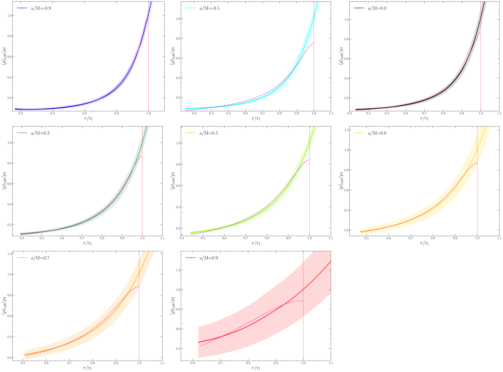
图注：The plunging region radial density profile of each simulation, normalised to the value at the ISCO. Solid lines indicate the normalised vertically, azimuthally and temporally averaged density profiles, $\langle \rho \rangle_{t \phi \theta}/\rho_I$. The shaded regions represent a $\pm1 \sigma$ temporal standard deviation (see \citetalias{rulePlungingRegionThin2025a}). The dashed lines are fitted \(\citetalias{mummeryAccretionInnermostStable2023}\) density models for each simulated profile. It is important to note that we model $K$ with a different fitted power-law in each case.
对应解读：对应“热力学量剖面图”和模型拟合段落中密度 (\
ho(r)) 与解析热力学/密度模型的比较。
入选理由：该图展示归一化密度径向剖面、时间标准差阴影以及拟合的解析密度模型虚线，能支撑日报对热力学框架是否跟随模拟、是否存在系统偏离的讨论。
来源与置信度：\(arxiv_source\)；high；\(arxiv_source\) / main.tex:figure[3]
强相关工作
这篇工作与经典薄盘理论、零扭矩边界条件争论、以及广义相对论磁流体模拟薄盘文献直接相连。应检索关键词包括“Novikov Thorne thin disk zero torque ISCO”、“GRMHD stress inside ISCO”、“plunging region magnetic stress”、“continuum fitting black hole spin inner torque”。相关历史线索包括 Novikov-Thorne 模型、Page-Thorne 相对论薄盘通量公式，以及 Krolik、Gammie、Agol 和相关作者关于 \(r_{\rm ISCO}\) 内磁应力的讨论。
在观测应用上，本文与恒星质量黑洞连续谱自旋测量文献相关，尤其是 M33 X-7 这类高质量 X 射线双星的自旋测量。应检索“M33 X-7 black hole spin continuum fitting”、“black hole spin stress degeneracy”、“returning radiation spectral hardening continuum fitting”。可能的张力来自两类方向：一类坚持零扭矩薄盘在薄而热稳态下足够准确，另一类认为磁应力、盘厚、辐射转移和非热污染会给自旋带来显著系统误差。本文的贡献是把这场争论从“是否存在应力”推进到“应力如何随自旋被物理约束”。
同一事件 / 同类源线索：
相似工作：
- https://arxiv.org/abs/astro-ph/9905351
- https://arxiv.org/abs/astro-ph/0009231
- https://arxiv.org/abs/1201.2112
基础理论 / 方法工作：
- https://ui.adsabs.harvard.edu/abs/1973blho.conf..343N/abstract
- https://ui.adsabs.harvard.edu/abs/1974ApJ...191..499P/abstract
- https://ui.adsabs.harvard.edu/abs/1998ApJ...498..677G/abstract
相反观点 / 张力线索：
7. Kinematically Resolving the Fe K Complex in Her X-1: The Accretion Disk and Ionized Wind Across X-ray Eclipses
- 来源：arXiv / astro-ph.HE
- 链接：https://arxiv.org/abs/2608.05719v1
- 作者：Koh Sakamoto, Teruaki Enoto, Peter Kosec, Takeshi GO Tsuru, Takuto Narita, Daijiro Hitotsuyanagi, Laura Brenneman, Ruediger Staubert
- 评分：novelty 8/10，importance 8/10，relevance 7/10，final 8.65/10
- 推荐理由：XRISM/Resolve 高分辨率谱学解析 Her X-1 的 Fe K 复合线，约束吸积盘与电离盘风运动学；对 X 射线高能天体物理和未来谱学方法有价值。
中文题目：用 XRISM/Resolve 在食相中运动学分解 Her X-1 的铁 K 复合线：吸积盘与电离风
做了什么：这篇文章用 XRISM/Resolve 在 2024 年 9 月跨越三次 X 射线食的高分辨率谱，分解了 Her X-1 的铁 K 复合线：中性荧光的 Fe K\(\alpha\)、Fe K\(\beta\)，以及高电离的 Fe XXV He\(\alpha\)、Fe XXVI Ly\(\alpha\)。核心结论是：中性 Fe K\(\alpha\) 在食中相不显著，说明它主要来自中子星附近或内侧较紧凑区域；而高电离铁线在食中仍可见，说明发射区更大，符合盘风。作者还利用入食、出食时中性线的约 \(200\,{\rm km\,s^{-1}}\) 残余红移和蓝移，把它解释为外吸积盘的开普勒转动；再用 SPEX 的 \(\texttt{pion}\) 光电离模型和线通量比约束风的电离参数、柱密度、内边界和质量外流率。
为什么重要：Her X-1 是研究 X 射线双星吸积盘、遮挡、盘风和中子星辐照反馈的经典实验室，但过去铁 K 区域常被仪器能量分辨率限制，难以把中性荧光、He-like 铁、H-like 铁以及速度结构干净拆开。XRISM/Resolve 的约 \(5\,{\rm eV}\) 分辨率把速度尺度推进到几百 \({\rm km\,s^{-1}}\) 量级，使食相几何不再只是“亮度被挡住”，而成为定位发射区和测量风结构的工具。
理论 / 观测 / 仪器方法价值：对观测而言，本文展示了微量热计如何在强线复合区中做运动学分解；对理论而言，它给出中性反射/荧光与高电离盘风在空间尺度上的直接区分；对方法而言，它把食相选择、轨道速度修正、线心漂移、光电离拟合和通量比几何诊断连成一个可复用框架。它还给出了与热驱动盘风相容的风内边界 \(R_{\rm in}=3^{+5}_{-2}\times10^{10}\,{\rm cm}\) 和质量外流率 \(\dot{M}_{\rm out}\approx3.2\times10^{-9}\,M_\odot\,{\rm yr^{-1}}\)，可与非食相吸收线测量互相校验。
为什么应该关注：如果你关心 X 射线双星的盘风质量损失、照射盘结构、铁线诊断或 XRISM 的科学能力，这篇值得读。它不是只报告“看见了几条线”，而是利用食相几何把同一铁 K 复合线中的不同成分分别定位到紧凑盘区和扩展风区，并给出可检验的速度、半径、电离和质量流率标尺。
展开详细解读：文章讲解、背景、理论、重点章节、图表与相关工作
文章详细讲解
科学问题：Her X-1 是一个食双星系统，紧凑天体是吸积中子星，伴星周期性遮挡 X 射线源。这样的几何特别适合做“空间过滤”：如果某条谱线在食中消失，说明它的主要发射区足够紧凑并被伴星挡住；如果食中仍存在，则说明它来自更扩展的吸积盘、盘晕或盘风。铁 K 区域同时含有中性荧光线和高度电离铁线，是区分冷反射材料与热/光电离气体的关键窗口。过去问题在于 Fe K\(\alpha\)、Fe K\(\beta\)、Fe XXV He\(\alpha\)、Fe XXVI Ly\(\alpha\) 相互接近，CCD 谱很难把线心、宽度和速度分离到几百 \({\rm km\,s^{-1}}\) 级。
作者怎么做：论文利用 XRISM/Resolve 在 2024 年 9 月观测 Her X-1，覆盖三次 X 射线食，并把数据按入食、食中、出食等相位分段。Resolve 的约 \(5\,{\rm eV}\) 能量分辨率足以分辨铁 K 复合线的主要窄线成分。作者首先用经验谱模型识别中性与高电离铁线，修正系统速度和中子星轨道运动后检查线心残余速度；随后用 SPEX 的 \(\texttt{pion}\) 光电离模型拟合高电离线，得到电离参数 \(\xi\)、等效氢柱密度 \(N_{\rm H}\) 等风参数；最后用食相中/食相外或不同相位的线通量比，建立几何约束以推断团块状盘风内边界。
关键结果：中性 Fe K\(\alpha\) 在食中相不显著，这支持它不是主要来自大尺度星风或广泛包层，而是来自接近中子星、内盘或被中子星照亮的较紧凑盘面区域。入食和出食时，校正系统速度与中子星轨道速度后，Fe K\(\alpha\) 线心分别呈现约 \(200\,{\rm km\,s^{-1}}\) 的红移和蓝移。作者把这个反号速度解释为食相选择下看到外盘两侧的开普勒转动，并推得特征半径 \(r_{\rm disk}\sim6.6\times10^6\,{\rm km}\)。与此同时，Fe XXV He\(\alpha\) 与 Fe XXVI Ly\(\alpha\) 在食中仍可见，说明高电离铁发射区比被伴星遮挡的紧凑源更大，符合电离盘风。
局限和下一步：该解释依赖若干几何假设，例如线发射的方位分布、盘倾角、食相遮挡边界、风的团块性和发射各向同性。中性线的速度位移也可能受到线混合、局部湍动、反射面非轴对称性或盘翘曲的影响。盘风参数来自光电离平衡模型，受连续谱形状、气体密度、覆盖因子、丰度和多相结构影响。下一步最有价值的是在更多主高态、短高态和超轨道相位重复同类观测，并把发射线诊断与非食相吸收线、脉冲相位分辨谱和三维辐射转移模型联合起来。
关键结果是怎么做出来的
本文最重要的证据链从样本选择开始：作者不是把整段 XRISM 观测简单合并，而是利用 Her X-1 的食双星几何，把三次 X 射线食分成入食、食中和出食等相位区间。这样做的优势是，伴星遮挡相当于一个天然的空间滤波器；同一条谱线在不同食相的显著性、通量和线心速度可直接提示发射区尺度和位置。样本量的关键不是源数，而是三次食覆盖提供的相位重复性和 Resolve 在每个相位段内对铁 K 线的有效计数。
线探测方面，作者利用 Resolve 的高能量分辨率分开中性 Fe K\(\alpha\)、Fe K\(\beta\)、Fe XXV He\(\alpha\) 与 Fe XXVI Ly\(\alpha\)。中性 Fe K\(\alpha\) 在入食和出食显著，在食中相不显著；高电离线则在食中仍保留。显著性应主要来自加入窄线后统计量改善、线通量置信区间是否排除零、以及相位分段中背景和连续谱不确定性是否能解释残差。读者应重点看铁 K 区域残差图：没有线时残差在哪里，加入各线后残差如何消失。
运动学结果依赖速度修正。作者先从观测线心能量换算为视向速度，再扣除系统速度和中子星轨道运动，得到入食/出食约 \(200\,{\rm km\,s^{-1}}\) 的残余红蓝移。这里的关键不是绝对速度很大，而是两个相位符号相反，符合从盘的不同方位看到旋转速度分量。利用开普勒关系可把速度转成外盘特征半径，得到 \(r_{\rm disk}\sim6.6\times10^6\,{\rm km}\)。支持这一结论的图表应包括分相谱线心、速度校正表、以及速度与食相的对应关系。
风诊断方面，Fe XXV 与 Fe XXVI 在食中存在，是扩展发射区的直接证据。作者用 SPEX \(\texttt{pion}\) 模型给出 \(\log_{10}(\xi/{\rm erg\,cm\,s^{-1}})\sim3.4\) 和 \(N_{\rm H}\sim3.1\times10^{22}\,{\rm cm^{-2}}\)，这些数值与 Her X-1 非食相吸收线所推断的电离盘风相容。通量比诊断进一步约束团块状风的几何内边界为 \(R_{\rm in}=3^{+5}_{-2}\times10^{10}\,{\rm cm}\)，说明风起始尺度与康普顿加热热风预期不冲突。
主要系统误差包括：Resolve 能标校准对几百 \({\rm km\,s^{-1}}\) 速度的影响，连续谱模型对窄线通量的影响，食相划分边界对线显著性的影响，铁线复合结构中卫星线或未建模成分对线心的拉动，以及光电离模型中连续谱、密度和丰度假设对 \(\xi\) 与 \(N_{\rm H}\) 的耦合。稳健性检验应包括改变连续谱、改变相位窗口、允许线宽变化、比较经验高斯线与物理光电离模型、以及检验不同食事件给出的趋势是否一致。
展开背景、理论、公式、模型、章节和图表导读
背景知识
Her X-1/HZ Her 是最经典的高倾角 X 射线双星之一，由一颗吸积中子星和 Roche-lobe 溢出的伴星构成。系统有轨道周期、脉冲周期和约 \(35\) 天超轨道调制，通常解释为翘曲吸积盘的进动改变了中心 X 射线源的可见性。由于存在深 X 射线食，Her X-1 长期被用来研究吸积盘几何、照射伴星、盘晕和外流。
铁 K 谱线在 X 射线双星中是非常有用但也容易误读的诊断。中性或低电离 Fe K\(\alpha\) 通常指示冷而致密的反射/荧光材料，例如盘面、伴星表面或较冷的遮挡结构；Fe XXV 和 Fe XXVI 则需要高电离气体，常见于光电离盘风、盘晕或热等离子体。问题是这些线在 \(6\) 到 \(7\,{\rm keV}\) 附近聚集，低分辨谱可能把多个物理区域混成一个“宽铁线”或一个表观线心。
过去对 Her X-1 盘风的认识很大程度来自非食相吸收线：当视线穿过电离气体时，会看到蓝移或窄吸收特征。但发射线给出的是不同的信息，尤其在食中中心源被挡住后，扩展气体仍被照亮或仍在复合发射，就能暴露原本被强连续谱淹没的成分。因此，食相分辨的高分辨谱是连接“吸收线测到的视线风”和“发射线看到的全局风”的关键。
现在值得重新看，是因为 XRISM/Resolve 提供了微量热计级能谱分辨率，同时具有适合明亮 X 射线双星的灵敏度。它能把数 \({\rm eV}\) 的能量位移转化为数百 \({\rm km\,s^{-1}}\) 的速度诊断。对于 Her X-1 这种轨道速度、盘转动、风速度都处在可测范围内的系统，Resolve 的数据质量足以把“线存在/不存在”的定性判断推进到“线从哪里来、以什么速度运动”的定量判断。
该领域常见误区有三点。第一，不应把所有铁 K 发射都默认归因于内盘相对论反射；在高倾角食双星中，外盘、盘风和伴星照射面都可能贡献窄线。第二，食中仍有发射并不一定说明中心源没被完全遮挡，也可能说明发射区本身扩展。第三，光电离参数 \(\xi\) 不是单独决定风半径的量；若不知道密度 \(n\)、照射光度 \(L\) 和几何覆盖，\(\xi\) 与半径之间存在强退化。
基础理论 / 方法脉络
基本物理图像是：中子星附近的 X 射线连续谱照亮周围材料。冷或低电离铁吸收高能光子后可产生 Fe K\(\alpha\) 和 Fe K\(\beta\) 荧光；高电离气体中，He-like 与 H-like 铁离子通过复合、级联和共振散射产生 Fe XXV He\(\alpha\) 与 Fe XXVI Ly\(\alpha\)。不同电离态要求不同的 \(\xi\)、温度和柱密度，因此铁 K 复合线天然携带空间和物理状态信息。
食双星提供几何约束。若发射区尺度小于伴星在天空中的遮挡投影，它会在食中相被压低或消失；若发射区大到延伸出遮挡区域，它仍可见。入食与出食还会选择性地遮挡盘的不同方位，因此旋转盘的红移侧和蓝移侧可能在不同相位占优。本文对中性 Fe K\(\alpha\) 的解释正是基于这种相位选择效应。
速度测量来自谱线能量位移。对于非相对论速度，线心偏移满足 \(v/c\simeq -\Delta E/E_0\)。但是 Her X-1 是双星，中子星本身有轨道视向速度，系统也有质心速度；如果不扣除这些项，几百 \({\rm km\,s^{-1}}\) 的盘转动信号可能被污染。本文的残余红蓝移是在修正系统速度和中子星轨道运动后得到的。
光电离模型的核心量是电离参数 \(\xi=L/(n r^2)\)，它衡量单位密度气体接受的辐照强度。SPEX \(\texttt{pion}\) 会在给定连续谱、柱密度、速度、湍动和丰度的条件下求解离子平衡并计算线发射/吸收。对本文而言，\(\xi\) 和 \(N_{\rm H}\) 主要由 Fe XXV 与 Fe XXVI 的相对强度及总线强度约束，但它们与覆盖因子、密度分布和多相结构有退化。
观测方法上的关键系统误差包括能标、有效面积、背景、连续谱建模和相位选择。铁 K 窄线线心的 \({\rm eV}\) 级误差会直接对应几十到数百 \({\rm km\,s^{-1}}\) 的速度误差；连续谱斜率或反射边缘建模不当会影响线通量；若盘风是团块状的，单一区域光电离模型给出的 \(\xi\) 和 \(N_{\rm H}\) 应被看作等效值而非完整三维结构。
公式与推导
第一步是把谱线能量位移转成速度。对速度远小于光速的气体，观测线心 \(E_{\rm obs}\) 与静止能量 \(E_0\) 的关系可写为
这里 \(v_{\rm los}>0\) 表示远离观测者的红移，\(c\) 是光速。该式适用于本文约 \(200\,{\rm km\,s^{-1}}\) 的残余速度，因为 \(v/c\ll1\)。
第二步要扣除非局部速度项。线心给出的原始速度可分解为
其中 \(v_{\rm sys}\) 是系统质心速度，\(v_{\rm NS,orb}(\phi)\) 是中子星在轨道相位 \(\phi\) 的视向速度，\(v_{\rm gas}\) 是气体自身运动。本文讨论的约 \(200\,{\rm km\,s^{-1}}\) 红蓝移对应修正后的 \(v_{\rm gas}\)。
第三步把残余速度解释为盘旋转。若气体在半径 \(r\) 处绕质量 \(M\) 的中子星作开普勒运动，圆周速度为
其中 \(G\) 是引力常数。观测到的是投影速度，因此近似有
其中 \(i\) 是盘倾角，\(\theta\) 表示被食相选择出来的盘方位角。若几何投影项已估计，就可由 \(v_{\rm gas}\) 反推 \(r\)。
第四步给出半径标尺。把上式反解，得到
其中 \(f_{\rm proj}=\sin i\cos\theta\) 是投影因子。本文给出的 \(r_{\rm disk}\sim6.6\times10^6\,{\rm km}\) 表示中性 Fe K\(\alpha\) 的主要贡献与外吸积盘尺度相容，而不是极内盘相对论区。
第五步是光电离参数。受中子星 X 射线光度 \(L_{\rm ion}\) 照射的气体满足
其中 \(n\) 是氢数密度，\(r\) 是到电离源的距离。本文得到 \(\log_{10}(\xi/{\rm erg\,cm\,s^{-1}})\sim3.4\)，这是 Fe XXV 和 Fe XXVI 能同时显著出现的典型高电离区间。
第六步是柱密度与发射/吸收强度。沿视线或等效路径 \(s\) 的柱密度为
本文的 \(N_{\rm H}\sim3.1\times10^{22}\,{\rm cm^{-2}}\) 是光电离模型的等效柱密度，控制线光深、复合发射强度和连续吸收边缘的强弱。
第七步把线通量和发射度量联系起来。对光薄复合线，可用近似关系
其中 \(D\) 是距离，\(n_e\) 是电子密度，\(n_{Z^{+q}}\) 是相关离子数密度，\(\alpha_{\rm eff}\) 是有效复合或级联系数，\(h\nu\) 是线光子能量。食相中仍有 \(F_{\rm line}\) 表明积分体积 \(dV\) 中有相当部分未被伴星遮挡。
第八步是用统计量评估线是否需要。若每个能道计数近似泊松分布，模型期望为 \(m_i\)，观测为 \(d_i\)，Cash 统计量可写作
加入某条线后 \(\Delta C=C_{\rm no\ line}-C_{\rm with\ line}\) 越大，说明线成分越被数据支持；线通量置信区间若包含零，则探测不显著。本文中食中相中性 Fe K\(\alpha\) 不显著，而高电离线仍显著，正是空间定位的核心诊断。
第九步估算风质量外流率。若风在半径 \(R\) 处以速度 \(v_{\rm out}\) 流出，覆盖因子为 \(\Omega/4\pi\)，则量级估计为
其中 \(\mu m_p\) 是平均粒子质量。本文得到 \(\dot{M}_{\rm out}\approx3.2\times10^{-9}\,M_\odot\,{\rm yr^{-1}}\)，约为供应质量流率的一半，说明盘风是质量预算中的重要项而非微弱附属现象。
模型拟合 / 应用方法
本文的拟合可分为两层：经验谱线拟合和物理光电离拟合。经验层面通常先建立连续谱，再在铁 K 区域加入窄高斯线或有限宽度线，拟合线心、线宽和通量。关键输出是不同食相的 Fe K\(\alpha\)、Fe K\(\beta\)、Fe XXV He\(\alpha\)、Fe XXVI Ly\(\alpha\) 的线心能量和通量，以及加入线后统计量改善。残差图比最佳拟合参数本身同样重要，因为铁 K 区域未建模残差会直接影响线心和通量。
物理层面使用 SPEX \(\texttt{pion}\) 模型处理高电离气体。拟合量包括 \(\xi\)、\(N_{\rm H}\)、速度位移、湍动速度、归一化或覆盖相关参数，并依赖输入的电离连续谱。Fe XXV 与 Fe XXVI 的相对强度主要约束 \(\xi\)，总强度和边缘/连续吸收贡献约束 \(N_{\rm H}\)，线宽则可能反映湍动、速度剪切或多区混合。
参数退化是解读重点。\(\xi=L/(nr^2)\) 导致 \(n\) 与 \(r\) 退化；\(N_{\rm H}\) 与覆盖因子、丰度和体积分布退化；线通量与发射区被遮挡比例退化。中性 Fe K\(\alpha\) 的速度解释也依赖盘倾角和食相选择的投影因子。若投影因子估计偏差，推得的 \(r_{\rm disk}\) 会按速度平方放大误差。
系统误差方面，Resolve 能标会影响速度；有效面积和背景会影响弱线显著性；连续谱模型会影响线等效宽度；相位窗口会影响食中是否混入未完全遮挡的入食/出食光子。对于 Her X-1，还要注意超轨道相位和盘翘曲可能改变遮挡结构，使不同观测纪元的线强不能简单相加比较。
实际应用中，读者应看三个诊断：第一，去掉某条线后的局部残差是否集中在正确能量；第二，不同食相的线通量变化是否超过统计和系统误差；第三，光电离模型是否同时解释 Fe XXV 与 Fe XXVI，而不是只拟合其中一条。一个模型可能在统计上可接受，但若需要不合理的 \(\xi\)、\(N_{\rm H}\)、覆盖因子或质量外流率，就应被物理上质疑。
重点章节 / 结果段落怎么读
数据/样本部分应先读。重点确认 XRISM/Resolve 观测覆盖了哪些轨道相位、三次食如何定义入食、食中和出食、是否排除了仪器异常时段，以及背景和响应如何处理。对这篇文章，时间选择就是空间诊断的基础。
谱线识别与经验拟合部分是第二个重点。读者应检查铁 K 区域如何建模：连续谱是什么，哪些线被加入，线宽是否固定或自由，Fe K\(\beta\) 与 Fe K\(\alpha\) 的关系是否合理，高电离线是否需要额外成分。这里决定“中性线食中消失、高电离线食中存在”的可信度。
运动学分析部分要仔细读速度修正。关键是作者如何从线心能量得到速度，如何扣除系统速度和中子星轨道速度，以及入食/出食的红蓝移是否在误差内对称。由此推导的 \(r_{\rm disk}\) 对投影几何很敏感。
光电离建模与盘风几何部分是本文物理解释的核心。应关注 SPEX \(\texttt{pion}\) 的输入连续谱、拟合得到的 \(\xi\) 和 \(N_{\rm H}\)、Fe XXV/Fe XXVI 通量比如何转化为风内边界 \(R_{\rm in}\)，以及质量外流率 \(\dot{M}_{\rm out}\) 的覆盖因子和速度假设。
讨论和稳健性检验部分用于判断结论边界。应看作者是否讨论了盘翘曲、团块风、线混合、能标误差、相位窗口选择和与非食相吸收线结果的一致性。若附录有替代连续谱或不同相位划分，建议优先检查。
建议重点查看的图表
-
全观测光变曲线与食相划分图：看三次食的入食、食中、出食窗口如何定义，是否有相位混叠或亮度异常。
-
分相位铁 K 区域谱图：看 Fe K\(\alpha\)、Fe K\(\beta\)、Fe XXV He\(\alpha\)、Fe XXVI Ly\(\alpha\) 是否被 Resolve 清楚分开，食中相中性线残差是否消失。
-
线心速度随食相变化图或表：看系统速度和中子星轨道速度修正后，入食红移与出食蓝移是否达到约 \(200\,{\rm km\,s^{-1}}\)，误差条是否支持符号反转。
-
线通量或等效宽度随食相变化图：看中性线与高电离线的相位行为是否不同，这是区分紧凑发射区和扩展盘风的直接证据。
-
SPEX \(\texttt{pion}\) 光电离拟合置信区间图：重点看 \(\xi\) 与 \(N_{\rm H}\) 的联合置信区间、是否存在多解，以及 Fe XXV/Fe XXVI 比值对 \(\xi\) 的约束强度。
-
风几何内边界或通量比诊断图：看 \(R_{\rm in}=3^{+5}_{-2}\times10^{10}\,{\rm cm}\) 的误差如何来自观测通量比和几何模型，而不是单一模型假设。
-
残差和稳健性表：看替代连续谱、不同相位窗口或不同线宽假设下，核心结论是否保持。
关键图表逐图导读
图 1：通常应是 XRISM 观测光变曲线和轨道相位示意。横轴应为时间或轨道相位，纵轴为计数率或通量，阴影区标出入食、食中、出食。读图重点是三次食是否覆盖完整、食中窗口是否足够干净。陷阱是把食边界附近的部分遮挡数据混入食中，会人为增强紧凑区线通量。
图 2：应关注分相位铁 K 谱。横轴为能量，纵轴为计数谱、通量谱或数据/模型比；模型线应包含连续谱和若干铁线成分。关键是中性 Fe K\(\alpha\) 在入食/出食可见而食中不显著，高电离 Fe XXV 与 Fe XXVI 在食中仍有残差峰。陷阱是局部连续谱若拟合不稳，弱线显著性会被高估或低估。
图 3：线心速度或能量随食相变化图。横轴为食相或相位段，纵轴为修正后的 \(v_{\rm gas}\) 或线心能量偏移。模型线可能表示开普勒盘两侧的红蓝移预期。读图重点是入食和出食是否呈反号速度，并且误差条是否小于或接近 \(200\,{\rm km\,s^{-1}}\)。陷阱是未扣除轨道速度或能标系统误差时，表观红蓝移可能被误判。
图 4：线通量随相位变化图。横轴为入食、食中、出食，纵轴为线通量或等效宽度，不同颜色代表中性与高电离铁线。关键结论应是中性线在食中相降到上限，而高电离线仍为正探测。陷阱是等效宽度在连续谱变暗时可能上升，不能直接等同于真实线光度增强。
图 5：光电离模型置信区间。横轴可能为 \(\log_{10}\xi\)，纵轴为 \(N_{\rm H}\) 或模型归一化，等高线表示 \(1\sigma\)、\(2\sigma\) 置信区间。读图重点是 \(\log_{10}(\xi/{\rm erg\,cm\,s^{-1}})\sim3.4\) 和 \(N_{\rm H}\sim3.1\times10^{22}\,{\rm cm^{-2}}\) 是否由闭合等高线支持。陷阱是多相风可能让单区模型的误差看起来过小。
图 6：风内边界和质量外流率诊断。横轴可能为 \(R_{\rm in}\)、覆盖因子或通量比，纵轴为预测线比、可见分数或 \(\dot{M}_{\rm out}\)。读图重点是观测允许区是否覆盖热驱动风预期尺度，以及 \(\dot{M}_{\rm out}\) 是否接近供应质量流率的显著比例。陷阱是覆盖因子和风速度若取值不同，质量外流率会线性改变。
论文原图 / 可嵌入图片
Fig03
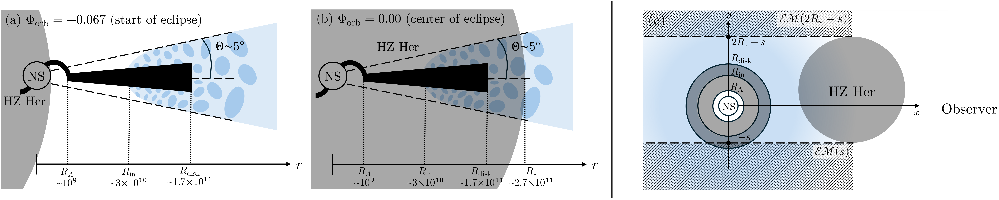
图注：Schematic of the Her~X-1 system geometry (not to scale): (a) side-on view at start of eclipse ($\Phi_{\rm orb}=-0.067$) and (b) center of eclipse ($\Phi_{\rm orb}=0.00$). The clumpy disk wind (blue) is launched with a biconical half-opening angle of $\sim 5^\circ$. Key radii indicated are the Alfv\'{e}n radius $R_A \sim 10^{9}$~cm, the wind inner boundary $R_{\rm in} \sim 3 \times 10^{10}$~cm, the outer edge of the accretion disk $R_{\rm disk} \sim 1.7 \times 10^{11}$~cm \(\citep{Howarth1983},\) and the companion star radius $R_\ast \sim 2.7 \times 10^{11}$~cm. (c) Top-down view of the orbital plane, with the observer along the $x$-axis. The hatched regions indicate the portions of the wind visible to the observer during eclipse, and the observed emission line flux corresponds to $\mathcal{EM}(s)$ and $\mathcal{EM}(2R_\ast - s)$ from the near and far limbs of HZ~Her, respectively, where $s \geq 0$ is the projected distance from the neutron star to the near limb of HZ~Her.
对应解读：建议重点查看的图表第6项“风几何内边界或通量比诊断图”，以及关键图表逐图导读中关于风内边界、可见风区和质量外流率诊断的段落。
入选理由：候选图中只有 Fig03 真实存在，且它直接展示 Her X-1 食期间的系统几何、团块状盘风、可见发射区域以及关键尺度，包括 \(R_in\)≈3×10^10 cm、外盘半径和伴星半径。这与日报强调的通过食相通量比约束盘风内边界最相关，可帮助读者理解为什么食中仍能看到高电离 Fe XXV/Fe XXVI 线，以及几何遮挡如何进入风模型。虽然它不是谱线残差或置信区间图，但在现有候选中科学支撑价值最高。
来源与置信度：\(arxiv_source\)；high；\(arxiv_source\) / main.tex:figure[3]
强相关工作
这篇工作与 Her X-1 的长期研究直接相连，属于同一源的食相高分辨 X 射线谱研究。应把它放在三类文献旁边读：Her X-1 的发现和轨道/脉冲/超轨道行为，Chandra 或 XMM-Newton 对 Her X-1 铁线与吸收线的高分辨观测，以及热驱动或光电离盘风理论。建议检索关键词包括 “Her X-1 Fe K line eclipse”, “Her X-1 disk wind photoionized”, “Her X-1 Chandra HETGS”, “Her X-1 XMM Newton RGS”, “XRISM Resolve Her X-1”。
相似工作包括其他高倾角 X 射线双星的盘风吸收线研究，例如 GRO J1655-40、4U 1630-47、EXO 0748-676、4U 1822-371 等；这些系统显示盘风常在高倾角更容易被看见。可能的张力在于风的驱动机制：热驱动、辐射压力、磁流体驱动在不同半径和电离状态下给出不同质量流率和速度标度。本文推得的 \(R_{\rm in}\) 与康普顿加热热风相容，但不能单独排除磁驱动或多相团块结构。
同一事件 / 同类源线索：
相似工作：
基础理论 / 方法工作：
- https://ui.adsabs.harvard.edu/abs/1972ApJ...174L.143T/abstract
- https://ui.adsabs.harvard.edu/abs/1983ApJ...270..119B/abstract
相反观点 / 张力线索：
说明
评分由 LLM 给出初评，再由本地阈值策略过滤；IACT、TeV 伽马射线和高能中微子天文学按重点方向处理。